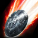
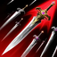
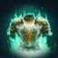

Global Season 1
Class guides, gear routes and planners
Builds for every class, the item-level route from 45 to the first raid, crafting recipes with the math done, and a planner for gear, skills and Daevanion boards. Every number names its source: the game database, ranked players, or a named creator.
Classes
Every class has a full guide: skills, stigmas, rotation, Daevanion plans and the global gear route.
What's inside every guide
Skills, specializations, stigmas, rotations and macros, plus a leveling path from 1 to 45 with checklists that remember your progress.
Skill values, recipes and item levels come from the questlog.gg database. Builds are cross-checked against ranked players' profiles.
Every slot from a fresh 45 to item level 2,700, what each upgrade adds, and what to gather and craft for your class.
Aion 2 at a glance
- Factions: every character is Elyos or Asmodian. Among ranked characters on Taiwan servers the split is almost even: 49.3% Elyos (109.4K) and 50.7% Asmodian (112.6K).
- Leveling: levels 1–45 open the game's systems one by one: skills, enhancement, Daevanion boards, stigmas and daily content. Level 45 opens the endgame.
- Item level (iLv): after 45, an account-power score gates content. On global: Draupnir around 700, Vakron 1,400, Transcendence 1,600, Ferocious Horn Den 2,100, and the 10-player raid at 2,800.
- Ranked content: Abyss (open-world PvP, ranked by KDA), Nightmare and Transcendence (PvE score), Solo and Team Arena (PvP), and Subjugation and Awakening (PvE).
- Regions: rankings and tier lists here use Taiwan server data; questlog also tracks Korea.
Class tier list
Tiers come from leaderboard performance in each content type on Taiwan servers, from the questlog.gg tier list. Share is each class's portion of all ranked characters.
What's new
- Every guide now follows the global route (1,400 → 1,900 → 2,100 → 2,500 → 2,800 raid) with global item levels. Korean leveling-weapon paths are replaced, Taiwan ladders are labeled, and the Brawler is removed for now.
- New layout: class menu, Guides menu, launch countdown, and separate pages for After level 45, Gathering & crafting and Sources. Added gathering tips and an alternative route from community sources.
- Gearing corrected from Aragon's full transcript: Ferocious Horn Den at 2,100, materials for transfer crafts, and Transcendence card sources.
- Per-class global gear-up tables with crafting and gathering math, crafting recipes, and a visual fast track to the raid.
- Gladiator guide revised with Chef_Zhab's PvE build, including macros and stigma order.
Recent patches
All classes
Classes
Eight classes, each with one weapon type. Pick by the content you want to play: the tier list shows where each class ranks today.
Compare classes
Abyss KDA is the average kills-plus-assists per death of ranked players in each class (Taiwan).
Which class fits you
Top PvE scores
- Assassin: S in Nightmare, Subjugation and Awakening
- Gladiator: S in Nightmare
- Chanter: S in Subjugation, A in Nightmare
PvP
- Cleric: S in Abyss, best KDA (6.25)
- Gladiator, Templar, Assassin: A across Abyss and both Arenas
- Sorcerer: A in Abyss
Solo play
- Elementalist: designed for solo play; its spirit tanks and heals
- Ranger: safe ranged damage, strong solo leveling
- Chanter: self-heals, levels well alone
Group roles
- Tank: Templar
- Healer: Cleric
- Support: Chanter
- Damage: everyone else
Shared by every class
Systems
The mechanics every character uses: stats, item level, gear slots, enchanting, skills and stigmas, Daevanion boards, Arcana and content unlocks. Class guides link here instead of repeating them.
Stats and combat math
Every main stat converts linearly at 0.1% per point, with no diminishing returns up to 1,000 points. The conversions and caps come from the questlog stat data. The damage formula below is a model: each skill has a flat value plus a fixed Attack coefficient.
Skill level raises only the flat part; the coefficient C never changes. So skill levels matter most early, and Attack matters most late.
| Stat | Gives per point |
|---|---|
| Might | +0.1% Attack |
| Precision | +0.1% Accuracy, +0.1% Critical Hit |
| Constitution | +0.1% Max HP |
| Dexterity | +0.1% Block, Evasion and Crit Resist |
| Willpower | +0.1% Status Effect Resist |
| Intelligence | +0.1% Status Effect Chance |
| Time [Siel] | +0.1% Combat Speed, Double Resist |
| Wisdom [Lumiel] | +0.1% Double Chance, -0.1% MP cost |
| Illusion [Kaisinel] | -0.1% cooldowns, Endurance Penetration |
| Destruction [Zikel] | Attack, Perfect Resist |
| Justice [Nezekan] | +0.1% Perfect, Defense |
| Freedom [Vaizel] | Accuracy, Evasion |
Caps: Critical Hit rate 50% (reduced by the target's Crit Resist), Evasion 30%.
Proc stats: Perfect makes a hit use the weapon's max Attack. Multi-hit adds up to 4 extra hits scaled by Attack. Double greatly increases final damage. Endurance halves damage taken. Regeneration heals part of the damage taken.
Stacking rule: boosts in the same pool add together, so +1% is worth 1 / (1 + what you already have). Roll the stat whose pool is emptiest.
Item level (iLv)
Global first: the requirement table for the global servers is below the Taiwan one. Our guides follow the global numbers.
The iLv shown on armory profiles is an account-power score, not the average level of your items. In 61 ranked profiles it tracks Daevanion node count most closely, then enchant level, unlocked slots, character level, skill levels and Arcana. Raising iLv means working all six.
| Content | Requirement |
|---|---|
| Conquest Tier 1 | Level 45, iLv 700 |
| Conquest Tier 2 | Level 45, iLv 1,400 |
| Conquest Tier 3 | Level 45, iLv 2,100 |
| Conquest Tier 4 | Level 45, iLv 2,800 |
| Conquest Tier 5 | Level 45, iLv 3,000 |
Global playtest requirements (may change at launch):
| Content | Global playtest |
|---|---|
| Crow Cave, Draupnir (Conquest) | iLv 700 |
| Canyon, Vakron (Conquest) | iLv 1,400 |
| Transcendence stage 1 (green / grey Arcana) | iLv 1,600 |
| Transcendence stage 2 (blue Arcana) | iLv 1,900 |
| Tier-3 Conquest: Ferocious Horn Den | iLv 2,100 (2,000 on Aragon's sheet) |
| 3-star dungeons | iLv 2,100 |
| Sanctuary raid (10-man) | iLv 2,700 |
A step-by-step route through these is on the home page: Fast track to the first raid.
Gear slots
A finished character fills 25 slots. The first 16 are there from the start; the rest open as you progress. Timings below are when most ranked profiles have them filled.
| Slots | Count | Typical by |
|---|---|---|
| Weapon, guard, helmet, shoulders, torso, pants, gloves, boots, cape | 9 | Start |
| Necklace, 2 earrings, 2 rings, 2 bracelets | 7 | Start |
| Belt, amulet, 2 runes | 4 (20 total) | iLv ~2,000 |
| 2 brooches | 2 (22) | iLv 4,000–4,500 |
| Pendant | 1 (23) | iLv ~5,000 |
| 2 seals | 2 (25) | iLv 6,000+ |
Bracelets roll god stats at about 19 points each: Time [Siel], Wisdom [Lumiel], Destruction [Zikel], Illusion [Kaisinel], Death [Triniel] (Critical Hit), Justice [Nezekan], Freedom [Vaizel], Life [Yustiel], Space [Israphel] and Destiny [Marchutan]. Wings sit outside these slots and enchant to +10. Gear grades run from Common to Legend; Legend gear comes in tiers (t1–t4), and higher tiers have higher item levels.
- Noble belt: enhance with scrolls from the map's strongholds. At +10, Substance Morph it with a blue belt to raise its grade, then enhance again. Getting it to Legend +0 is worth about 65 item level; past that, the cost climbs steeply.
- Revelation amulet: collect feathers across the map and trade them at a monolith for amulet scrolls; morph it up to Legend the same way (Legend +0 is about 65 item level).
- Clash Runes: the first comes from a regional quest, the second after finishing the story at max level. Stop at +1: past that a failed upgrade can destroy the rune. Two runes at +1 are worth about 82 item level.
- Crafted accessories and weapons: start at True Dragon / Star Dragon (faction versions of the same tier). Transfer crafting upgrades the same item toward Splendent and Wise / Ebony Dragon with wrathful materials from Conquest dungeons, so you never re-craft from scratch.
- Mana stones: intermediate stones are crafted in alchemy from lesser stones. Each one with a blue and a green engraving adds about 6–7 item level.
Enchanting and amplifying
Enhancement unlocks at level 9. Enhance Stones take gear from +0 to +15, and Amplify Stones take it from +16 to +20. A failure never downgrades the item, and each failure raises the next attempt's chance. Numbers below are for a t4 weapon.
| Step | Success | Pity per fail | Expected tries | Expected cost |
|---|---|---|---|---|
| +0 → +10 | 100% | — | 1 each | 36,680 Enhance Stones, ~0.92M gold total |
| +10 → +11 | 65% | +5% | 1.49 | ~154k Enhance Stones and ~14M gold for +10 → +15 |
| +11 → +12 | 50% | +5% | 1.86 | |
| +12 → +13 | 35% | +5% | 2.44 | |
| +13 → +14 | 25% | +5% | 3.03 | |
| +14 → +15 | 20% | +5% | 3.42 | |
| +15 → +16 | 66% | +5% | 1.47 | 9 Amplify Stones, 0.9M gold |
| +16 → +17 | 50% | +4% | 1.88 | 17 stones, 1.7M |
| +17 → +18 | 33% | +3% | 2.68 | 32 stones, 3.7M |
| +18 → +19 | 25% | +2% | 3.43 | 51 stones, 6.9M |
| +19 → +20 | 20% | +1% | 4.36 | 87 stones, 13.1M |
Rule: bring every piece to +18 before any piece goes to +20. The last step costs 87 stones against 9 for the first. Each amplify level on a weapon adds +1% Damage Boost and about +14.5 Attack. Abyss players can add up to +2% PvP Damage Boost per item with Potential Stones and 100k Abyss Points per level.
Skills, specializations and stigmas
- Skill points: the skill window opens at level 4. A skill costs 21 SP to reach level 10: levels 2–4 cost 1 SP each, 5–7 cost 2, and 8–10 cost 4.
- Specializations: every active skill has five. They unlock at skill levels 8, 12 and 16. Level 8 is reachable while leveling; 12 and 16 need skill levels from Daevanion nodes, Arcana sub-skills and gear.
- Stigmas: unlock at level 22. They are your big cooldowns, cost 75 stigma points each to reach level 20, and open specs at stigma levels 5, 10, 15 and 20.
- Passives: always on. They level with SP to 10, then only through Daevanion skill nodes and Arcana.
Daevanion boards
Daevanion boards are the largest source of power after level 45 and the strongest driver of iLv. Each board unlocks all its nodes at once.
| Board | Unlocks | Points | Contents |
|---|---|---|---|
| Nezekan | Level 12 | Daevanion crystals | Class skill levels and stats |
| Zikel | Level 20 | Daevanion crystals | Class skill levels and stats |
| Vaizel | Level 30 | Daevanion crystals | Class skill levels and stats |
| Triniel | Level 40 | Daevanion crystals | Class skill levels and stats |
| Azphel | Level 45 | Battle crystals | PvP stats, Status Effect Chance and Resist |
| Ariel, Marchutan, Yustiel | Endgame | — | Shared boards; top players fill them completely |
- You start at the center node; every node you buy must touch one you own.
- Nodes cost 1 point (Common), 2 (Rare), 3 (Legend) or 4 (Unique).
- Skill Level nodes add +1 level to one of your skills. Unique nodes hold the biggest stats (Combat Speed, Cooldown Reduction, Damage Boost, Crit Damage Boost, Multi-Hit).
- When a new board opens, buy its first nodes before finishing the old board's leftovers.
- Ranked profiles hold ~170 nodes at iLv 2,500, ~660 at 4,000 and 1,050+ at 5,500.
- Every Daevanion point spent adds 1 item level. Season 1 offers about 360 class-board points from sealed dungeons, strongholds and shops; Abyss feathers turned in at a monolith give Azphel (PvP) points, about 52 early on.
Plan yours with the questlog Daevanion planner.
Arcana
Arcana unlock at level 45. There are 10 card slots (Grail, Parchment, Compass, Bell, Libra, Mirror, Key, Hourglass, Dice, Lantern), each enchantable to +5, and each card can carry sub-skills that add levels to your class skills.
Cards drop from Transcendence: stage 1 gives green and grey cards (about +140 item level for a first set), stage 2 blue (+100), stage 4 Legend (+160). Fill every empty slot as soon as you can; an empty slot is item level you're leaving behind.
| Set | 2 pieces | 4 pieces |
|---|---|---|
| Primal Vigor | +60 PvE Attack while HP is 70% or more | +150 PvE Attack while HP is 70% or more |
| Magic Armor | Restores 1,500 MP at 20% MP or less (30s cooldown) | +1,000 PvE Defense while MP is 50% or more |
Content unlocks
| Level | Unlocks |
|---|---|
| 2–4 | Customization, Journal (2), Info (3), Skill (4) |
| 9 | Achievements, Enhancement |
| 10 | Attendance, Crafting, Daeva Pass, Gathering, Item Extraction, Navigator, Substance Morph |
| 12 | Nezekan Daevanion board (quest: Visions in Smoke / Urgent Pursuit) |
| 20–22 | Zikel board (20), stigmas (22) |
| 25 | Supply Requests |
| 30 | Daily Dungeon, Unknown Fissure, Vaizel board |
| 40 | Triniel board |
| 45 | Abyss, Arcana, Arena and Battlefield, Ascension Trial, Market, Nightmare, Rank, Sanctuary, Season, Season Mission, Transcendence, World Level, Azphel board |
| 45 + iLv | Conquest Tiers 1–5 at iLv 700 / 1,400 / 2,100 / 2,800 / 3,000 |
Source: questlog.gg unlock requirements. Some systems (Chat, Wings, Pets, Legion, Pantheon) unlock through story quests instead of a level.
This guide follows a Gladiator through five stages. Find your stage, jump to that Part, and work through its checklist. Lookup tables are in the Reference tab; mechanics every class shares are on the Systems page.
Build at a glance
Line up Prepare for Battle, a Parry buff and Lunge Stance, then spend Rage Burst's 10 seconds casting Overhead Slam as fast as it comes back.
The Gladiator in 30 seconds
- Role: greatsword melee DPS. Almost every attack hits up to 4 enemies, and the kit has heavy self-healing.
- Best at: Nightmare (S tier) and PvP (A tier in Abyss, Solo and Team Arena). Weakest in Subjugation (C) and Awakening (D), per the tier list.
- Popularity: 2nd most played class, 16.9% of ranked characters.
- The one thing to learn: Rage Burst lets you cast Overhead Slam freely for 10 seconds. Overhead Slam is your best skill, at 2.2× the damage of your filler. Most of this guide builds toward making those 10 seconds as strong as possible.
- Weak spots: melee range only, and Knockdown combos lose value on bosses that are immune to crowd control.
Part 1 · Level 1–19Beginner
Learn the Knockdown chain, put skill points in the right order, and open your first Daevanion board at level 12.
Your toolkit
The ranking below is by damage per second of cooldown at endgame. It tells you which skills to level first. Overhead Slam is #1, but it only works on a knocked-down target. That is why your first combo is built around Knockdown.
What to train
A skill costs 21 SP to reach level 10: levels 2–4 cost 1 SP each, 5–7 cost 2, and 8–10 cost 4. Level 8 unlocks the first specializations; for skills you got at level 1, it becomes trainable at character level 19.
- Overhead Slam: your best damage, 327% Attack on a 5s cooldown.
- Mocking Blade: the Knockdown that enables Overhead Slam.
- Ankle Slice: Roots, and its spec can also knock down.
- Rending Blow: the filler you press most.
- Crushing Wave: 4-target AoE for packs.
- Then Leaping Slam, Rush Strike, Ruinous Blow, Aerial Snare and Sword Aura Rampage as they unlock.
Get your main skills to level 8 first so each one opens its first spec, then push them toward 12. Don't spread points across every skill.
Running out of MP? That is normal early. Keen Strike (left click) costs nothing and restores 100 MP per hit, and its level-8 spec adds 20% more. Rending Blow is your hardest-hitting filler but costs 120 MP per cast. When the bar empties, fall back to Keen Strike until it refills.
Your first combo: the Knockdown chain
- Leaping Slam onto the target from up to 20m.
- Mocking Blade: Knockdown for 3s.
- Overhead Slam while the target is down.
- Aerial Snare (from level 12): Airborne, which extends the lock.
- Ankle Slice (Root), then Rending Blow and Keen Strike until the cooldowns return.
On packs: Leaping Slam in, then Crushing Wave, then spam Rending Blow. Every cleave hits up to 4 targets, so pull 4, not 8.
Gear at this stage
Use quest weapons: Worn / Training → Twilight / Dawn (item Lv 9–15) → Forgotten / Shade (Lv 13) → Rainy Forest / Tempest (Lv 15). Enhancement unlocks at level 9. Take quest weapons to +5 and stop; they are replaced within a few levels.
Daevanion: Nezekan (level 12)
The board unlocks through the quest Visions in Smoke (Elyos) or Urgent Pursuit (Asmodian).
- You start at the white center node. Each node you buy must touch one you already own.
- Nodes cost 1 point (Common), 2 (Rare), 3 (Legend) or 4 (Unique, the diamond corners).
- Skill Level nodes (skill icons) give +1 level to that skill. Unique nodes give the big stats, such as +1.5% Combat Speed.
Buy in the numbered order. Steps 1–7 cost 48 points: Mocking Blade, Leaping Slam, Aerial Snare, Combat Speed, Ruinous Blow, Keen Strike, Cooldown Reduction. Then steps 8–11.
Part 1 checklist
Part 2 · Level 20–44Leveling
Get your core stigmas, take the level-8 spec on every active skill, and spend Daevanion on three new boards as they open.
What unlocks: Zikel board (20), stigmas (22), Supply Requests (25), Vaizel board, Daily Dungeon and Unknown Fissure (30), Triniel board (40).
Stigmas (from level 22)
Four stigmas carry PvE from leveling to endgame. Take them in this order:
- Focused Block: a guaranteed Parry. Each Parry turns on Experienced Counterstrike's 20s damage buff for you and your party, and it also fires Ankle Slice. That means you don't need Block rolls on gear. Get it to stigma level 5 early for a second charge.
- Lunge Stance: +20% Combat Speed for 10s. This is the first stigma to take to level 20. At 20, every crit has a 50% chance to cut all cooldowns by 1s, and Overhead Slam always crits once it has its level-12 spec.
- Zikel's Blessing: +20% Attack, and +50% Stagger damage at stigma level 5. Level 5 is enough for now.
- Rage Burst: its real job is the 10s window where Overhead Slam can be cast with no Knockdown needed. Level 1 is enough to unlock it. It is the last of the four to reach 20.
Lifestealing Blade is an optional 5th slot if you need sustain while you level. Wave Armor joins at level 45 (Part 3).
Passives
Passives are always on. They level with skill points up to 10, then through Daevanion skill nodes, which is why the boards matter. In damage order: Attack Preparation = Experienced Counterstrike > Murderous Burst > Impact Hit > Identify Weakness.
Skip Destructive Impulse (low damage) and Protection Armor (Block comes from Focused Block, not from your Block stat). Give Blood Absorption a few points. When HP drops below 50% it instantly heals a large share of your max HP (once a minute), which saves solo boss attempts. Survival Willpower is a PvP passive.
Specs to take while leveling
A skill gets one spec slot at level 8 and a second at level 12. The second slot can hold the level-12 spec or another level-8 one. Level 12 arrives around character level 35–36, once Daevanion skill nodes add levels on top of your skill points. Level 16 waits until Part 4.
| Skill | Slot 1 (level 8) | Slot 2 (level 12) | Why |
|---|---|---|---|
| Keen Strike (left click) | +20% MP restored | -1s Ruinous Blow CD on hit | Fixes early mana; more Prepare for Battle uptime |
| Rending Blow (right click) | Mobile | Up to +12% damage on fewer targets | Fill while dodging; bonus on bosses |
| Leaping Slam | Cooldown reset on kill | 50% chance to trigger Ankle Slice | Dash pack to pack; also resets on totems |
| Overhead Slam | Upward Strike chain | Critical Hit on hit | Two hits per cast, and every one crits |
| Mocking Blade | Absorbs 4% HP | AoE on the down strike | Heals you off packs |
| Ankle Slice | +16m range | Ignores Block, Multi-Hit | Doubles as a gap closer |
| Crushing Wave | Absorbs 2% HP | Cooldown reset on crit | Spammable, self-healing AoE |
| Ruinous Blow | +12.5m range | Extra damage on hit | Lands its buff from range |
| Rush Strike | +10m range | -10s cooldown | Swap in +300 Stamina if dodges run dry |
| Aerial Snare | Multi-Hit | +100% vs Incapacitated Immunity | Double damage on bosses |
| Sword Aura Rampage | Restores 120 MP | Multi-Hit | Refills MP during Stagger phases |
| Defiance | Restores 1,000 Stamina | Restores 20% HP | Escape plus heal |
Leveling rotation
- Leaping Slam into the pack. With its spec it resets when the target dies, so once you out-gear the zone you can chain dash → kill → dash.
- Focused Block as the pack swings: the Parry buffs you and fires Ankle Slice, which Roots every NPC within 4m.
- Spam Crushing Wave, weaving Keen Strike between casts. With 4 mobs around you it crits almost every time, and each crit resets its cooldown and heals you 2%.
- On elites: Ruinous Blow → Rage Burst → Overhead Slam until the 10s window ends.
Set up your macro
Aion 2 is played with skill macros. One held key fires a list of skills in priority order: the first skill that is off cooldown goes out, and if it is on cooldown the next one fires, and so on. A good macro also weaves: it cancels the end of one animation with the next skill, shown by a ghost trail behind your character. That is free DPS.
- On the skill bar, put the skills for each macro line in priority order:
- Line 1: Lunge Stance → Zikel's Blessing → Rending Blow.
- Line 2: Ruinous Blow → Aerial Snare → Overhead Slam.
- While leveling, add a line for Keen Strike so MP keeps coming back.
- Open the macro window, add one entry per line, and pick each line.
- In Settings → General → Skill macro, bind the macro to a key, for example right click.
- Leave the cast interval at about 30 ms. Set the last line to about 10 ms so it cancels more often. The more Combat Speed you have, the shorter the gap between skills.
Keep Focused Block, Rage Burst, Leaping Slam and Ankle Slice off the macro. They depend on timing and position. Some bosses have Stagger checks that wipe the group if the Stagger bar isn't broken in time, so move Zikel's Blessing off the macro for those fights and save it for that phase.
The developers have said they want to move away from macro play, so this may change in a later patch.
Weapon path on global
On global, the main story hands you a gold Spiritforged Greatsword (item level 45), together with the Ascension Bracelet and Ultimate Daeva Wings. Use quest weapons until then; enhancing to +10 always succeeds, so stop at +10 while leveling. Your next weapon is the crafted True Dragon Lord one (62) after 45.
Daevanion: Zikel (20), Vaizel (30), Triniel (40)
When a new board opens, buy its first steps before finishing the old board's leftovers. The first nodes on each new board are its best value.
| When you reach | Buy in this order | Points |
|---|---|---|
| Level 20 | Zikel 1–3: Exp. Counterstrike, Murderous Burst, Damage Boost. Then Zikel 4–10 (Overhead Slam, Ruinous Blow, Exp. Counterstrike, Murderous Burst, Rending Blow, Keen Strike, Destructive Impulse). Then Nezekan 12–13 (2nd Combat Speed, 2nd Cooldown Reduction). | 22 → 58 → +18 |
| Level 30 | Vaizel 1–5: Attack Preparation, Exp. Counterstrike, Murderous Burst, Impact Hit, Crit Damage Boost. Then Zikel 11–12 (2nd Damage Boost, Damage Tolerance). Then Vaizel 6–9. | 32 → +10 → +13 |
| Level 40 | Triniel 1–5: Overhead Slam, Sword Aura Rampage, Crushing Wave (on the way), Ankle Slice, Multi-Hit Chance. Then Vaizel 10 (2nd Crit Damage Boost). Then Triniel 6–8. | 35 → +25 → +20 |
Part 2 checklist
Part 3 · Level 45 · iLv 1,400–2,800Level 45 and first endgame
Climb the global ladder to the raid at 2,800: gold weapon and Bakarma armor, then Vakron, then Ferocious Horn Den, plus Arcana from Transcendence and a crafted weapon.
What unlocks at 45: Abyss, Arcana, Arena and Battlefield, Ascension Trial, Market, Nightmare, Sanctuary, Season, Transcendence, World Level and the Azphel board. On global, Draupnir and Crow Cave open around iLv 700, Vakron and Canyon at 1,400, Transcendence at 1,600, Ferocious Horn Den at 2,100 and the raid at 2,800.
Coming from a fresh 45? The cross-class fast track to the first raid covers belt, amulet, crafting and Arcana in order, and how alts can feed materials to your main.
What iLv measures
The armory's iLv (gear score) is an account-power score, not average item level. Across 61 sampled Gladiators it tracks Daevanion node count most closely, then enchant level, unlocked slots, character level, skill levels and Arcana. So every milestone is a checklist across all six, not just a gear swap. More on Systems: Item level.
Global milestones
The global ladder is in the table above and step by step on After level 45:
- To 1,400: Shugo Festival and Nightmare currency for Daevanion crystals, Bakarma pieces from Draupnir, gold weapon and bracelet at +10.
- To 1,900: the Vakron Sky Island armor set and guard at +10.
- To 2,100: green Bell and Mirror from ★2 Transcendence.
- To 2,500: the Ferocious Horn Den set, with your Vakron enhancement moved over by Gear Transfer.
- To 2,800: gold Arcana from ★4 Transcendence. The 10-player raid opens.
Enchanting to +15
Take every piece to +15 at this stage. Steps up to +10 always succeed; past +10 a failure never downgrades the item and raises your next chance by 5%. Expect about 154k Enhance Stones and 14M gold to take a t4 weapon from +10 to +15. Full odds are on Systems: Enchanting.
Arcana
Arcana unlock at 45. Run the Primal Vigor 4-set (+150 PvE Attack while above 70% HP). Get 5 pieces to +5 before chasing more pieces.
Pick your build
Each build below was made in the Build Planner: gear with enchants, substats and manastones, skills with levels and specializations, and Daevanion boards. Switch builds and stages, hover icons for details, or open one in the planner to tweak it.
All four builds use the same 10 actives. They differ in stigmas, specs and Daevanion.
| Nightmare DPS (main) | AoE farming | PvP: Abyss & Arena | Transcendence | |
|---|---|---|---|---|
| Stigmas | Rage Burst, Zikel's Blessing, Lunge Stance, Focused Block, Lifestealing Blade, Wave Armor (+ Armor of Balance or Tenaciousness) | Lifestealing Blade, Rage Burst, Zikel's Blessing, Lunge Stance, Wrath Wave, Focused Block | Rage Burst, Zikel's Blessing, Lunge Stance, Tenaciousness, Focused Block, Lifestealing Blade, Blade Toss | Rage Burst, Zikel's Blessing, Lunge Stance, Focused Block, Wave Armor |
| Key specs | Overhead Slam no CD (16). Rage Burst -15s (5). Rush Strike -10s (12). Keen Strike -1s Ruinous (12). Aerial Snare +100% vs immune (8) | Leaping Slam AoE + pull (16). Crushing Wave pull (16), CD reset on crit (12). Overhead Slam AoE (8) | Ruinous Blow +12.5m (8). Ankle Slice / Mocking Blade ignore Block (12/16). Defiance +2s Tenacity (12). Blade Toss +20% heal cut (5) | Sword Aura Rampage -1s all CDs (16). Zikel's Blessing +50% Stagger (5). Crushing Wave CD reset on crit (12) |
| Passives | Attack Prep, Exp. Counterstrike, Murderous Burst, Impact Hit | Blood Absorption, Survival Stance, Attack Prep | Impact Hit, Attack Prep, Survival Willpower, Survival Stance | Attack Prep, Exp. Counterstrike, Identify Weakness |
| Daevanion | Class boards first; Azphel last | Class boards, active skill nodes first | Azphel early (136–153 nodes) | As Nightmare, plus Triniel Multi-Hit |
| God stats | Time > Wisdom > Illusion > Destruction | Time > Wisdom | Time > Illusion, Willpower on brooches | Illusion > Time |
| Arcana | Primal Vigor 4 | Primal Vigor 2 + Magic Armor 2 | Primal Vigor 4 | Primal Vigor 4 |
Tank-bruiser option (groups without a Templar): Rending Blow and Keen Strike already build Enmity. Take Rending Blow's +200 Block spec, Armor of Balance and Wave Armor's 10% reflect spec, and roll Damage Tolerance on pants. You give up some damage, but Experienced Counterstrike's party buff stays up permanently because you are always blocking.
Boss rotation
Everything revolves around three chains.
The opener lines every buff up inside one 10s window, for about 1.9× your normal damage per second:
- Leaping Slam onto the boss.
- Ruinous Blow: Prepare for Battle, +20% PvE Damage Boost and +100 Crit Hit for 20s. Use it every time it comes off cooldown.
- Focused Block on a yellow (parryable) boss attack. The Parry starts the +17% party buff for 20s. Don't waste it on an attack you could simply dodge.
- Zikel's Blessing → Lunge Stance → Wave Armor (the macro fires the first two on cooldown).
- Rage Burst: opens the 10s Overhead Slam window.
- Overhead Slam on every global cooldown, weaving Mocking Blade, Ankle Slice and Rush Strike as they come up.
- Lifestealing Blade at the end, then fillers until the next window.
Once both Parry charges are spent, switch to perfect dodges: dodge just as the boss's yellow telegraph circle fills. If the boss walks away, Ankle Slice (+16m) and Leaping Slam get you back in.
Stagger toolkit for breaking the boss's Stagger bar (gauge damage per cast): Ruinous Blow 25, Aerial Snare 20, Mocking Blade 15, Leaping Slam and Rush Strike 10, Crushing Wave 5 but spammable on crits. Zikel's Blessing adds +50% to all of it. A side dodge opens Rush Strike for another 10.
Then keep the cooldowns lined up over each 2-minute cycle.
- Every 120s: everything (Zikel's Blessing + Lunge Stance + Wave Armor + Ruinous Blow + Rage Burst).
- Every 60s: Lunge Stance + Wave Armor + Rage Burst + Ruinous Blow.
- Every 30s: Rage Burst (with its -15s spec).
- Every 20s: Focused Block on a boss hit.
Daevanion at 45
- PvE: finish all four class-board plans, 327 points in total (87 + 87 + 77 + 76), then Attack and Critical Hit stat nodes.
- PvP: right after the level-40 steps, buy Azphel 1–5 (PvP Damage Boost ×3, PvP Damage Tolerance ×2, 68 points).
Part 3 checklist
Part 4 · iLv 3,000–5,000Endgame ramp
Amplify gear to +18, grow Daevanion from about 200 to 890 nodes, and push Overhead Slam to skill level 16 for its no-cooldown spec, the single biggest damage jump a Gladiator gets.
Gear ladder: iLv 3,500 → 5,000
Taiwan data: this ladder comes from ranked Taiwan players, who are a full season ahead. Global players reach these levels later, and item names may differ.
- 3,000 → 3,500: start amplifying the weapon and torso (+16 to +18). Daevanion reaches ~360 nodes on 4 boards.
- 3,500 → 4,000: the big Daevanion push, ~660 nodes on 6–7 boards. Brooches and wings appear.
- 4,000 → 4,500: both brooches (22 slots), wings to about +9, stigmas at level 19–20.
- 4,500 → 5,000: character level 50, pendant, 7 Arcana, ~890 nodes.
Top profiles in this range mostly wear a newer gear tier that is not in the questlog database yet. The ladder shows the best listed tier (t4) at the same enchant levels.
Amplifying (+16 to +20)
Amplify Stones take gear past +15, and the odds fall from 66% to 20% per step. Bring every piece to +18 before any piece goes to +20: the last step costs about 87 stones against 9 for the first. Full table on Systems: Enchanting.
Substats: what to roll on each piece
| Slot | Keep these rolls (top-30 average value) |
|---|---|
| Weapon | Might (113), Precision (114), Combat Speed (18%), Weapon Damage Boost (19%), Damage Boost (8%), Multi-hit (13%), Attack (49) |
| Guard | Same pool at ~70%: Might / Precision 74, Combat Speed 12%, Weapon Damage Boost 13% |
| Torso | Damage Boost (14–15%) + Attack (30) |
| Shoulders | Critical Damage Boost (16%) + Attack (21) |
| Helmet | Double Chance (2.1%), Attack increase (2.1%), Attack (21) |
| Cape | Attack increase (2.2%), Double Chance (2.1%), Perfect (5.5%), Attack (15) |
| Pants | Attack increase (2.1%), Damage Tolerance (11.6%), Perfect (5.4%) |
| Gloves | Combat Speed (9%), Perfect (5.5%), Attack (19) |
| Boots | Move Speed (22%), Attack (19), Perfect (5.3%) |
| Necklace, earrings, rings | Attack (18–26), Accuracy (33–47), Critical Hit (20–28). Necklace can also roll Combat Speed, earrings Move Speed, and rings active skill levels (see below). |
| Bracelets | God stats at ~19 each: Time, Destruction, Wisdom, Illusion (skip Freedom and Justice) |
| Brooches | Might / Precision (~29), Accuracy, Critical Hit |
| Runes | Clash Rune at +6 to +8 |
Skill-level rolls. Armor and accessories can roll +levels to a skill:
- Armor and accessories (passives): keep Attack Preparation, Experienced Counterstrike, Identify Weakness and Murderous Burst rolls.
- Rings (actives): Overhead Slam and Ruinous Blow on both rings, then Rending Blow.
- Craft rings early: crafted rings roll the full stat pool.
When a slot offers a choice between Accuracy, Attack or a passive level, keep whichever you roll first and refine once you have crafted gear.
Critical Hit is a weak roll for this build. Overhead Slam crits on every hit once it has its level-12 spec, and Prepare for Battle adds +100 Critical Hit during bursts. Prefer Double Chance (Impact Hit), Perfect, Attack % and armor penetration.
Accuracy target: the video quotes about 1,000–1,200 Accuracy from the Taiwan version, but the creator plans to re-test it on live servers, so treat it as a rough target.
Skill levels past 10: the big specs
Skill levels above 10 come from Daevanion skill nodes (a skill appears on several boards), Arcana sub-skill rolls and gear. Chase these specs in order:
| Spec | Needs skill level | Effect |
|---|---|---|
| Overhead Slam: remove cooldown | 16 | Cast it every global cooldown in the Rage Burst window, at 2.2× the filler |
| Rush Strike: -10s cooldown | 12 | Doubles its damage per cooldown-second (369 → 737) |
| Keen Strike: -1s Ruinous Blow CD on hit | 12 | Keeps Ruinous Blow in sync with Rage Burst |
| Crushing Wave: CD reset on crit | 12 | Near-spammable AoE |
| Sword Aura Rampage: -1s all CDs on hit | 16 | Stagger windows refund your cooldowns |
| Mocking Blade / Ruinous Blow: ignore Block, Multi-Hit | 16 | PvP reliability |
| Leaping Slam AoE + pull / Crushing Wave pull | 16 | Farming build |
Once Overhead Slam has no cooldown, take it off the macro. In a Rage Burst window you'll cast it faster by hand, and the macro keeps handling everything else.
Stigma levels, in order: Lunge Stance to 20 first (50% chance per crit to cut every cooldown by 1s, and Overhead Slam always crits). Then Focused Block 15–20 (mobile Parry, 10% HP heal), Zikel's Blessing 10–15 (+10% PvE Damage Boost, +50% Multi-Hit), and Rage Burst last (+10% PvE Damage Boost at 20). Lifestealing Blade -30s (15) and Wave Armor ×1.5 Murderous Burst (15) fill in after that.
Daevanion: 200 → 890 nodes
This is where iLv grows fastest. Finish every Unique and every passive skill node on the four class boards, then open the shared boards (Ariel, Marchutan, Yustiel). The map shows what the top 12 Nightmare Gladiators bought: bright nodes were taken by most of them, faded ones were skipped.
Part 4 checklist
Part 5 · iLv 5,000–7,000Min-max
The last 10–20% of your damage: all 25 slots at +20, 10 Arcana at +5, ~1,100 Daevanion nodes, and every roll pointed at the emptiest stat pool.
Gear ladder: iLv 5,500 → 7,000
Taiwan data: this ladder comes from ranked Taiwan players, who are a full season ahead. Global players reach these levels later, and item names may differ.
- 5,000 → 5,500: all 8 boards (~1,050 nodes), gear at +19.
- 5,500 → 6,000: seals start (about half of profiles), 8 Arcana.
- 6,000 → 7,000: every slot filled (25/25), everything at +20, 10 Arcana at +5, wings +10.
Burst window math
One 10s Rage Burst window against normal play, using the average iLv 6,500+ profile.
| Multiplier | Outside window | Inside window | Gain |
|---|---|---|---|
| Attack % | 1.28 | 1.48 (+20% Zikel's Blessing) | ×1.156 |
| PvE Damage Boost | 1.37 (Attack Preparation 20% + Exp. Counterstrike 17%) | 1.955 (+20% Prepare for Battle, +20% Rage Burst, +10% Zikel spec, +8.5% Wave Armor ×1.5) | ×1.427 |
| Combat Speed | 1.31 | 1.51 (+20% Lunge Stance) | ×1.153 |
| Total | 1.00 | ≈ ×1.90 |
The extra crits from Prepare for Battle and the bigger Murderous Burst under Wave Armor come on top.
Which stat to roll next
Boosts in the same pool add together, so +1% is worth 1 / (1 + what you already have). The emptier the pool, the better the roll.
| Pool | What already fills it at endgame | Pool size | +1% is worth |
|---|---|---|---|
| Damage Boost (all) | Torso ~15%, weapon ~8%, guard ~5% | ~28% | +0.78% |
| Attack % | Might ~216 (21.6%), Attack increase rolls ~6.4%, Zikel's Blessing | ~30% | +0.77% |
| Weapon Damage Boost | Weapon ~19%, guard ~13% | ~32% | +0.76% |
| Combat Speed | Weapon 18%, guard 12%, gloves 9%, Time ~4%, Lunge Stance | ~31–45% | ~+0.7% actions |
| PvE Damage Boost | Attack Preparation, Prepare for Battle, Rage Burst, Exp. Counterstrike | ~55% | +0.65% |
Perfect is worth about +5.5% damage at endgame. A Perfect hit uses the weapon's max Attack (1,636 instead of the 1,425 average, +14.8%), and top players reach ~37% Perfect chance (4 armor rolls of ~5.5% plus Identify Weakness at level 30). Critical Hit rate caps at 50%.
Manastones and Arcana sub-skills
- Manastones: flat Attack (~7 per slot) is the most common pick among top players, then Accuracy and Critical Hit (~10 each). The rare high rolls are Crit Damage / Weapon Damage / Damage Boost at ~0.9% each; replace Attack stones with these. Abyss players use PvP Damage Boost (~2%).
- Arcana sub-skills: reroll toward Attack Preparation, Overhead Slam and Experienced Counterstrike, then Impact Hit, Rending Blow, Ruinous Blow and Murderous Burst.
Min-max checklist
Common mistakes
| Mistake | Why it costs you | Fix |
|---|---|---|
| Leveling Rending Blow first because it is the filler | 148.5% Attack, against 327% for Overhead Slam on a 5s cooldown | Overhead Slam and Mocking Blade first |
| Skipping Wave Armor because it hits weakly | Its value is the ×1.5 on Exp. Counterstrike and Murderous Burst | Run it in PvE |
| Zikel's Blessing on cooldown before a Stagger check | Its +50% Stagger damage is what breaks one-shot mechanics | Take it off the macro for those bosses |
| Using Focused Block on attacks you could dodge | Two charges per 20s; each Parry is a +17% party buff | Parry the yellow attacks, perfect-dodge the rest |
| Leaving Overhead Slam in the macro after its no-cooldown spec | The macro paces it slower than you can press it in a Rage Burst window | Cast it by hand inside the window |
| Pulling 6–8 mobs | Every cleave caps at 4 targets | Pull 4 |
| Rolling Freedom or Justice god stats | Accuracy and Defense, the lowest damage value | Time, Wisdom, Illusion, Destruction |
| Taking one item straight to +20 | Each later step costs 2–5× the one before | Flatten to +18 first |
| Ignoring Daevanion while chasing gear | Nodes are the biggest iLv driver past 4,000 | Spend crystals every week |
Gladiator reference
Every Gladiator skill, stigma, passive and Daevanion node, the per-iLv data and sources. Stat math and enchant odds are on the Systems page.
Every active skill
Damage is per cast against one target, at Attack 400 (a fresh level 45) and Attack 1,425 (a top-30 player). Cleaves hit up to 4 targets.
| Skill | Learn | CD | MP | Hits × coef. | Dmg L10 / L20 | Dmg/CD-s | Top-30 use | Spec priority (unlock level) |
|---|---|---|---|---|---|---|---|---|
| Overhead Slam | 4 | 5s | 0 | 2 × 163.6% | 3,841 / 9,207 | 1,841 | 100% | Remove CD (16) > Crit on hit (12) > Upward Strike chain (8) |
| Ankle Slice | 7 | 10s | 0 | 2 × 150% | 4,062 / 8,711 | 871 | 100% | 25% CD reset on Block (16) > Ignore Block (12) > 30% Knockdown (8) |
| Mocking Blade | 3 | 20s | 200 | 3 × 194.4% | 6,845 / 16,411 | 821 | 100% | +2 strikes (8) > Ignore Block, Multi-Hit (16) > +1s Knockdown (12) |
| Ruinous Blow | 14 | 45s | 250 | 1 × 689% | 10,052 / 20,628 | 458 | 100% | +30% crit (8) > Extra damage (12) > Ignore Block (16) |
| Leaping Slam | 1 | 15s | 0 | 2 × 115% | 2,510 / 6,368 | 424 | 100% | AoE + pull (16) > Prepare for Battle 3s (8) > CD reset on kill (8) |
| Rush Strike | 10 | 20s | 0 | 2 × 125% | 3,534 / 7,372 | 369 (737 spec) | 100% | -10s CD (12) > AoE charge (8) > +25% Knockdown (16) |
| Crushing Wave | 8 | 20s | 250 | 2 × 105% | 2,842 / 6,096 | 305 | 96% | CD reset on crit (12) > +20% more targets (8) > 50% pull (16) |
| Aerial Snare | 12 | 45s | 150 | 1 × 181.5% | 2,566 / 5,352 | 119 | 96% | +100% vs immune (8) > -50% CD (16) > Multi-Hit (8) |
| Sword Aura Rampage | 5 | Stagger only | 0 | 4 × 82.5% | 4,192 / 9,434 | burst | 76% | -1s all CDs (16) > +120 MP (8) > Multi-Hit (12) |
| Rending Blow | 1 | none | 120 | 2 × 74.25% | 1,670 / 4,160 | filler | 100% | -20% MP (8) > +50 MP on crit (16) > +12% single target (12) |
| Keen Strike (basic) | 1 | none | +100 | 1 × 43% | 494 / 1,215 | filler | 100% | -1s Ruinous CD (12) > +50% Multi-Hit (8) > Reckless Strike (16) |
| Defiance | 16 | 60s | 0 | CC break | — | — | on bar | +2s Tenacity (12) > 20% HP (8) > +50% PvE Tolerance (16) |
| Blade Toss (stigma) | 22 | 20s | 0 | 1 × 87.75% | 1,438 / 2,745 | 137 | 20% | PvP: -30% Defense, -50% healing |
SP: 21 per active to reach level 10 (levels 2–4: 1 SP, 5–7: 2 SP, 8–10: 4 SP). Levels above 10 come only from Daevanion nodes, Arcana sub-skills and gear.
Stigmas and passives
Stigmas unlock at level 22 and cost 75 stigma points each to reach level 20. Specs unlock at stigma levels 5, 10, 15 and 20.
| Stigma | CD | Effect (level 1) | Nightmare | Abyss | Key spec | Why it is taken |
|---|---|---|---|---|---|---|
| Rage Burst | 45s | 5 hits, 1,090% Attack total, -10% enemy Attack, +10% PvE Damage Boost 10s | 100% | 100% | -15s CD (5), +10% Damage Boost (20) | Biggest hit; unlocks Overhead Slam on the target for 10s |
| Zikel's Blessing | 120s | +20% Attack, +100 Accuracy 10s | 100% | 100% | +10% PvE Boost (10), +50% Multi-Hit (15) | Burst multiplier |
| Lunge Stance | 60s | +20% Combat Speed 10s | 100% | 100% | +5% Double (5), ×1.5 Identify Weakness (15) | More casts in the window |
| Focused Block | 20s | Guaranteed Parry, +110 MP on Parry | 100% | 80% | +1 use (5), 10% HP on Parry (20) | Keeps the Exp. Counterstrike party buff at 100% uptime |
| Lifestealing Blade | 90s | 4 targets, 250% Attack, 10% HP | 100% | 80% | -30s CD (15), party Predation (10) | Damage plus heal |
| Wave Armor | 60s | 10s damage over time, 4 targets | 91% | 50% | ×1.5 Exp. Counterstrike (10), ×1.5 Murderous Burst (15) | Taken for the passive multipliers |
| Tenaciousness | 150s | 3s immune | 58% | 90% | +20% Attack (15) | PvP survival |
| Armor of Balance | 90s | +50% Impact Resist 10s | 33% | 0% | ×1.5 Blood Absorption / Protection Armor | Hard-hitting bosses |
| Blade Toss | 20s | 20m, -30% Defense, -50% healing 10s | 25% | 30% | +20% heal cut (5) | PvP opener |
| Wrath Wave, Forced Restraint, Fracturing Rush, Assault Strike | 60–120s | AoE Knockdown, Seal, Root, gap closer | ≤10% | ≤10% | — | Niche |
| Passive | Level 1 | Level 10 | Level 20 | Level 30 | Avg level, top 12 |
|---|---|---|---|---|---|
| Attack Preparation | +5.5% PvE Dmg Boost | +10% | +15% | +20%, +60% Defense | 29 |
| Experienced Counterstrike | On Block: +5.4% PvE Boost to the party, 20s | +9% | +13% | +17% | 29 |
| Murderous Burst | Every 5 hits: AoE + 5.5% Crit Dmg | +10% | +15% | +20% | 28 |
| Impact Hit | +11.2% Impact-type chance, +0.3% Double | 3% | 6% | 9% Double | 25 |
| Identify Weakness | +100 Crit, +0.5% Perfect | 5% | 10% | 15% Perfect | 20 |
| Survival Stance | +7% Max HP, +5.5% PvE Tolerance | +25% HP | +45% | +65% HP, +20% Tolerance | 16 |
| Blood Absorption | Heal 1.6% Max HP on hit; 26% at 50% HP | 2.5% / 35% | 3.5% / 45% | 4.5% / 55% | 16 |
| Survival Willpower | +17% Status Resist | 35% | 55% | 75% | 14 |
| Destructive Impulse | +146 + 33% Attack vs Staggered | 369 | 532 | 681 | 14 |
| Protection Armor | +200 Block, heal on Block | 351 | 695 | 922 | 8 |
Daevanion boards
Top Gladiators complete the shared boards (Ariel, Azphel, Marchutan, Yustiel: 152/153) and leave 15–55 nodes per class board unspent. Node costs: 1 (Common), 2 (Rare), 3 (Legend), 4 (Unique).
| Board | Unlock | Top-12 taken | Always taken (≥90%) | Skipped (0%) |
|---|---|---|---|---|
| Nezekan | Lv 12 | 126 / 153 | Aerial Snare, Leaping Slam, Mocking Blade, Survival Stance ×2, Sword Aura Rampage, Identify Weakness, Keen Strike, Protection Armor, Ruinous Blow | Blood Absorption ×2, Overhead Slam, Crushing Wave, Rush Strike, Ankle Slice |
| Zikel | Lv 20 | 126 / 153 | Ruinous Blow, Murderous Burst ×2, Keen Strike, Exp. Counterstrike ×2, Destructive Impulse, Rending Blow, Overhead Slam, Defiance, Mocking Blade, Rush Strike | Impact Hit ×2, Aerial Snare |
| Vaizel | Lv 30 | 114 / 153 | Attack Preparation, Exp. Counterstrike, Survival Willpower, Keen Strike, Murderous Burst, Impact Hit, Rush Strike, Defiance | Survival Stance, Overhead Slam, Ruinous Blow, Rending Blow, Mocking Blade |
| Triniel | Lv 40 | 110 / 153 | Sword Aura Rampage, Crushing Wave, Overhead Slam, Ankle Slice, Survival Stance, Keen Strike | Rending Blow, Ruinous Blow, Attack Preparation, Leaping Slam |
| Azphel (PvP) | Lv 45 | 91 PvE / 136 Abyss | PvP Attack, Accuracy, Crit, Status Effect Chance / Resist | — |
| Ariel, Marchutan, Yustiel | Endgame | 152 / 153 | Everything | — |
Unique nodes (4 points): Nezekan +1.5% Combat Speed and Cooldown Reduction (×2 each); Zikel +1.5% Damage Boost and Damage Tolerance (×2 each); Vaizel Crit Damage Boost and Tolerance; Triniel Multi-Hit Chance and Resist.
| Build | Board order | First nodes on every class board | Skill nodes to prioritize | Shared boards |
|---|---|---|---|---|
| Nightmare DPS | Nezekan → Zikel → Vaizel → Triniel | Combat Speed + Cooldown Reduction, Damage Boost + Tolerance, Crit Damage Boost, Multi-Hit | Exp. Counterstrike, Murderous Burst, Attack Preparation, Identify Weakness, Overhead Slam | Ariel, Marchutan, Yustiel full; Azphel last |
| AoE farming | Nezekan → Zikel, then as Nightmare | Combat Speed + Cooldown Reduction, Damage Boost | Leaping Slam, Mocking Blade, Rending Blow, Rush Strike, Survival Stance | Later |
| PvP | Nezekan → Zikel Uniques → Azphel → Vaizel → Triniel | Also the defensive Uniques (Tolerance, Crit Damage Tolerance, Multi-Hit Resist) | Defiance, Survival Willpower, Survival Stance, Impact Hit | Azphel early |
| Transcendence | As Nightmare | As Nightmare + Multi-Hit early | Sword Aura Rampage, Crushing Wave, Attack Preparation | As Nightmare |
Point budget by iLv: ~170 nodes at 2,500, ~660 at 4,000, 1,050+ at 5,500. The questlog planner knows 89 of the 153 nodes per class board, so the maps show those.
Board plans (buy order)
iLv milestone data
Rows from 2,500 up average real Taiwan and Korea armory profiles (n = samples per bracket). Rows below 2,500 are estimates from item level requirements.
| iLv | n | Char Lv | Weapon / armor | Enchant (armor / acc.) | Slots | Arcana | Daevanion nodes | Skill Lv (act / stig / pas) |
|---|---|---|---|---|---|---|---|---|
| 1,000 | est. | 30–40 | Heroic quest greatswords (item Lv 38) | +5–10 | 16 | — | ~50 | 5–8 / — / 5 |
| 1,500 | est. | 45 | Legend t2: Courage / Holy Spirit / Spectral, Fallen Ancient God | +10 | 16–18 | 1–2 | ~100 | 8–10 / 1–5 / 8 |
| 2,000 | est. | 45 | Earthly Authority, Rupture / Kromede Claymore | +10–12 | 20 | 3–5 | ~150 | 10 / 5–8 / 10 |
| 2,500 | 5 | 45 | Nuakum / Vakron t2, first Ebony t3 | +12 / +14 | 20 | 5, total +20 | 170 | 11 / 9 / 12 |
| 3,000 | 5 | 45 | Dragon Lord t3, Splendent t4 | +15 / +15 | 20 | 5 × +5 | 200 | 11 / 8 / 14 |
| 3,500 | 10 | 45 | t4, Ludra's, newer tier | +18 / +17 | 20 | 6, total 28 | 360 | 12 / 14 / 14 |
| 4,000 | 4 | 45–50 | Newer tier | +18 / +16 | 20–21 | 6, total 28 | 660 | 14 / 18 / 16 |
| 4,500 | 4 | 45 | Newer tier | +18 / +17 | 22 | 6, total 30 | 660 | 12 / 19 / 15 |
| 5,000 | 5 | 49–50 | Newer tier | +19 / +18 | 22–23 | 7, total 31 | 890 | 14 / 20 / 19 |
| 5,500 | 7 | 50 | Newer tier | +19 / +19 | 21–23 | 7, total 33 | 1,050 | 16 / 21 / 20 |
| 6,000 | 14 | 50 | Newer tier | +20 / +19 | 23 | 8, total 38 | 1,055 | 16 / 22 / 20 |
| 6,500–7,000 | 6 | 50 | Newer tier | +20 / +20 | 25 | 10 × +5 | 1,083 | 16 / 22 / 21 |
Wings appear at about iLv 4,000 (+2.5 average) and reach +10 by 5,500. Item names above iLv 3,500 are missing because those item IDs are not in the questlog database yet; the Sep 23 patch's Lava Heart equipment is a possible, unconfirmed match.
Level-by-level summary
| Level | Unlocks | Weapon | Daevanion |
|---|---|---|---|
| 1–9 | Skills 1–8, Enhancement (9) | Quest greatswords, +5 | — |
| 10–19 | Rush Strike, Aerial Snare, Ruinous Blow, Defiance; first level-8 specs at 19 | Forgotten / Shade, Rainy Forest / Tempest | Nezekan (12): steps 1–7, 48 pts |
| 20–29 | Zikel (20), stigmas (22), Supply Requests (25) | Rare / Heroic, +10 | Zikel 1–10 |
| 30–39 | Vaizel, Daily Dungeon, Unknown Fissure (30) | Wisdom (30) → Courage (35) → Kromede (37) | Vaizel 1–9 |
| 40–44 | Triniel (40) | Fallen Ancient God (40) | Triniel 1–5 |
| 45 | All endgame systems, Azphel | Earthly Authority, Rupture, t3/t4 | Finish 4 class plans (327 pts) |
| 45 → 50 | Conquest tiers by iLv 700 → 3,000 | See Guide, Parts 3–5 | 660 → 1,050 nodes |
Sources and assumptions
All data was pulled on 2026-10-01 from questlog.gg pages and their public API.
- Gladiator class page and skill database
- Gladiator tier list and meta insights
- Nightmare leaderboard and 61 armory profiles, e.g. the #1 Nightmare Gladiator
- Daevanion boards, nodes and planner
- Unlock requirements, greatsword database, item sets
- Patch notes: Sep 16 and Sep 23
- Chef_Zhab: Complete PvE Gladiator build (YouTube, French). Recorded on the Taiwan / playtest version. Sources the leveling specs, the stigma order, the macro setup, the per-slot gear stats and the Parry-centered opener.
- Skill and item icons: questlog.gg
Assumptions: the per-hit Attack coefficient and the additive-pool math are inferred from the skill data, not published. The Critical Hit rating-to-% conversion is not public. Daevanion paths are the cheapest routes on the 89 nodes per class board that questlog knows. The PvP heatmap uses only 5 profiles.
This guide follows an Assassin through five stages. Find your stage, jump to that Part, and work through its checklist. Lookup tables are in the Reference tab; mechanics every class shares are on the Systems page.
Build at a glance
Stun from behind, stack five Insignias and detonate them, with Illusive Clone keeping Heart Gore off cooldown during the burst.
The Assassin in 30 seconds
- Role: dagger burst DPS. You stack Insignia marks on a target (up to 5), then detonate them with Insignia Explosion. Several skills hit harder from behind.
- Best at: PvE score content. S tier in Nightmare, Subjugation and Awakening, A in Abyss and both Arenas, B in Transcendence.
- Popularity: 10.1% of ranked characters; Abyss KDA 5.05.
- The one thing to learn: detonate Insignia Explosion at 5 stacks. It then hits for 352% Attack instead of 220% (+60%), and its level-16 spec brings it back every 7 seconds. The rest of the kit either builds stacks or makes the next Explosion crit.
- The burst window: Illusive Clone removes Heart Gore's cooldown for 10 seconds, so Heart Gore fires on every critical hit.
- Weak spots: fragile once caught, needs the target's back, and wasted cooldowns hurt.
Part 1 · Level 1–19Beginner
Learn to fight from behind, build Insignia stacks, train the right skills, and open your first Daevanion board at level 12.
Your toolkit
The ranking is by damage per second of cooldown at endgame. Insignia Explosion is #1 only when it has stacks to detonate, so everything early is about stacking and getting behind the target.
What to train
A skill costs 21 SP to reach level 10 (levels 2–4: 1 SP, 5–7: 2 SP, 8–10: 4 SP). Level 8 unlocks its first specs, from character level 19 for skills you got at level 1.
- Ambush (level 3): 138% Attack, +30% from behind.
- Whirlwind Slice (7): 177% Attack on a 10s cooldown, and Stuns when you evade.
- Heart Gore (4): fires on critical hits, 5s cooldown.
- Savage Roar: your stacking filler, +1 Insignia per cast on up to 4 targets.
- Insignia Explosion as soon as it unlocks at 14. Catch it up quickly.
- Then Flash Slice, Shadowstrike, Infiltrate, Shadow Fall and Storm Rampage.
Your first combo: get behind and stack
- Shadowstrike: teleport behind a target up to 20m away and Stun it for 3s.
- Ambush from behind (+30% damage).
- Savage Roar 2–3 times: +1 Insignia each.
- Insignia Explosion (from level 14) once the target has 5 stacks.
- Whirlwind Slice and Heart Gore whenever they are ready; Quick Slice otherwise. Quick Slice hits harder than Savage Roar (140% vs 83.5% Attack) but adds no Insignia.
On packs: Flash Slice (4 targets, Blinds every NPC), spam Savage Roar to stack all 4, then Insignia Explosion on the group. Cleaves cap at 4 targets.
Gear at this stage
Use quest daggers and stop at +5 once Enhancement unlocks at level 9. They are replaced within a few levels.
Daevanion: Nezekan (level 12)
Buy in the numbered order. Steps 1–7 cost 44 points: Insignia Explosion, Exploit Weakness, Quick Slice, Shadowstrike, Cooldown Reduction, Combat Speed and Rear Smite. Insignia Explosion is learned at 14, so if its node does nothing yet, start with Exploit Weakness and come back. Board basics are on Systems: Daevanion.
Part 1 checklist
Part 2 · Level 20–44Leveling
Get Savage Fang and your burst stigmas, take the level-8 spec on every active, and keep Insignia Explosion at 5 stacks.
What unlocks: Zikel board (20), stigmas (22), Supply Requests (25), Vaizel board and daily content (30), Triniel board (40).
Stigmas (from level 22)
- Savage Fang: 600% Attack on up to 4 targets, plus 5 Insignias in one cast. That is a full stack for Insignia Explosion. 60s cooldown.
- Swift Contract: +20% Combat Speed for 10s every 60s.
- Illusive Clone: removes Heart Gore's cooldown and adds 20% of your damage as extra damage for 10s, every 90s.
- Triniel's Dagger: 256% Attack, +30% from behind, 45s cooldown.
- Evasion Stance and Throw Shadowblade: add these at level 45.
Passives
In damage order: Rear Smite = Assault Stance > Exploit Weakness > Impact Hit > Defense Break. Top players push Rear Smite and Assault Stance to about level 30 through Daevanion and Arcana.
Defense Break is why you open with a Stun. When you hit a target that is Staggered, Stunned, knocked down or airborne, it loses 12% Defense (level 1) up to 70% (level 30) for 10s. It triggers once every 20s.
Specs to take while leveling
| Skill | Level-8 spec to take | Why |
|---|---|---|
| Insignia Explosion | Keep 2 Insignias after exploding | The next Explosion starts at 2 stacks |
| Ambush | 2 Insignias on a back attack | Fastest single-target stacking |
| Heart Gore | 1 Insignia on hit | Crits build stacks too |
| Shadow Fall | 3 Insignias on hit | Big stack after a Stun |
| Savage Roar | +20% Skill Speed | Faster stacking filler |
| Whirlwind Slice | AoE damage | Hits the whole pack |
| Flash Slice | +20% damage with more targets | Better AoE opener |
| Shadowstrike | +20% Crit Damage Boost for 10s on hit | Stronger opener |
| Quick Slice | +50% Multi-Hit | Free extra hits |
| Infiltrate | +10m range | Second gap closer |
| Storm Rampage | +120 MP on hit | MP during Stagger |
Leveling rotation
- Flash Slice into the pack; every NPC is Blinded.
- Savage Fang: 5 Insignias on up to 4 targets.
- Whirlwind Slice (AoE spec), then Insignia Explosion on the group. Its Stun chance is doubled on NPCs.
- Spam Savage Roar to rebuild stacks; Heart Gore fires on crits.
- On elites: Shadowstrike → Swift Contract → Illusive Clone → Insignia Explosion, then Heart Gore on every crit.
Dagger path on global
On global, the main story hands you a gold Spiritforged Dagger (item level 45), together with the Ascension Bracelet and Ultimate Daeva Wings. Use quest weapons until then; enhancing to +10 always succeeds, so stop at +10 while leveling. Your next weapon is the crafted True Dragon Lord one (62) after 45.
Daevanion: Zikel (20), Vaizel (30), Triniel (40)
When a new board opens, buy its first steps before finishing the old board's leftovers.
| When you reach | Buy in this order | Points |
|---|---|---|
| Level 20 | Zikel 1–3: Defense Break, Determination, Damage Boost. Then Zikel 4–10 (Heart Gore, Insignia Explosion, Quick Slice, Ambush Stance, Savage Roar, Defense Break, Determination). Then Nezekan 12–13 (2nd Rear Smite, 2nd Cooldown Reduction). | 22 → 58 → +9 |
| Level 30 | Vaizel 1–5: Assault Stance, Impact Hit, Crit Damage Boost, Defense Break, Determination. Then Zikel 11–12 (2nd Damage Boost, Damage Tolerance). Then Vaizel 6–9 (Ambush Stance, Quick Slice, Apply Poison, Revitalization Contract). | 35 → +10 → +19 |
| Level 40 | Triniel 1–5: Heart Gore, Exploit Weakness, Ambush, Storm Rampage, Multi-Hit Chance. Then Vaizel 10–11 (Defiance, Crit Damage Tolerance). Then Triniel 6–8 (Whirlwind Slice, Quick Slice, Rear Smite). | 32 → +10 → +22 |
Part 2 checklist
Part 3 · Level 45 · iLv 1,400–2,800Level 45 and first endgame
Climb the global ladder to the raid at 2,800: gold weapon and Bakarma armor, then Vakron, then Ferocious Horn Den, plus Arcana from Transcendence and a crafted dagger.
Level 45 opens the endgame: Abyss, Arcana, Arenas, Nightmare, Sanctuary, Transcendence and the Azphel board. On global, Draupnir opens around iLv 700, Vakron at 1,400, Ferocious Horn Den at 2,100 and the raid at 2,800 (After level 45).
Global milestones
The global ladder is in the table above and step by step on After level 45:
- To 1,400: Shugo Festival and Nightmare currency for Daevanion crystals, Bakarma pieces from Draupnir, gold weapon and bracelet at +10.
- To 1,900: the Vakron Sky Island armor set and guard at +10.
- To 2,100: green Bell and Mirror from ★2 Transcendence.
- To 2,500: the Ferocious Horn Den set, with your Vakron enhancement moved over by Gear Transfer.
- To 2,800: gold Arcana from ★4 Transcendence. The 10-player raid opens.
Enchanting and Arcana
Take every piece to +15; full odds are on Systems: Enchanting. Run the Primal Vigor Arcana 4-set (+150 PvE Attack above 70% HP). Reroll Arcana sub-skills toward Rear Smite, Assault Stance, Insignia Explosion, Heart Gore and Quick Slice, the top-ranked totals.
Pick your build
Featured builds
| PvE DPS (main) | AoE farming | PvP: Abyss & Arena | |
|---|---|---|---|
| Stigmas | Illusive Clone, Swift Contract, Triniel's Dagger (100% of top players), Savage Fang (97%), Evasion Stance (94%), Throw Shadowblade (88%), Smoke Bomb (80%), Shadow Walk (77%) | Savage Fang, Swift Contract, Illusive Clone, Smoke Bomb, Throw Shadowblade, Evasion Stance | Shadow Walk, Illusive Clone, Swift Contract, Triniel's Dagger, Spiral Slice, Evasion Contract (68% each), Savage Fang, Throw Shadowblade |
| Key specs | Insignia Explosion keep 2 stacks (8), -3s CD (16). Quick Slice -1s Explosion (12). Heart Gore reset on crit (16). Swift Contract ×1.5 Rear Smite (10), ×1.5 Assault Stance (15). Illusive Clone +20% Crit Damage (10). Savage Fang +10% PvE (15) | Whirlwind Slice AoE (8). Flash Slice +1 use (12). Shadowstrike AoE (16). Smoke Bomb AoE (10). Throw Shadowblade AoE (20) | Shadowstrike +1s Stun, 50% Seal (8). Shadow Fall usable on Blind (16). Flash Slice Stun on Blind (16). Spiral Slice up to 3 buffs (15). Shadow Walk usable in combat (15) |
| Passives | Rear Smite, Assault Stance, Exploit Weakness, Impact Hit, Defense Break | Heightened Sixth Sense, Rear Smite, Assault Stance | Revitalization Contract, Heightened Sixth Sense, Rear Smite, Assault Stance |
| Daevanion | Class boards first; Azphel last | Nezekan and Zikel active-skill nodes first | Azphel early |
| Bracelets | Destruction, Time, Illusion, Wisdom, Death [Triniel] (crit) | Time, Wisdom | Destruction, Illusion, Time, Freedom (evasion) |
| Manastones | Attack, Back Attack Damage Boost (~0.94%), Weapon Damage / Damage Boost | Attack, HP | Attack, PvP Evasion, PvP Damage Boost (~1.9%) |
Boss rotation
The opener stacks every buff into one 10s window, worth about 1.7× your normal damage per second before the extra crit damage:
- Shadowstrike: get behind the boss. If it can be Stunned, Defense Break triggers.
- Savage Fang: 5 Insignias, +10% PvE Damage Boost for 10s (spec 15).
- Swift Contract → Illusive Clone.
- Insignia Explosion at 5 stacks.
- Triniel's Dagger from behind.
- Heart Gore on every crit while Clone lasts, with Ambush, Whirlwind Slice and Savage Roar rebuilding stacks for the next Explosion.
- 0s: full window (Illusive Clone + Swift Contract + Savage Fang + Triniel's Dagger).
- 60s and 120s: Swift Contract + Savage Fang.
- 90s: Illusive Clone + Triniel's Dagger. Hold Swift Contract and Savage Fang up to ~15s when Clone is about to return.
- Every 7–10s: Insignia Explosion at 5 stacks. Every 20s: Evasion Stance on a big boss hit.
Daevanion at 45
- PvE: finish all four class-board plans, 309 points in total (83 + 82 + 77 + 67), then Attack and Critical Hit stat nodes.
- PvP: after the level-40 steps, buy Azphel 1–5 (PvP Damage Boost ×3, PvP Damage Tolerance ×2, 68 points).
Part 3 checklist
Part 4 · iLv 3,000–5,000Endgame ramp
Amplify to +18, grow Daevanion from about 400 to 950 nodes, and push Insignia Explosion and Heart Gore to skill level 16 for their best specs.
Gear ladder: iLv 3,500 → 5,000
Taiwan data: this ladder comes from ranked Taiwan players, who are a full season ahead. Global players reach these levels later, and item names may differ.
- 3,000 → 3,500: splendent t4 dagger, amplifying starts (+16), ~500 Daevanion nodes.
- 3,500 → 4,000: Ludra's Claw, +17, ~680 nodes, first wings.
- 4,000 → 4,500: gear near +18–+20, brooches on about half of profiles, wings around +7.
- 4,500 → 5,000: level 49–50, ~950 nodes, stigmas at 20.
Amplify every piece to +18 before taking any to +20; odds are on Systems: Enchanting.
Substats: what top Assassins roll
| Slot | Keep these rolls (top PvE average value) |
|---|---|
| Dagger | Might (109), Precision (108), Weapon Damage Boost (18.8%), Combat Speed (17.4%), Damage Boost (7.9%), Multi-hit (12.3%) |
| Guard | Might / Precision (~80), Weapon Damage Boost (13.7%), Combat Speed (12.6%), Damage Boost (5.1%) |
| Torso | Damage Boost (14.7%) + Attack (30) |
| Shoulders | Critical Damage Boost (17.2%) + Attack (22) |
| Helmet | Attack increase (2.2%), Double Chance (2.2%), Attack (22) |
| Cape | Attack increase (2.2%), Double Chance (2.2%), Perfect (5.5%) |
| Pants | Damage Tolerance (12.3%), Attack increase (2.2%), Perfect (5.3%) |
| Gloves | Combat Speed (9.9%), Attack (21), Perfect (5.6%) |
| Boots | Move Speed (24.1%), Attack (21), Perfect (5.6%) |
| Necklace, earrings, rings | Attack (20–28), Critical Hit (22–31), Accuracy (33–49) |
| Bracelets | Destruction, Time, Illusion, Wisdom at ~19.8 each; Death [Triniel] for extra crit |
| Brooches | Might / Precision (~29), Critical Hit, Accuracy |
Skill levels past 10: the big specs
| Spec | Needs skill level | Effect |
|---|---|---|
| Insignia Explosion: -3s cooldown | 16 | 990 → 1,415 damage per cooldown-second at 5 stacks |
| Heart Gore: reset on crit | 16 | Chains Heart Gore off crits even outside Illusive Clone |
| Quick Slice: -1s Explosion CD on hit | 12 | Your filler speeds up your best skill |
| Ambush: 50% chance to trigger Whirlwind Slice / +2 uses | 12 / 16 | More back attacks and stacks |
| Flash Slice: +1 consecutive use | 12 | Double AoE opener |
| Storm Rampage: -1s all CDs on hit | 16 | Stagger windows refund cooldowns |
Stigma specs at level 15–20: Swift Contract ×1.5 Assault Stance (15) and +10% more Combat Speed (20); Illusive Clone ×1.5 Exploit Weakness (15) and 50% extra damage on crit (20); Savage Fang guaranteed crit (20); Triniel's Dagger -10% to all your cooldowns on hit (10).
Daevanion: 400 → 950 nodes
Finish every Unique and every passive skill node on the four class boards, then the shared boards. The map shows what top PvE Assassins bought: bright nodes were taken by most of them.
Part 4 checklist
Part 5 · iLv 5,000–7,000Min-max
The last 10–20%: +20 everywhere, 9–10 Arcana, ~1,070 Daevanion nodes, and every roll aimed at crit damage, back attacks and the emptiest damage pool.
Gear ladder: iLv 5,500 → 7,000
Taiwan data: this ladder comes from ranked Taiwan players, who are a full season ahead. Global players reach these levels later, and item names may differ.
- 5,000 → 5,500 (19 profiles): level 50, ~1,020 nodes, gear +19.
- 5,500 → 6,000 (17 profiles): 8 Arcana, brooches, pendant and seals start.
- 6,000 → 7,000 (17 profiles): +20 on everything, 24 of 25 slots on average, 9–10 Arcana, ~1,070 nodes.
Burst window math
| Multiplier | Outside window | Inside window | Gain |
|---|---|---|---|
| PvE Damage Boost | 1.175 (Rear Smite 17.5% at level 30) | 1.3625 (Rear Smite ×1.5 from Swift Contract, +10% Savage Fang) | ×1.16 |
| Combat Speed | 1.31 | 1.61 (+20% Swift Contract, +10% spec 20) | ×1.23 |
| Illusive Clone | 1.00 | +20% of damage dealt as extra damage | ×1.20 |
| Total | 1.00 | ≈ ×1.71 |
On top of this: Critical Damage Boost rises from 35% (Assault Stance) to about 72% (×1.5 from Swift Contract, +20% from Clone), and Heart Gore fires on every crit.
What to roll next
- Crit first: Heart Gore, Exploit Weakness and Assault Stance all pay off on crits. Roll Critical Hit on accessories and Death [Triniel] on bracelets until you near the 50% cap.
- Back Attack Damage Boost: Ambush, Triniel's Dagger, Shadowstrike and Infiltrate keep you behind the target. Top PvE Assassins run it in 168 manastone slots across 36 profiles (~0.94% each).
- Then the emptiest pool: Damage Boost, Weapon Damage Boost or Attack %, using the stacking rule on Systems: Stats.
- Arcana sub-skills: Rear Smite, Assault Stance, Insignia Explosion, Heart Gore, Quick Slice, Impact Hit, Exploit Weakness.
Min-max checklist
Common mistakes
| Mistake | Why it costs you | Fix |
|---|---|---|
| Exploding at 1–2 stacks | 220–273% Attack instead of 352% | Wait for 5, or 3+ with the keep-2 spec |
| Fighting from the front | Loses Ambush and Triniel's Dagger +30%, Rear Smite and Back Attack manastones | Shadowstrike and Infiltrate put you behind |
| Illusive Clone on its own | 10s of free Heart Gores without the crit and speed buffs | Clone with Swift Contract and Savage Fang |
| Opening without a Stun | Defense Break needs Stagger or an Impact-type status | Shadowstrike first |
| Pulling 6–8 mobs | Cleaves and Explosion cap at 4 targets | Pull 4 |
| Skipping Evasion Stance on bosses | It dodges the big hit and restores MP and 10% HP (spec 20) | Time it to boss attacks |
Assassin reference
Every Assassin skill, stigma, passive and Daevanion node, the per-iLv data and sources. Stat math and enchant odds are on the Systems page.
Every active skill
Damage per cast against one target at Attack 400 (fresh level 45) and 1,425 (top player). Cleaves hit up to 4 targets.
| Skill | Learn | CD | MP | Hits × coef. | Dmg L10 / L20 | Dmg/CD-s | Top PvE use | Spec priority (unlock level) |
|---|---|---|---|---|---|---|---|---|
| Insignia Explosion | 14 | 10s | 200 | 1 × 220% (352% at 5 stacks) | 2,945 / 6,190 (9,905 at 5) | 619 (990 at 5) | 100% | Keep 2 stacks (8) > -3s CD (16) > +50% Multi-Hit (8) |
| Heart Gore | 4 | 5s, on crit | 0 | 1 × 122% | 1,322 / 3,242 | 648 | 97% | Reset on crit (16) > +1 Insignia (8) > Multi-Hit (12) |
| Whirlwind Slice | 7 | 10s | 0 | 1 × 177% | 2,205 / 4,842 | 484 | 100% | AoE (8) > +20% Stun (12) > Reset on Evasion (16) |
| Ambush | 3 | 10s | 100 | 1 × 138% (+30% behind) | 1,495 / 3,668 | 367 (477 behind) | 100% | 2 Insignias behind (8) > 50% Whirlwind trigger (12) > +2 uses (16) |
| Flash Slice | 8 | 10s | 50 | 1 × 107% | 1,333 / 2,927 | 293 | 100% | +20% more targets (8) > +1 use (12) > Stun on Blind (16) |
| Infiltrate | 10 | 20s | 0 | 2 × 105% | 2,730 / 5,826 | 291 | 100% | +10m (8) > Dark Strike chain (12) > +20% Blind (16) |
| Shadow Fall | 12 | 20s | 100 | 1 × 204% | 2,652 / 5,661 | 283 | 97% | 3 Insignias (8) > -5s CD (8) > Usable on Blind (16) |
| Shadowstrike | 1 | 20s | 150 | 1 × 100% | 1,010 / 2,619 | 131 | 100% | +20% Crit Dmg 10s (8) > +1s Stun (8) > AoE (16) |
| Savage Roar | 1 | none | 120 | 1 × 83.5% | 868 / 2,211 | filler, +1 Insignia | 97% | +20% Skill Speed (8) > -1s Shadowstrike (12) > Pull (16) |
| Quick Slice (basic) | 1 | none | +100 | 2 × 70% | 1,464 / 3,715 | filler | 100% | -1s Explosion CD (12) > +50% Multi-Hit (8) > Crit, ignore Block (16) |
| Storm Rampage | 5 | Stagger only | 0 | 4 × 82.5% | 3,868 / 8,898 | burst | 97% | -1s all CDs (16) > +120 MP (8) > Multi-Hit (12) |
| Defiance | 16 | 60s | 0 | CC break | — | — | on bar | +2s Tenacity (12) > 20% HP (8) > +50% PvE Tolerance (16) |
Stigmas and passives
| Stigma | CD | Effect (level 1) | Top PvE | Top Abyss | Key spec |
|---|---|---|---|---|---|
| Illusive Clone | 90s | Heart Gore off cooldown, +20% of damage as extra damage, 10s | 100% | 100% | +20% Crit Damage (10), ×1.5 Exploit Weakness (15), extra damage on crit (20) |
| Swift Contract | 60s | +20% Combat Speed 10s | 100% | 100% | ×1.5 Rear Smite (10), ×1.5 Assault Stance (15), +10% Combat Speed (20) |
| Triniel's Dagger | 45s | 256% Attack, +30% from behind, target cooldowns +5% | 100% | 100% | -10% all your cooldowns on hit (10) |
| Savage Fang | 60s | 600% Attack on 4 targets, 5 Insignias, 50 Stagger | 97% | 94% | +10% PvE Damage Boost 10s (15), crit on hit (20) |
| Evasion Stance | 20s | Guaranteed Evasion briefly, +110 MP | 94% | 68% | +1 use (5), 10% HP on Evasion (20) |
| Throw Shadowblade | 30s | 145% Attack at 20m, 40% Slow | 88% | 84% | Crit on hit (15), AoE (20) |
| Smoke Bomb | 30s | 180% Attack, Blind 5s | 80% | 68% | AoE (10) |
| Shadow Walk | 120s | Stealth 20s out of combat | 77% | 63% | Crit from Stealth (5), usable in combat (15) |
| Evasion Contract | 90s | +200 Evasion, Slow/Root immunity 10s | 47% | 68% | +100 Evasion (20) |
| Shadowstep | 45s | 155% Attack, back off into Stealth | 44% | 36% | 5 Insignias (10), -15s CD (20) |
| Spiral Slice | 90s | Rush 20m, 200% Attack, strip 1 buff | 33% | 68% | Up to 3 buffs (15), -30s CD (20) |
| Aerial Bind, Assault Ambush | 120s | Airborne / 20m AoE Blind | ≤5% | ≤5% | — |
| Passive | Level 1 | Level 10 | Level 20 | Level 30 | Avg level, top PvE |
|---|---|---|---|---|---|
| Rear Smite | +3% Back Attack and PvE Damage Boost | +7.5% | +12.5% | +17.5% | 30 |
| Assault Stance | +6% Crit Damage Boost | +15% | +25% | +35% | 29 |
| Exploit Weakness | +100 Crit; 25% chance +5.5% Attack 10s; 7% clones on crit | +190 / 10% | +290 / 15% | +390 / 20% | 24 |
| Impact Hit | +11.2% Impact-type chance, +0.3% Double | 3% | 6% | 9% Double | 23 |
| Ambush Stance | After movement skills, 50% chance for 152 + 39% Attack bonus hit | 387 | 556 | 709 | 16 |
| Determination | 228 + 37.5% Attack bonus on targets under 30% HP | 433 | 579 | 725 | 16 |
| Heightened Sixth Sense | +200 Evasion, +6% Max HP, heal on Evasion | +15% HP | +25% | +35% | 16 |
| Revitalization Contract | +17% Status Resist; 35% heal at 10% HP | 35% / 44% | 55% / 54% | 75% / 64% | 16 |
| Defense Break | Target -12% Defense, -11% Status Resist 10s | -30% | -50% | -70% | 14 |
| Apply Poison | 15% chance: poison, -12% healing | -30% | -50% | -70% | 12 |
Daevanion boards
Top-ranked Assassins hold about 120 nodes on each class board. Nodes taken by at least 90% of top PvE players:
| Board | Unlock | Always taken (≥90%) | Uniques taken |
|---|---|---|---|
| Nezekan | Lv 12 | Shadowstrike, Quick Slice, Exploit Weakness, Insignia Explosion, Storm Rampage, Rear Smite, Assault Stance, Heightened Sixth Sense | Cooldown Reduction ×2 (89%), Combat Speed (86%, 67%) |
| Zikel | Lv 20 | Quick Slice, Ambush Stance, Determination ×2, Defense Break ×2, Savage Roar, Heart Gore, Defiance, Shadowstrike, Insignia Explosion | Damage Boost ×2 (100%), Damage Tolerance (100%, 72%) |
| Vaizel | Lv 30 | Apply Poison, Assault Stance, Revitalization Contract, Determination, Impact Hit, Ambush Stance, Defiance, Defense Break, Quick Slice, Infiltrate, Shadowstrike | Crit Damage Boost (92%), Crit Damage Tolerance (100%) |
| Triniel | Lv 40 | Ambush, Storm Rampage, Exploit Weakness, Heart Gore, Whirlwind Slice, Defiance, Quick Slice, Heightened Sixth Sense, Rear Smite, Flash Slice | Multi-Hit Chance (89%) |
Board plans (buy order)
iLv milestone data
Averages of ranked Assassin profiles per bracket. Rows below 2,500 are estimates from item level requirements.
| iLv | n | Char Lv | Dagger | Enchant (armor / acc.) | Arcana | Daevanion nodes | Skill Lv (act / stig / pas) |
|---|---|---|---|---|---|---|---|
| 1,000 | estimate | 30-40 | Wisdom Knife | +5-10 / +5-10 | - | ~50 | 5-8 / - / 5 |
| 1,500 | estimate | 45 | Fallen Ancient God Dagger | +10 / +10 | 1-2 pcs | ~100 | 8-10 / 1-5 / 8 |
| 2,000 | estimate | 45 | Resentful Pain | +10-12 / +10-12 | 3-5 pcs | ~150 | 10 / 5-8 / 10 |
| 2,500 | 4 | 45 | Enraged Kromede Silver Dagger | +14 / +15 | 5 pcs, total 25 | ~120 | 11 / 12 / 12 |
| 3,000 | 8 | 48 | Dark Dragon Lord Dagger | +15 / +15 | 5 pcs, total 25 | ~390 | 14 / 11 / 15 |
| 3,500 | 9 | 47 | Splendent Ebony Dragon Lord Dagger | +16 / +15 | 6 pcs, total 27 | ~500 | 14 / 15 / 15 |
| 4,000 | 8 | 46 | Ludra's Claw | +17 / +16 | 6 pcs, total 27 | ~680 | 14 / 16 / 16 |
| 4,500 | 9 | 46 | Ludra's Claw | +20 / +18 | 6 pcs, total 28 | ~650 | 12 / 16 / 15 |
| 5,000 | 5 | 49 | Ludra's Claw | +19 / +18 | 6 pcs, total 31 | ~950 | 16 / 20 / 19 |
| 5,500 | 19 | 50 | Ludra's Claw | +19 / +18 | 6 pcs, total 31 | ~1,020 | 16 / 21 / 19 |
| 6,000 | 17 | 50 | Ludra's Claw | +19 / +19 | 8 pcs, total 40 | ~1,040 | 16 / 22 / 20 |
| 6,500-7,000 | 17 | 50 | Ludra's Claw | +20 / +20 | 9 pcs, total 45 | ~1,070 | 16 / 22 / 20 |
Sources and assumptions
- Assassin class page and skill database
- Assassin tier list
- Assassin leaderboards (Nightmare, Abyss, Transcendence, Subjugation, Awakening; Taiwan and Korea): 98 profiles with iLv 2,400–6,960
- Assassin Daevanion planner and node data
Assumptions: damage uses the same flat-plus-coefficient model as the rest of the site. "Behind" values add Ambush and Triniel's Dagger's 30% back-attack bonus only. Burst-window math leaves out crit damage because the base crit multiplier is not published.
This guide follows a Templar through five stages, from your first skill to item level 7,000. Find your stage, jump to that Part and work through its checklist. Skill tables and every data point are in the Reference tab.
The Templar in 30 seconds
- Role: the party's tank. You hold the boss with Enmity, shrink its damage with Taunt, and shield the group through big hits.
- The engine: every shield skill (Shield Smite, Warding Strike, Shield Rush, Doom Shield) opens Judgment for a few seconds. Judgment is your most-pressed damage button.
- Your big buff: Punishment grants Executor for 20s: +200 Accuracy and +20% PvE Damage Boost. Keep it up at all times.
- Party value: every Block triggers Fury, a +5.5% PvE Damage Boost for the whole party. Shield of Protection guarantees a Block on demand.
- Weak spots: lower personal damage, and the group depends on how you position the boss.
Your shield skills feed Judgment. Put the Judgment chain on its own key, let the macro handle Pummel and what it triggers, use Punishment whenever it's ready, and block the boss's big hits so the party keeps Fury.
Part 1 · Level 1–19Beginner
Learn your core loop, put skill points in the right order, and open the first Daevanion board at level 12.
Your toolkit
Skills with a cooldown, ranked by flat damage per second of cooldown at skill level 20. Attack scaling comes on top, so treat this as an order, not exact numbers. Fillers with no cooldown (your basic attack and its partners) are what you press in between.
| Skill | Cooldown | Damage (lv 20) | Per cooldown-second |
|---|---|---|---|
| Punishment | 30s | 19,101 | |
 Judgment | 5s | 3,008 | |
| Debilitating Smash | 10s | 2,566 | |
| Annihilate | 20s | 4,623 | |
| Shield Smite | 10s | 2,304 | |
| Empyrean Lord's Punishment stigma | 60s | 7,896 | |
| Doom Shield stigma | 30s | 3,514 | |
| Warding Strike | 30s | 2,964 |
What to train
A skill costs 21 SP to reach level 10. Level 8 opens its first specialization, so get your main skills to 8 before spreading points.
- Judgment: your most-used hit, and it becomes cooldown-free at level 16.
- Shield Smite: stun plus Judgment trigger on a 10s cooldown.
- Punishment: the Executor buff.

Pummel: the filler; its level-12 spec shortens Punishment.- Warding Strike: self-heal, 20% damage reduction and another Judgment trigger.
- Poach: pulls a mob to you and roots it.
Your first combo
- Poach the target: it is pulled in front of you and rooted.
- Shield Smite: stun for 3s, and Judgment opens.
- Judgment right away.
- Annihilate while the target is stunned (it only works on stunned or knocked-down targets).
- Pummel and Vicious Strike until the next shield skill is ready.
On packs: Poach the farthest mob, Warding Strike in the middle (it hits everything within 5m and opens Judgment), then Pummel. Pummel and Vicious Strike both hit up to 4 enemies.
Gear at this stage
Use quest gear and take your weapon to +5. Enhancement unlocks at level 9 and every step up to +10 always succeeds. Don't spend real resources yet: everything here is replaced within a few levels.
Daevanion: Nezekan (level 12)
You start at the center node; every node you buy must touch one you own. Buy in the numbered order: first Ironclad Defense, Judgment, Combat Speed, Pummel, Vicious Strike, Cooldown Reduction. The full plan costs 90 points.
Checklist
Part 2 · Level 20–44Leveling
Fill your stigma slots, take the level-8 and level-12 specs on your main skills, and open three new Daevanion boards.
What unlocks: Zikel board (20), stigmas (22, then one more slot at 27, 32 and 37), Supply Requests (25), Vaizel board and the Daily Dungeon (30), Triniel board (40).
Stigmas
In the order the slots open. The percentage is how many top PvE Templars run it.
- Shield of Protection 83%: a guaranteed Block on demand, which keeps Fury on the party. Take stigma level 5 for a second charge.
- Taunt 78%: holds the boss and applies Shrink: -10% Attack and -200 Accuracy on it for 15s.
- Empyrean Lord's Punishment 70%: your biggest hit and 50 Stagger damage.
- Battlefield Banner 65%: Attack based on your Defense for 10s. Your damage cooldown.
- Doom Shield 61%: knockdown, a shield and a Judgment trigger. At stigma level 5 it also resets Annihilate.
- Nezekan's Shield 52%: a party shield of 41% Max HP for raid-wide hits.
Passives
Passives are always on. They level with skill points up to 10, then only through Daevanion skill nodes and Arcana. Top Templars push Fury (avg level 25) and Impact Hit (23) highest, then Ironclad Defense, Enhance Health and Punishing Benediction.
Specs to take while leveling
One spec slot at skill level 8 and a second at 12. The second slot can take the level-12 option or another level-8 one. Level 12 arrives around character level 35 once Daevanion adds skill levels.
| Skill | Slot 1 (level 8) | Slot 2 (level 12) | Why |
|---|---|---|---|
| Judgment | Extra damage on hit | Critical Hit on hit | More damage on your most-pressed button |
| Shield Smite | No MP cost, +200 MP on hit | -2s cooldown | Fixes early mana, more Judgment windows |
| Punishment | +30% Skill Speed | Mobile | Cast the buff without stopping |
| Pummel | -20% MP | -1s Punishment cooldown on hit | Keeps Executor rolling |
| Warding Strike | -5s cooldown | More tolerance with more targets | Up more often on packs |
| Vicious Strike | +20% MP restored | -2s Warding Strike cooldown | Mana and more Warding |
| Poach | Resets on kill | 10% HP shield | Chain pulls while leveling |
| Annihilate | +100% vs Incapacitated Immunity | -10s cooldown | Works on bosses that ignore stuns |
| Shield Rush | +10m range | -10s cooldown | Gap closer and Judgment trigger |
| Debilitating Smash | +3s Debilitate | Ignores Block, Multi-Hit | Longer Defense break |
Leveling rotation
- Poach or Shield Rush into the pack.
- Warding Strike, then Judgment.
- Shield Smite → Judgment → Annihilate on the stunned mob.
- Pummel as filler, Punishment whenever it's ready.
Set up your macro
Aion 2 is played with skill macros: one held key fires a priority list, so the first skill that is off cooldown goes out. Put your buffs and conditional hits at the top and fillers at the bottom. Bind it in Settings → General → Skill macro. Keep big cooldowns, defensives and anything you need to time by hand off the macro.
Daevanion: Zikel (20), Vaizel (30), Triniel (40)
When a new board opens, buy its first steps before finishing the old board's leftovers.
| When | Buy first | Plan cost |
|---|---|---|
| Level 20 | Zikel: Fury, Impact Hit, Damage Boost, Judgment, Pummel, Damage Tolerance | 89 |
| Level 30 | Vaizel: Fury, Impact Hit, Critical Damage Boost, Ironclad Defense, Judgment, Critical Damage Tolerance | 90 |
| Level 40 | Triniel: Fury, Impact Hit, Multi-Hit Chance, Ironclad Defense, Judgment, Multi-Hit Resist | 88 |
Checklist
Part 3 · Level 45 · iLv 1,400–2,800Level 45 and first endgame
Climb the global ladder (1,400 → 1,900 → 2,100 → 2,500 → 2,800 raid), craft your weapon and rings, and get your boss rotation into your fingers.
The full route is on After level 45. Here is what it means for a Templar:
Boss rotation
- Taunt on the pull: Enmity plus Shrink on the boss.
- Punishment: Executor for 20s, then keep it on cooldown (Pummel's spec shortens it).
- Turn the boss away from the party.
- Shield of Protection on the boss's heavy (yellow) attacks. Each Block keeps Fury on the party.
- Press Judgment after every shield skill. Put it on its own key so it never waits in the macro.
- Battlefield Banner + Empyrean Lord's Punishment together, ideally into a Stagger phase.
- Doom Shield to knock the boss down when it can be. At stigma level 5 it resets Annihilate.
- Nezekan's Shield or Second Skin before raid-wide damage.
Daevanion at 45
- PvE: finish the four class-board plans, then the remaining Unique nodes and stat nodes.
- PvP: after the level-40 steps, buy the Azphel PvP Damage Boost and Tolerance nodes (74 points).
Checklist
Part 4 · iLv 3,000–5,000Endgame ramp
Amplify gear to +18, grow Daevanion toward 900 nodes, and reach the skill levels that unlock the big level-12 and level-16 specs.
Skill levels past 10: the big specs
Levels above 10 come from Daevanion skill nodes, Arcana sub-skills and gear rolls. Chase these:
| Spec | Needs level | Why |
|---|---|---|
| Judgment: remove cooldown | 16 | press it after every shield skill with no wait |
| Shield Smite: -2s cooldown | 12 | more stuns and Judgment windows |
| Pummel: -1s Punishment per hit | 12 | Executor up almost permanently |
| Punishment: ignores Block, lands as Critical Hit | 16 | guaranteed big hit |
| Annihilate: -10s cooldown | 12 | twice as often on stunned targets |
Stigma levels: Shield of Protection to 5 first (second charge), then Taunt to 15 (-5s cooldown) and Empyrean Lord's Punishment to 15 (+10% PvE Damage Boost on hit). Battlefield Banner at 20 loses 30s of cooldown.
Substats: what top players roll
The full table by slot is in the Reference tab under Gear. Amplify every piece to +18 before any piece goes to +20, as explained on Systems: Enchanting.
Checklist
Part 5 · iLv 5,000–7,000Min-max
The last 10–20%: all slots at +20, Arcana at +5 with the right sub-skills, and every reroll aimed at the emptiest stat pool.
Which stat to roll next
Boosts in the same pool add together, so +1% is worth 1 / (1 + what you already have). Roll toward the pool you have least of. The stat math is on Systems: Stats.
Common mistakes
| Mistake | Why it costs you | Fix |
|---|---|---|
| Using Shield of Protection on small hits | Two charges per 20s. Save them for heavy attacks so Fury stays up when it counts | Block the yellow attacks |
| Letting Executor drop | It's +20% PvE Damage Boost and +200 Accuracy | Punishment on cooldown, Pummel spec at 12 |
| Judgment only inside the macro | Its window after each shield skill is short | Put it on its own key |
| Annihilate on a target that isn't stunned | It only fires on stunned or knocked-down targets | Shield Smite or Doom Shield first |
Checklist
Templar reference
Every Templar skill, stigma and passive with what top players run, gear substats, and the Daevanion plans behind the guide.
Build at a glance
Your shield skills feed Judgment. Put the Judgment chain on its own key, let the macro handle Pummel and what it triggers, use Punishment whenever it's ready, and block the boss's big hits so the party keeps Fury.
 Impact HitIronclad DefenseEnhance HealthPunishing Benediction
Impact HitIronclad DefenseEnhance HealthPunishing BenedictionBuilt from 35 top-ranked Taiwan Templar profiles (23 PvE from Nightmare and Transcendence, 12 from Abyss; item level 2,307–6,971). "On bar" means the share of those players with the skill equipped; levels include Daevanion and gear bonuses.
Active skills
Sorted by how many top PvE players keep each skill on their bar. Effects are shown at skill level 10.
| Skill | Cooldown | Effect (level 10) | On bar · PvE | Avg level | On bar · Abyss |
|---|---|---|---|---|---|
| Judgment | 5s | Deals 1673-1673 damage to a target within 4m and increases Enmity. 5 Stagger Gauge Damage | 100% | 19 | 100% |
| Pummel | — | Deals 2406-2406 damage to up to 4 enemies within 4m and increases Enmity. 3 Stagger Gauge Damage | 100% | 17 | 100% |
| Vicious Strikebasic attack | — | Deals 642-642 damage to up to 4 enemies within 4m and increases Enmity. Restores 100 MP. | 100% | 17 | 100% |
| Punishment | 30s | Selects a target within 20m and deals 4300-12902 damage to up to 4 enemies within 4m of the target and grants the Executor effect to the caster for 20s. Executor: Increases Accuracy by 200, PvE Damage Boost by 20%, and PvP… | 100% | 16 | 100% |
| Warding Strike | 30s | Deals 1912-1912 damage to up to 4 enemies within 5m of the caster. Immediately restores 180-198 HP and grants Warding to the caster for 10s. Triggers [Judgment] for 2s. Warding: Increases PvE Damage Tolerance by 20% and PvP… | 100% | 15 | 100% |
| Debilitating Smash | 10s | Deals 1656-1656 damage to up to 4 enemies within 4m and inflicts Debilitate for 5s on Block. Debilitate: Reduces Defense by 25% 10 Stagger Gauge Damage | 100% | 13 | 92% |
| Poach | 15s | Deals 569-569 damage to a target within 20m and pulls them in front of the caster, with a 75% chance to inflict Root for 2s. 100% chance to inflict Root on NPC targets. 10 Stagger Gauge Damage | 100% | 13 | 100% |
| Annihilate | 20s | Deals 3079-3079 damage to a target afflicted with Stun or Knockdown within 4m with a 30% chance to inflict Knockdown for 3s. 100% chance to inflict Knockdown on NPC targets. Has a 5% chance to trigger when attacking a target… | 100% | 13 | 100% |
| Shield Rush | 20s | Rushes to a target within 10m and deals 1004-1004 damage after using [Dodge] or while flying. Has a 30% chance to inflict Stun for 3s. Triggers [Judgment] for 2s. 100% chance to inflict Stun on NPC targets. 20 Stagger Gauge… | 100% | 12 | 100% |
| Shield Smite | 10s | Deals 1281-1281 damage to up to 4 enemies within 4m. Has a 60% chance to inflict Stun on the target for 3s. Triggers [Judgment] for 2s. 100% chance to inflict Stun on NPC targets. 10 Stagger Gauge Damage | 100% | 12 | 100% |
| Flash Rampage | — | Deals 3548-3548 damage to a target afflicted with Stagger within 4m and increases Enmity. | 78% | 10 | 50% |
 Defiance Defiance | 60s | Removes Stun, Knockdown, Airborne, Grab, Frost, and Fear from the caster and grants Tenacity for 5s. Tenacity: Grants Status Effect Immunity Unaffected by cooldown reduction effects. | 0% | 12 | 0% |
Specializations
A skill gets one spec slot at level 8, another at 12 and a third at 16. Each slot can take any option from its level or below. Armory profiles don't record spec picks, so these are the options, not a ranking. Try combinations in the planner.
| Skill | Level 8 | Level 12 | Level 16 |
|---|---|---|---|
| Judgment | Absorbs 1% HP Deals extra damage on attacking a target afflicted with Impact-type status Extra damage on hit | Critical Hit on hit | Remove cooldown |
| Pummel | -20% MP consumed [Punishing Strike] absorbs 3% HP Deals up to 12% more damage when less targets are hit | -1s [Punishment] cooldown on hit | [Punishing Strike] grants extra damage on hit |
| Vicious Strike | +20% MP restored Absorbs 1% HP +50% Multi-Hit on hit | -2s [Warding Strike] cooldown on hit | Adds [Threatening Blow] Chain Skill |
| Punishment | Absorbs 10% HP Inflicts Damage over Time to target on hit +30% Skill Speed | Changes to mobile skill | Ignores Block and Evasion and lands as a Critical Hit |
| Warding Strike | -5s cooldown +100 Block during Warding Heal over Time during Warding | Adds PvE Damage Tolerance and PvP Damage Tolerance increase effect when more targets hit to Warding | +10% PvE Damage Tolerance and +5% PvP Damage Tolerance to party members on skill use |
| Debilitating Smash | 30% chance to inflict Stun for 3s +3s Debilitate duration -60% Incoming Heal during Debilitate | Ignores Block and Evasion and lands as Multi-Hit | 25% chance to reset cooldown on Block |
| Poach | Moves to the target if target has Incapacitated Immunity -20% Status Effect Resist for 5s on hit Resets cooldown on defeating an enemy | 10% Max HP Protective Shield | 50% chance to Stun for 3s |
| Annihilate | +50% Multi-Hit on hit +20% Knockdown Chance +100% damage to targets with Incapacitated Immunity | -10s cooldown | Changes to AoE Skill |
| Shield Rush | Restores 300 Stamina on hit +10m range Changes to Charge Skill and deals AoE damage | -10s cooldown | +25% Stun Chance |
| Shield Smite | +1s Stun duration Removes MP Cost and restores 200 MP on hit 50% chance to trigger [Debilitating Smash] on hit | -2s cooldown | AoE Stun |
| Flash Rampage | Absorbs 5% HP Restores 120 MP on hit Changes to mobile skill | Multi-Hit on hit | -1s to all skill cooldowns on hit |
| Defiance | Adds [Capture] Chain Skill Restores 1000 Stamina on using [Defiance] Restores 20% HP on using [Defiance] | +2s Tenacity duration | +50% PvE Damage Tolerance and +25% PvP Damage Tolerance for Tenacity duration |
Stigmas
Stigma slots open one at a time while leveling. Fill them in the order of the "PvE" column; the Abyss column shows what PvP players swap in.
| Stigma | Cooldown | Effect | Picked · PvE | Picked · Abyss | Avg level |
|---|---|---|---|---|---|
| Shield of Protection | 20s | Temporarily increases Block Damage Reduction by 100% and guarantees Block. Restores 110 MP and Stamina once on Block. | 83% | 83% | 16 |
| Taunt | 30s | Deals 1395-1395 damage to a target within 20m and increases Enmity. Inflict Shrink for 15s on hit and has a 50% chance to inflict Taunt for 3s if the target is a player. Shrink: Reduces Accuracy by 200 and Attack by 10% 20… | 78% | 83% | 20 |
| Empyrean Lord's Punishment | 60s | Selects a target within 20m and deals 4428-4428 damage to up to 4 enemies within 4m of the target. Has a 50% chance to inflict Stun for 3s. 100% chance to inflict Stun on NPC targets. 50 Stagger Gauge Damage | 70% | 75% | 16 |
| Battlefield Banner | 90s | Increases Attack proportional to Defense for 10s. | 65% | 83% | 15 |
| Doom Shield | 30s | Rushes to a target within 20m and deals 1971-1971 damage. Has a 75% chance to inflict Knockdown for 3s. Grants a Protective Shield that blocks damage equaling 5% Max HP for 5s on hit. Triggers [Judgment] for 3s. 100% chance to… | 61% | 83% | 12 |
| Nezekan's Shield | 60s | Grants a Protective Shield that blocks damage equaling 41% of Max HP for 3s to the caster and nearby party members within 40m. | 52% | 33% | 13 |
| Noble Armor | 120s | Increases Max HP by 5.4% for 120s and immediately restores HP by 5.4% of Max HP. Not affected by buff dispel effects. | 48% | 83% | 11 |
| Comrade in Arms | 120s | Increases the caster's PvE Damage Tolerance by 20% and PvP Damage Tolerance by 10% and redirects damage taken by a party member within 40m each time they are attacked, sharing 50% to the caster and 50% to the attacked party… | 43% | 42% | 13 |
 Second Skin | 90s | Increases PvE Damage Tolerance by 30% and PvP Damage Tolerance by 15% for 10s. Unaffected by cooldown increase effects. | 43% | 42% | 11 |
| Grapple | 90s | Selects a target within 20m and deals 1642-1642 damage to up to 4 enemies within 7m of the target, pulling them in front of the caster. Inflicts Root for 3s. 20 Stagger Gauge Damage | 35% | 50% | 9 |
| Armor of Balance | 90s | Increases Impact-type Resist by 50% for 10s. | 17% | 8% | 4 |
| Executing Blade | 45s | Deals 2097-2097 damage to up to 4 enemies within 4m and reduces Defense by 30% for 5s. Deals 20% more damage on attacking a target inflicted with Impact-type status. 20 Stagger Gauge Damage | 13% | 17% | 6 |
 Assault Fury Assault Fury | 120s | Selects a target within 20m and deals 1494-1494 damage to up to 4 enemies within 4m with a 30% chance to inflict Stun for 3s. 100% chance to inflict Stun on NPC targets. Increases Defense by up to 20% proportional to the… | 0% | 8% | 3 |
Passives
Passives are always on. Top players push the first few to level 20+ through Daevanion skill nodes and Arcana.
| Passive | Effect (level 10) | Avg level · PvE | Avg level · Abyss |
|---|---|---|---|
| Fury | Increases Front Attack Damage Boost by 0.3% for the caster, and increases PvE Damage Boost by 5.5% and PvP Damage Boost by 2.75% for 20s for the caster and party members on Block. Cooldown: 1s | 25 | 20 |
| Impact Hit | Increases the caster's Impact-type Chance by 11.2% and Double Chance by 0.3%. | 23 | 21 |
| Ironclad Defense | Increases the caster's Defense by 7% and Endurance by 1%. | 19 | 21 |
| Enhance Health | Increases the caster's HP by 250. Increases Max HP by an additional 7.5% and Incoming Heal by 6%. | 16 | 20 |
| Punishing Benediction | Increases the caster's Critical Hit by 100 and grants Punishing Benediction for 10s when landing an attack. Punishing Benediction: Has a 50% chance to deal 342-342 extra damage to the target when landing an attack. Cooldown: 1s | 15 | 15 |
| Block Pain | Grants Block Pain for 10s when struck by an enemy. Block Pain: Increases PvE Damage Tolerance by 11% and PvP Damage Tolerance by 5.5% Cooldown: 20s | 13 | 14 |
| Survival Willpower | Increases the caster's Status Effect Resist by 17%. Increases PvE Damage Tolerance by 12% and PvP Damage Tolerance by 6% for 5s when afflicted with Stun, Knockdown, Airborne, Frost, or Fear. Increases Status Effect Resist by… | 13 | 18 |
| Insulting Roar | Increases Enmity Boost by 100% for the caster and increases Attack by 5.5% for 5s on landing a Front Attack. Cooldown: 5s | 13 | 13 |
| Guarding Seal | Grants a Guarding Seal that blocks damage equaling 21% of Max HP for 30s when HP is 50% or less. Cooldown: 60s | 10 | 13 |
| Warding Shield | Increases the caster's Block by 200 and restores 53-64 HP on Block. Cooldown: 3s | 9 | 9 |
Leveling: what to train first
- Judgment: top players average level 19.
- Pummel: top players average level 17.
- Vicious Strike: top players average level 17.
- Punishment: top players average level 16.
- Warding Strike: top players average level 15.
- Debilitating Smash: top players average level 13.
Get each to skill level 8 first to open its first spec. Stigmas start at level 22; take them in this order: Shield of Protection, Taunt, Empyrean Lord's Punishment, Battlefield Banner.
Gear: what top players roll
The substats top PvE Templars keep on each slot, with average value and the share of players who have it.
| Slot | Most common substats |
|---|---|
| Weapon | Combat Speed 15.5% (100%) · Might 99 (96%) · Weapon Damage Boost 16.9% (91%) · Precision 101 (83%) |
| Guard | Combat Speed 11.3% (100%) · Might 72 (100%) · Weapon Damage Boost 12.3% (100%) · Precision 73 (83%) |
| Torso | Damage Boost 13.0% (91%) · Attack 27 (65%) · Defense increase 3.2% (35%) · Endurance 5.1% (26%) |
| Shoulders | Critical Damage Boost 16.0% (78%) · Attack 19 (70%) · Accuracy 33 (39%) · Endurance 4.3% (26%) |
| Helmet | Double Chance 2.1% (65%) · Attack increase 2.0% (65%) · Attack 21 (52%) · Incoming Heal 20.7% (39%) |
| Gloves | Combat Speed 8.6% (96%) · Attack 18 (78%) · Perfect Chance 5.3% (43%) · Accuracy 32 (30%) |
| Pants | Damage Tolerance 10.8% (96%) · Attack 23 (61%) · Attack increase 2.0% (61%) · Perfect Chance 5.3% (43%) |
| Boots | Move Speed 21.3% (91%) · Attack 18 (65%) · Defense increase 3.2% (39%) · Perfect Chance 5.2% (39%) |
| Cape | Double Chance 2.0% (65%) · Attack increase 2.0% (65%) · Attack 15 (43%) · Perfect Chance 5.4% (39%) |
| Necklace | Accuracy 45 (78%) · Attack 26 (78%) · Critical Hit 29 (61%) · Block 32 (17%) |
| Earrings | Attack 21 (83%) · Accuracy 36 (74%) · Critical Hit 25 (39%) · Block 29 (17%) |
| Rings | Attack 19 (65%) · Accuracy 33 (43%) · Critical Hit 22 (30%) · Block 29 (13%) |
| Bracelets | Destruction [Zikel] 18 (87%) · Time [Siel] 18 (83%) · Wisdom [Lumiel] 18 (78%) · Justice [Nezekan] 19 (65%) |
Mana stones: Attack 7 · Critical Hit 10 · Accuracy Bonus 11 · HP 96 · Block 14 · Defense 55.
Arcana they equip: Bell of Magic (9), Chalice of Vigor (9), Mirror of Magic (8), Compass of Magic (6), Compass of Vigor (5), Parchment of Vigor (4).
Daevanion plans (buy order)
| Board | Order | Points |
|---|---|---|
| Nezekan (12) | Ironclad Defense, Judgment, Combat Speed, Pummel, Vicious Strike, Cooldown Reduction, Punishment, Enhance Health, Warding Strike, Punishing Benediction, Debilitating Smash, Poach, Annihilate, Shield Rush, Shield Smite, Guarding Seal (on path), Flash Rampage, Warding Shield, Defiance | 90 |
| Zikel (20) | Fury, Impact Hit, Damage Boost, Judgment, Pummel, Damage Tolerance, Vicious Strike, Punishment (on path), Warding Strike, Block Pain, Survival Willpower, Debilitating Smash, Poach, Insulting Roar, Annihilate, Shield Rush (on path), Shield Smite, Flash Rampage (on path), Defiance | 89 |
| Vaizel (30) | Fury, Impact Hit, Critical Damage Boost, Ironclad Defense, Judgment, Critical Damage Tolerance, Pummel, Vicious Strike, Punishment, Enhance Health (on path), Warding Strike, Punishing Benediction, Block Pain, Survival Willpower, Debilitating Smash, Poach, Insulting Roar, Annihilate (on path), Shield Rush, Shield Smite, Guarding Seal | 90 |
| Triniel (40) | Fury, Impact Hit, Multi-Hit Chance, Ironclad Defense, Judgment, Multi-Hit Resist, Pummel, Vicious Strike, Punishment, Enhance Health, Warding Strike, Punishing Benediction, Block Pain, Survival Willpower, Debilitating Smash (on path), Poach, Insulting Roar, Annihilate, Shield Rush (on path) | 88 |
| Azphel (PvP) (45) | PvP Damage Boost, PvP Damage Boost, PvP Damage Tolerance, PvP Damage Boost, PvP Damage Tolerance, Status Effect Chance, Status Effect Resist | 74 |
Plans follow the skills top players level highest, mixed with the Unique stat nodes, using the cheapest connected path on each board.
Sources
- Skills, specs and Daevanion boards: questlog.gg
- 35 top-ranked Taiwan Templars from the Nightmare, Transcendence and Abyss leaderboards (pulled 4 Oct 2026)
- Play note: creators collected on couga54's Templar guide, summarized in our words
- Global route and gear-up: Aragon (see Sources & credits)
This guide follows a Ranger through five stages, from your first skill to item level 7,000. Find your stage, jump to that Part and work through its checklist. Skill tables and every data point are in the Reference tab.
The Ranger in 30 seconds
- Role: ranged damage from 20m, with slows, roots and traps to keep enemies away.
- The engine: Marking Shot grants Precision for 10s: +300 Critical Hit, and Deadshot does 35% more damage. Keep it up at all times.
- Your big hit: Deadshot charges up to 3 levels. A full charge with Precision is your best damage.
- Conditional damage: Snare Shot slows. Burst Arrow only hits slowed or rooted targets, and Explosive Arrow does +20% to them.
- Weak spots: fragile up close. Your escapes (Marking Shot's dash, Ambush Kick) are your defense.
Open with your buffs and keep Marking Shot's Precision buff on the target, which adds Critical Hit and Deadshot damage. Then cycle Snipe, the macro and fully charged Deadshots.
Part 1 · Level 1–19Beginner
Learn your core loop, put skill points in the right order, and open the first Daevanion board at level 12.
Your toolkit
Skills with a cooldown, ranked by flat damage per second of cooldown at skill level 20. Attack scaling comes on top, so treat this as an order, not exact numbers. Fillers with no cooldown (your basic attack and its partners) are what you press in between.
| Skill | Cooldown | Damage (lv 20) | Per cooldown-second |
|---|---|---|---|
| Deadshot | 20s | 8,225 | |
| Drill Dart | 5s | 1,491 | |
| Marking Shot | 10s | 1,888 | |
| Burst Arrow | 20s | 3,191 | |
| Gale Arrow | 20s | 2,796 | |
| Explosion Trap | 20s | 2,638 | |
| Suppressing Arrow | 20s | 2,122 | |
| Illusory Arrow stigma | 30s | 3,081 |
What to train
A skill costs 21 SP to reach level 10. Level 8 opens its first specialization, so get your main skills to 8 before spreading points.
- Deadshot: your biggest hit.
- Marking Shot: Precision buff and a dash.
- Drill Dart: 5s cooldown, Bleed on 4 targets.
- Gale Arrow: the Gale buff: +7% Combat Speed and +7% PvE Damage Boost.
- Snare Shot: slows, which enables Burst Arrow.
- Burst Arrow: big AoE on slowed targets.
Your first combo
- Marking Shot for Precision.
- Snare Shot: the target is slowed.
- Burst Arrow on the slowed target.
- Deadshot at full charge.
- Drill Dart on cooldown, Tempest Shot and Snipe as filler.
On packs: Snare Shot slows up to 4, then Burst Arrow, Drill Dart and Explosion Trap at your feet if they reach you. Tempest Shot is the AoE filler.
Gear at this stage
Use quest gear and take your weapon to +5. Enhancement unlocks at level 9 and every step up to +10 always succeeds. Don't spend real resources yet: everything here is replaced within a few levels.
Daevanion: Nezekan (level 12)
You start at the center node; every node you buy must touch one you own. Buy in the numbered order: first Focused Eye, Hunter's Resolve, Combat Speed, Drill Dart (on path), Tempest Shot, Cooldown Reduction. The full plan costs 90 points.
Checklist
Part 2 · Level 20–44Leveling
Fill your stigma slots, take the level-8 and level-12 specs on your main skills, and open three new Daevanion boards.
What unlocks: Zikel board (20), stigmas (22, then one more slot at 27, 32 and 37), Supply Requests (25), Vaizel board and the Daily Dungeon (30), Triniel board (40).
Stigmas
In the order the slots open. The percentage is how many top PvE Rangers run it.
- Bow of Blessing 88%: +200 Critical Hit and +100 Accuracy for 10s. Your opener.
- Vaizel's Authority 83%: +20% Attack for 10s, on a 60s cooldown. At level 20, crits can shave 1s off every cooldown.
- Supporting Fire 83%: an orb that fires alongside you for 15s.
- Explosive Arrow 83%: a 4-target hit, +20% on slowed or rooted targets. Level 5 cuts its cooldown by 15s.
- Griffon Arrow 79%: a stacking fire DoT (Crimson Flames).
- Mother Nature's Breath 62%: your defensive: +20% PvE Damage Tolerance and +200 Crit Resist for 6s.
Passives
Passives are always on. They level with skill points up to 10, then only through Daevanion skill nodes and Arcana. Top Rangers push Focused Eye (avg 28) and Hunter's Resolve (26, +Crit Damage) highest, then Hunter's Soul, Concentrated Fire and Rooting Eye.
Specs to take while leveling
One spec slot at skill level 8 and a second at 12. The second slot can take the level-12 option or another level-8 one. Level 12 arrives around character level 35 once Daevanion adds skill levels.
| Skill | Slot 1 (level 8) | Slot 2 (level 12) | Why |
|---|---|---|---|
| Deadshot | Mobile | Ignores Block, Multi-Hit | Charge while moving |
| Marking Shot | +5s Precision duration | +1 consecutive use | Precision is easier to keep up |
| Snipe | +20% MP restored | -1s Deadshot cooldown on hit | Mana, then more Deadshots |
| Drill Dart | +2s Bleed | Multi-Hit on hit | More damage over time |
| Gale Arrow | +5s Gale duration | More boost with fewer targets | Gale up 15s of every 20s |
| Snare Shot | Mobile | Shackling Arrow chain | Slow while kiting, then root |
| Burst Arrow | Mobile | +20% with fewer targets | Fire while moving |
| Tempest Shot | +10% skill Critical Hit | — | Filler crits |
| Explosion Trap | Pulls enemies | +20% Stun chance | Groups the pack |
| Suppressing Arrow | +20% Skill Speed | +20% Stun chance | Interrupt tool |
Leveling rotation
- Snare Shot the pack from max range.
- Burst Arrow + Drill Dart.
- Explosion Trap under you if they close in, then Marking Shot to dash away.
- Tempest Shot as filler.
Set up your macro
Aion 2 is played with skill macros: one held key fires a priority list, so the first skill that is off cooldown goes out. Put your buffs and conditional hits at the top and fillers at the bottom. Bind it in Settings → General → Skill macro. Keep big cooldowns, defensives and anything you need to time by hand off the macro.
Daevanion: Zikel (20), Vaizel (30), Triniel (40)
When a new board opens, buy its first steps before finishing the old board's leftovers.
| When | Buy first | Plan cost |
|---|---|---|
| Level 20 | Zikel: Drill Dart, Tempest Shot, Damage Boost, Hunter's Soul, Snipe, Damage Tolerance | 88 |
| Level 30 | Vaizel: Focused Eye, Hunter's Resolve, Critical Damage Boost, Drill Dart (on path), Tempest Shot, Critical Damage Tolerance | 89 |
| Level 40 | Triniel: Focused Eye, Hunter's Resolve, Multi-Hit Chance, Drill Dart, Tempest Shot, Multi-Hit Resist | 87 |
Checklist
Part 3 · Level 45 · iLv 1,400–2,800Level 45 and first endgame
Climb the global ladder (1,400 → 1,900 → 2,100 → 2,500 → 2,800 raid), craft your weapon and rings, and get your boss rotation into your fingers.
The full route is on After level 45. Here is what it means for a Ranger:
Boss rotation
- Bow of Blessing → Vaizel's Authority → Supporting Fire (bind the last two to one key: same cooldown window).
- Gale Arrow for the Gale buff.
- Marking Shot for Precision. Recast it just before it runs out.
- Snare Shot so the boss counts as slowed.
- Fully charged Deadshot.
- Explosive Arrow and Burst Arrow while the slow is on.
- Drill Dart on cooldown, Tempest Shot/Snipe in the gaps.
Daevanion at 45
- PvE: finish the four class-board plans, then the remaining Unique nodes and stat nodes.
- PvP: after the level-40 steps, buy the Azphel PvP Damage Boost and Tolerance nodes (74 points).
Checklist
Part 4 · iLv 3,000–5,000Endgame ramp
Amplify gear to +18, grow Daevanion toward 900 nodes, and reach the skill levels that unlock the big level-12 and level-16 specs.
Skill levels past 10: the big specs
Levels above 10 come from Daevanion skill nodes, Arcana sub-skills and gear rolls. Chase these:
| Spec | Needs level | Why |
|---|---|---|
| Gale Arrow: -10s cooldown | 16 | Gale buff close to permanent |
| Marking Shot: lands as a Critical Hit | 16 | Precision opener always crits |
| Drill Dart: activates 1 extra time | 16 | double Bleed |
| Snipe: -1s Deadshot per hit | 12 | more charged Deadshots |
| Deadshot: extra damage on hit | 16 | your biggest hit grows |
Stigma levels: Vaizel's Authority and Bow of Blessing are the first to 20 (top players average 22). Explosive Arrow at 5 loses 15s of cooldown; Supporting Fire at 15 loses 30s.
Substats: what top players roll
The full table by slot is in the Reference tab under Gear. Amplify every piece to +18 before any piece goes to +20, as explained on Systems: Enchanting.
Checklist
Part 5 · iLv 5,000–7,000Min-max
The last 10–20%: all slots at +20, Arcana at +5 with the right sub-skills, and every reroll aimed at the emptiest stat pool.
Which stat to roll next
Boosts in the same pool add together, so +1% is worth 1 / (1 + what you already have). Roll toward the pool you have least of. The stat math is on Systems: Stats.
Common mistakes
| Mistake | Why it costs you | Fix |
|---|---|---|
| Letting Precision drop | Deadshot loses 35% damage and you lose +300 Critical Hit | Recast Marking Shot before it ends |
| Burst Arrow on a target that isn't slowed | It only hits slowed or rooted targets | Snare Shot first |
| Releasing Deadshot early | Damage scales with charge level | Full charge unless you must move |
| Standing in melee | Rangers are fragile up close | Explosion Trap, then dash out with Marking Shot |
Checklist
Ranger reference
Every Ranger skill, stigma and passive with what top players run, gear substats, and the Daevanion plans behind the guide.
Build at a glance
Open with your buffs and keep Marking Shot's Precision buff on the target, which adds Critical Hit and Deadshot damage. Then cycle Snipe, the macro and fully charged Deadshots.
Built from 36 top-ranked Taiwan Ranger profiles (24 PvE from Nightmare and Transcendence, 12 from Abyss; item level 2,703–6,859). "On bar" means the share of those players with the skill equipped; levels include Daevanion and gear bonuses.
Active skills
Sorted by how many top PvE players keep each skill on their bar. Effects are shown at skill level 10.
| Skill | Cooldown | Effect (level 10) | On bar · PvE | Avg level | On bar · Abyss |
|---|---|---|---|---|---|
| Drill Dart | 5s | Selects a target within 20m and deals 829-829 Fire damage to up to 4 enemies within 4m of the target and restores 100 MP on landing a Critical Hit. Inflicts Bleed on targets, dealing ?-? Fire damage every 1s for 6s and… | 100% | 19 | 100% |
| Tempest Shot | — | Selects a target within 20m and deals 776-776 Wind damage to up to 4 enemies within 4m of the target. 1 Stagger Gauge Damage | 100% | 18 | 100% |
| Snipebasic attack | — | Deals 278-278 Wind damage to a target within 20m and restores 120 MP. | 100% | 18 | 100% |
| Gale Arrow | 20s | Selects a target within 20m and deals 1804-1804 Wind damage to up to 4 enemies within 4m of the target. Grants Gale to the caster for 10s. Gale: Increases Combat Speed by 7%, PvE Damage Boost by 7%, and PvP Damage Boost by… | 100% | 17 | 100% |
| Marking Shot | 10s | Deals 1049-1049 Wind damage to a target within 20m. Moves the caster in the input direction and grants Precision for 10s. Precision: Increases Critical Hit by 300 7 Stagger Gauge Damage | 100% | 14 | 100% |
| Snare Shot | 15s | Selects a target within 20m and deals 698-698 Earth damage to up to 4 enemies within 4m of the target. Inflicts Slow, reducing Move Speed by 40% for 5s. 10 Stagger Gauge Damage | 100% | 12 | 100% |
| Explosion Trap | 20s | Sets an explosive trap at the caster's location. The trap lasts for 10 seconds and deals 1702-1702 Earth damage to up to 4 enemies within 5m when stepped on. Has a 40% chance to inflict Stun for 3s. 100% chance to inflict Stun… | 100% | 10 | 100% |
| Deadshot | 20s | Deals 1852-5557 Wind damage to a target within 20m. Deals 35% more damage if the caster has Precision. Max 3 Charge Levels 10-16 Stagger Gauge Damage | 96% | 18 | 100% |
| Burst Arrow | 20s | Selects a target afflicted with Slow or Root within 20m and deals 2125-2125 Wind damage to up to 4 enemies within 4m of the target. 15 Stagger Gauge Damage | 96% | 15 | 100% |
| Suppressing Arrow | 20s | Deals 1414-1414 Wind damage to a target within 20m with a 40% chance to inflict Stun for 3s while Precision is active. 100% chance to inflict Stun on NPC targets. 10 Stagger Gauge Damage | 79% | 8 | 92% |
| Arrow Scattershot | — | Deals 2264-2264 Wind damage to a target afflicted with Stagger within 20m. | 67% | 9 | 17% |
 Defiance Defiance | 60s | Removes Stun, Knockdown, Airborne, Grab, Frost, and Fear from the caster and grants Tenacity for 5s. Tenacity: Grants Status Effect Immunity Unaffected by cooldown reduction effects. | 0% | 11 | 0% |
Specializations
A skill gets one spec slot at level 8, another at 12 and a third at 16. Each slot can take any option from its level or below. Armory profiles don't record spec picks, so these are the options, not a ranking. Try combinations in the planner.
| Skill | Level 8 | Level 12 | Level 16 |
|---|---|---|---|
| Drill Dart | Absorbs 3% HP +2s Bleed duration +20% Skill Speed | Multi-Hit on hit | Activates [Drill Dart] 1 extra time |
| Tempest Shot | -20% MP consumed +10% skill Critical Hit Deals up to 12% more damage when less targets are hit | 5% chance to inflict Knock Back on Critical Hit | +20% Skill Speed |
| Snipe | +20% MP restored Absorbs 0.7% HP +50% Multi-Hit on hit | -1s [Deadshot] cooldown on hit | Adds [Tempest Arrow] Chain Skill |
| Gale Arrow | +5s duration 50% chance to inflict Knock Back on hit Changes to mobile skill | Increases Combat Speed, PvE Damage Boost, and PvP Damage Boost when less targets hit | -10s cooldown |
| Marking Shot | +5% Perfect Chance for the duration 30% chance to inflict Knock Back on hit +5s duration | +1 consecutive use | Ignores Block and Evasion and lands as a Critical Hit |
| Snare Shot | +20% Move Speed reduction +20% Skill Speed Changes to mobile skill | Adds [Shackling Arrow] Chain Skill | +2s Slow and Root duration |
| Explosion Trap | Pulls enemies on explosion +1s Stun duration Extra damage after 3s on hit | +20% Stun Chance | +1 consecutive use |
| Deadshot | Removes MP consumed +30% Skill Speed Changes to mobile skill | Ignores Block and Evasion and lands as Multi-Hit | [Deadshot] grants extra damage on hit |
| Burst Arrow | Absorbs 10% HP +50% Multi-Hit on hit Changes to mobile skill | Up to +20% damage when less targets hit | 25% chance to reset cooldown on hit |
| Suppressing Arrow | +50% Multi-Hit on hit +1s Stun duration +20% Skill Speed | +20% Stun Chance | 25% chance to reset cooldown on hit |
| Arrow Scattershot | Absorbs 5% HP Restores 120 MP on hit Changes to mobile skill | Multi-Hit on hit | -1s all cooldowns on hit |
| Defiance | Adds [Lightning Arrow] Chain Skill Restores 1000 Stamina on using [Defiance] Restores 20% HP on using [Defiance] | +2s Tenacity duration | +50% PvE Damage Tolerance and +25% PvP Damage Tolerance for Tenacity duration |
Stigmas
Stigma slots open one at a time while leveling. Fill them in the order of the "PvE" column; the Abyss column shows what PvP players swap in.
| Stigma | Cooldown | Effect | Picked · PvE | Picked · Abyss | Avg level |
|---|---|---|---|---|---|
| Bow of Blessing | 120s | Increases the caster's Critical Hit by 200 and Accuracy by 100 for 10s. | 88% | 100% | 22 |
| Vaizel's Authority | 60s | Increases the caster's Attack by 20% for 10s. | 83% | 100% | 22 |
| Supporting Fire | 90s | Summons an orb that provides supporting fire for 15s near the caster. The orb has a 25% chance to fire a shot dealing 382-382 Wind damage and absorbing 1.5% HP. Firing Cooldown: 0.5s | 83% | 100% | 19 |
| Explosive Arrow | 45s | Selects a target within 20m and deals 2242-2242 Fire damage to up to 4 enemies within 4m. Increases damage by 20% to targets afflicted with Slow or Root. 20 Stagger Gauge Damage | 83% | 100% | 17 |
| Griffon Arrow | 45s | Selects a target within 20m and deals 1515-1515 Fire damage to up to 4 enemies within 4m. Inflicts Crimson Flames for 10s. Crimson Flames: Takes ?-? Fire Damage over Time every 1s. Damage over Time amount increases when… | 79% | 100% | 16 |
| Mother Nature's Breath | 90s | Increases the caster's PvE Damage Tolerance by 20%, PvP Damage Tolerance by 10%, and Critical Hit Resist by 200 for 6s. Grants Mother Nature's Embrace for the duration. Mother Nature's Embrace: The caster has a 50% chance to… | 62% | 92% | 14 |
| Ambush Kick | 30s | Moves behind a target within 5m and deals 1347-1347 Wind damage and inflicts Knock Back. The caster moves back. | 38% | 83% | 13 |
| Arrow Storm | 60s | Selects a target within 20m and deals 1861-1861 Wind damage to up to 4 enemies within 4m of the target. Has a 50% chance to inflict Stun for 3s. 100% chance to inflict Stun on NPC targets. 50 Stagger Gauge Damage | 33% | 25% | 14 |
| Illusory Arrow | 30s | Deals 1728-1728 Wind damage to a target within 20m and inflicts Blind for 3s. 15 Stagger Gauge Damage | 21% | 8% | 11 |
| Stealth | 120s | Enter Stealth for 10s. Cannot be used in combat and the Stealth effect is removed upon entering combat. | 12% | 50% | 13 |
| Sealing Arrow | 60s | Deals 1640-1640 Wind damage to a target within 20m. Has a 75% chance to inflict Seal for 5s. 100% chance to inflict Seal on NPC targets. 20 Stagger Gauge Damage | 12% | 8% | 8 |
| Ensnaring Trap | 90s | Sets an explosive trap at the caster's location. The trap lasts for 30 seconds and deals 1914-1914 Earth damage to up to 4 enemies within 5m when stepped on. Inflicts Airborne for 3s. 20 Stagger Gauge Damage | 8% | 8% | 8 |
 Assault Smite Assault Smite | 120s | Selects a target within 20m and deals 1418-1418 Wind damage to up to 4 enemies within 4m of the target. Has a 30% chance to inflict Stun for 3s. 100% chance to inflict Stun on NPC targets. Increases Defense by up to 20%… | 0% | 8% | 8 |
Passives
Passives are always on. Top players push the first few to level 20+ through Daevanion skill nodes and Arcana.
| Passive | Effect (level 10) | Avg level · PvE | Avg level · Abyss |
|---|---|---|---|
| Focused Eye | Increases the caster's Accuracy by 100, PvE Damage Boost by 1%, PvP Damage Boost by 0.5%, and Double Chance by 0.2%. | 28 | 23 |
| Hunter's Resolve | Increases the caster's Critical Damage Boost by 6%. | 26 | 20 |
| Hunter's Soul | Has a 50% chance to deal 650-650 Wind damage on a Critical Hit. Cooldown: 1s | 18 | 17 |
| Concentrated Fire | Has a 50% chance to deal 276-276 Wind damage to a target taking Damage over Time. Cooldown: 1s | 16 | 13 |
| Rooting Eye | Has a 50% chance to deal 364-364 Wind damage when landing an attack on a target afflicted with Slow or Root. Cooldown: 1s | 15 | 12 |
| Melee Fire | Has a 25% chance to inflict 304-304 extra Wind damage when landing an attack. Has a 5% chance to inflict Knock Back when landing an attack on a target within 5m. Cooldown: 1s | 14 | 11 |
| Vigilant Eye | Increases the caster's Evasion by 200, Max HP by 6%, and restores 85-102 HP on Evasion. Cooldown: 3s | 14 | 15 |
 Revitalization Contract Revitalization Contract | Increases the caster's Status Effect Resist by 17%. Increases Status Effect Resist by 10% for 5s when hit while afflicted with Stun, Knockdown, Airborne, Frost, or Fear (up to 10 stacks). Immediately restores 35% Max HP when… | 12 | 20 |
| Unyielding Resolve | Increases the caster's Ailment-type Resist and Impact-type Resist by 11.2%. | 12 | 17 |
| Wind Vigor | Increases Max Stamina by 15. Increases Move Speed by 10% for 1s when attacked. Cooldown: 5s | 11 | 14 |
Leveling: what to train first
- Drill Dart: top players average level 19.
- Tempest Shot: top players average level 18.
- Snipe: top players average level 18.
- Deadshot: top players average level 18.
- Gale Arrow: top players average level 17.
- Marking Shot: top players average level 14.
Get each to skill level 8 first to open its first spec. Stigmas start at level 22; take them in this order: Bow of Blessing, Vaizel's Authority, Supporting Fire, Explosive Arrow.
Gear: what top players roll
The substats top PvE Rangers keep on each slot, with average value and the share of players who have it.
| Slot | Most common substats |
|---|---|
| Weapon | Combat Speed 15.9% (100%) · Precision 100 (100%) · Might 100 (96%) · Multi-hit Chance 11.5% (92%) |
| Guard | Weapon Damage Boost 12.6% (100%) · Precision 75 (96%) · Combat Speed 11.8% (96%) · Might 74 (96%) |
| Torso | Damage Boost 14.3% (96%) · Attack 29 (88%) · Critical Hit 34 (50%) · Accuracy 53 (46%) |
| Shoulders | Critical Damage Boost 16.1% (96%) · Attack 21 (88%) · Critical Hit 24 (54%) · Accuracy 38 (38%) |
| Helmet | Attack increase 2.2% (83%) · Attack 22 (79%) · Double Chance 2.2% (71%) · Incoming Heal 24.8% (42%) |
| Gloves | Combat Speed 9.0% (100%) · Attack 19 (83%) · Perfect Chance 5.5% (58%) · Critical Hit 23 (42%) |
| Pants | Damage Tolerance 11.3% (96%) · Attack 24 (79%) · Attack increase 2.1% (71%) · Perfect Chance 5.5% (50%) |
| Boots | Move Speed 22.5% (100%) · Attack 19 (75%) · Perfect Chance 5.3% (58%) · Critical Hit 21 (42%) |
| Cape | Attack increase 2.0% (88%) · Double Chance 2.1% (71%) · Attack 16 (71%) · Perfect Chance 5.4% (58%) |
| Necklace | Attack 26 (92%) · Accuracy 47 (83%) · Critical Hit 28 (83%) · Evasion 33 (12%) |
| Earrings | Attack 22 (96%) · Accuracy 39 (79%) · Critical Hit 26 (75%) · Evasion 27 (8%) |
| Rings | Attack 19 (79%) · Critical Hit 20 (33%) · Accuracy 28 (33%) · Evasion 16 (4%) |
| Bracelets | Time [Siel] 19 (92%) · Destruction [Zikel] 19 (88%) · Wisdom [Lumiel] 19 (88%) · Death [Triniel] 19 (83%) |
Mana stones: Attack 7 · Accuracy Bonus 10 · Critical Hit 11 · MP 45 · HP 89 · Evasion Bonus 10.
Arcana they equip: Chalice of Vigor (9), Parchment of Vigor (7), Bell of Magic (6), Mirror of Magic (6), Compass of Vigor (3), Compass of Magic (3).
Daevanion plans (buy order)
| Board | Order | Points |
|---|---|---|
| Nezekan (12) | Focused Eye, Hunter's Resolve, Combat Speed, Drill Dart (on path), Tempest Shot, Cooldown Reduction, Snipe, Deadshot, Gale Arrow, Concentrated Fire, Burst Arrow, Marking Shot, Vigilant Eye, Snare Shot, Wind Vigor, Explosion Trap, Arrow Scattershot, Suppressing Arrow, Defiance | 90 |
| Zikel (20) | Drill Dart, Tempest Shot, Damage Boost, Hunter's Soul, Snipe, Damage Tolerance, Deadshot, Gale Arrow, Burst Arrow (on path), Rooting Eye, Marking Shot, Revitalization Contract, Unyielding Resolve, Snare Shot, Explosion Trap, Arrow Scattershot, Suppressing Arrow, Melee Shot | 88 |
| Vaizel (30) | Focused Eye, Hunter's Resolve, Critical Damage Boost, Drill Dart (on path), Tempest Shot, Critical Damage Tolerance, Hunter's Soul, Snipe, Deadshot, Gale Arrow, Concentrated Fire (on path), Burst Arrow, Rooting Eye, Marking Shot (on path), Vigilant Eye, Revitalization Contract, Unyielding Resolve (on path), Snare Shot, Wind Vigor, Explosion Trap | 89 |
| Triniel (40) | Focused Eye, Hunter's Resolve, Multi-Hit Chance, Drill Dart, Tempest Shot, Multi-Hit Resist, Hunter's Soul, Snipe, Deadshot, Gale Arrow, Concentrated Fire, Burst Arrow, Rooting Eye (on path), Marking Shot, Vigilant Eye, Revitalization Contract, Unyielding Resolve (on path) | 87 |
| Azphel (PvP) (45) | PvP Damage Boost, PvP Damage Boost, PvP Damage Tolerance, PvP Damage Boost, PvP Damage Tolerance, Status Effect Chance, Status Effect Resist | 74 |
Plans follow the skills top players level highest, mixed with the Unique stat nodes, using the cheapest connected path on each board.
Sources
- Skills, specs and Daevanion boards: questlog.gg
- 36 top-ranked Taiwan Rangers from the Nightmare, Transcendence and Abyss leaderboards (pulled 4 Oct 2026)
- Play note: creators collected on couga54's Ranger guide, summarized in our words
- Global route and gear-up: Aragon (see Sources & credits)
This guide follows a Sorcerer through five stages, from your first skill to item level 7,000. Find your stage, jump to that Part and work through its checklist. Skill tables and every data point are in the Reference tab.
The Sorcerer in 30 seconds
- Role: ranged magic damage, mixing a fire line with an ice line.
- The engine: fire attacks apply Fire Mark, which Blaze needs. Firestorm is a 5s-cooldown heavy hit, and its level-12 spec shortens Hellfire.
- Your burst: Delayed Explosion makes the target take 15% more of your damage for 4s. Put Bittercold Wind, Fire Wall and a charged Hellfire inside that window.
- Watch your MP: Grace of Enhancement gives +20% PvE Damage Boost only while MP is above 25%. Flame Arrow and Blaze restore MP.
- Weak spots: squishy while charging Hellfire, and MP-hungry early on.
One macro keeps Element Enhancement and Wish of Concentration running and mixes Flame Arrow into the fire and ice lines to protect your MP. Hellfire is the one spell you charge by hand.
Part 1 · Level 1–19Beginner
Learn your core loop, put skill points in the right order, and open the first Daevanion board at level 12.
Your toolkit
Skills with a cooldown, ranked by flat damage per second of cooldown at skill level 20. Attack scaling comes on top, so treat this as an order, not exact numbers. Fillers with no cooldown (your basic attack and its partners) are what you press in between.
| Skill | Cooldown | Damage (lv 20) | Per cooldown-second |
|---|---|---|---|
| Firestorm | 5s | 12,575 | |
| Bittercold Wind | 15s | 21,945 | |
| Hellfire | 45s | 31,020 | |
| Blaze | 5s | 2,608 | |
| Fire Wall stigma | 60s | 18,195 | |
| Frost Burst | 10s | 2,294 | |
| Delayed Explosion stigma | 30s | 3,127 | |
| Divine Burst stigma | 60s | 3,194 |
What to train
A skill costs 21 SP to reach level 10. Level 8 opens its first specialization, so get your main skills to 8 before spreading points.
- Firestorm: 6,460 damage on a 5s cooldown.
- Bittercold Wind: huge Water hit plus Root, 15s.
- Hellfire: charged AoE nuke.
- Blaze: Fire Mark follow-up that restores MP.
- Winter's Shackles: slow, and a +20% PvE Damage Boost spec.
- Flame Arrow: MP-restoring filler.
Your first combo
- Flame Arrow: applies Fire Mark.
- Blaze on the marked target (restores MP).
- Firestorm.
- Bittercold Wind when it's ready.
- Ice Chain / Flame Arrow until Firestorm returns.
On packs: Bittercold Wind (4 targets, Root), Winter's Shackles, then a charged Hellfire. Ice Chain slows everything for the Cold Snap passive.
Gear at this stage
Use quest gear and take your weapon to +5. Enhancement unlocks at level 9 and every step up to +10 always succeeds. Don't spend real resources yet: everything here is replaced within a few levels.
Daevanion: Nezekan (level 12)
You start at the center node; every node you buy must touch one you own. Buy in the numbered order: first Hellfire, Bittercold Wind, Combat Speed, Fire Mark, Wish of Concentration, Cooldown Reduction. The full plan costs 87 points.
Checklist
Part 2 · Level 20–44Leveling
Fill your stigma slots, take the level-8 and level-12 specs on your main skills, and open three new Daevanion boards.
What unlocks: Zikel board (20), stigmas (22, then one more slot at 27, 32 and 37), Supply Requests (25), Vaizel board and the Daily Dungeon (30), Triniel board (40).
Stigmas
In the order the slots open. The percentage is how many top PvE Sorcerers run it.
- Element Enhancement 87%: +20% Fire and Water Attack for 10s. Your main burst buff.
- Delayed Explosion 87%: the target takes +15% of your damage for 4s. Open every burst with it.
- Fire Wall 83%: 13,245 damage plus Embers on 4 targets.
- Steel Barrier 87%: a 16% Max HP shield for 60s, plus damage tolerance.
- Cold Storm 83%: Slow and a Frostbite DoT zone.
- Arctic Armor 74%: your defensive cooldown.
Passives
Passives are always on. They level with skill points up to 10, then only through Daevanion skill nodes and Arcana. Top Sorcerers push Robe of Flame (avg 28) far above everything else, then Fire Mark (18), Vitality Evaporation, Robe of Cold and Grace of Enhancement.
Specs to take while leveling
One spec slot at skill level 8 and a second at 12. The second slot can take the level-12 option or another level-8 one. Level 12 arrives around character level 35 once Daevanion adds skill levels.
| Skill | Slot 1 (level 8) | Slot 2 (level 12) | Why |
|---|---|---|---|
| Firestorm | -50% MP cost | -2s Hellfire cooldown per fireball | Mana, then more Hellfire |
| Blaze | +50% MP restored | Multi-Hit on hit | Your mana engine |
| Hellfire | +30% Skill Speed | Ignores Block, Multi-Hit | Faster charge |
| Bittercold Wind | Mobile | Lands as Critical Hit | Cast while moving |
| Winter's Shackles | +20% PvE Damage Boost for 5s | Winter's Illusion chain | A short damage window |
| Flame Arrow | +20% MP restored | +5% Fire Damage Boost | Mana early |
| Ice Chain | -20% MP cost | -1s Winter's Shackles | Cheaper filler |
| Wish of Concentration | +10% additional Attack | +10% Combat Speed | A bigger buff |
| Frost | -5s cooldown | +25% Frost chance on players | Frost Burst resets |
| Frost Burst | Mobile | Lands as Critical Hit | Free crits on frozen targets |
Leveling rotation
- Bittercold Wind on the pack (Root).
- Winter's Shackles + Ice Chain.
- Charged Hellfire.
- Firestorm on whatever survives.
Set up your macro
Aion 2 is played with skill macros: one held key fires a priority list, so the first skill that is off cooldown goes out. Put your buffs and conditional hits at the top and fillers at the bottom. Bind it in Settings → General → Skill macro. Keep big cooldowns, defensives and anything you need to time by hand off the macro.
Daevanion: Zikel (20), Vaizel (30), Triniel (40)
When a new board opens, buy its first steps before finishing the old board's leftovers.
| When | Buy first | Plan cost |
|---|---|---|
| Level 20 | Zikel: Hellfire, Bittercold Wind, Damage Boost, Wish of Concentration, Firestorm (on path), Damage Tolerance | 87 |
| Level 30 | Vaizel: Hellfire, Bittercold Wind, Critical Damage Boost, Fire Mark, Wish of Concentration (on path), Critical Damage Tolerance | 90 |
| Level 40 | Triniel: Hellfire, Bittercold Wind, Multi-Hit Chance, Fire Mark, Wish of Concentration, Multi-Hit Resist | 90 |
Checklist
Part 3 · Level 45 · iLv 1,400–2,800Level 45 and first endgame
Climb the global ladder (1,400 → 1,900 → 2,100 → 2,500 → 2,800 raid), craft your weapon and rings, and get your boss rotation into your fingers.
The full route is on After level 45. Here is what it means for a Sorcerer:
Boss rotation
- Element Enhancement + Wish of Concentration.
- Delayed Explosion: start the 4s window.
- Bittercold Wind → Fire Wall → Firestorm inside the window.
- Fully charged Hellfire. Stop, charge, release, then continue.
- Blaze and Firestorm on cooldown, Flame Arrow to refill MP.
- Keep MP above 25% so Grace of Enhancement stays on.
Daevanion at 45
- PvE: finish the four class-board plans, then the remaining Unique nodes and stat nodes.
- PvP: after the level-40 steps, buy the Azphel PvP Damage Boost and Tolerance nodes (74 points).
Checklist
Part 4 · iLv 3,000–5,000Endgame ramp
Amplify gear to +18, grow Daevanion toward 900 nodes, and reach the skill levels that unlock the big level-12 and level-16 specs.
Skill levels past 10: the big specs
Levels above 10 come from Daevanion skill nodes, Arcana sub-skills and gear rolls. Chase these:
| Spec | Needs level | Why |
|---|---|---|
| Wish of Concentration: -10s to all cooldowns | 16 | every burst comes back sooner |
| Firestorm: +15% per fireball, up to +75% | 16 | your filler hits much harder |
| Hellfire: -15s cooldown | 16 | nuke every 30s |
| Firestorm: -2s Hellfire per fireball | 12 | stacks with the above |
| Blaze: -3s Wish of Concentration | 16 | buff uptime |
Stigma levels: Element Enhancement first (top players average 23), then Delayed Explosion and Fire Wall (21 each). Delayed Explosion at 10 loses 10s of cooldown.
Substats: what top players roll
The full table by slot is in the Reference tab under Gear. Amplify every piece to +18 before any piece goes to +20, as explained on Systems: Enchanting.
Checklist
Part 5 · iLv 5,000–7,000Min-max
The last 10–20%: all slots at +20, Arcana at +5 with the right sub-skills, and every reroll aimed at the emptiest stat pool.
Which stat to roll next
Boosts in the same pool add together, so +1% is worth 1 / (1 + what you already have). Roll toward the pool you have least of. The stat math is on Systems: Stats.
Common mistakes
| Mistake | Why it costs you | Fix |
|---|---|---|
| Running out of MP | Grace of Enhancement turns off below 25% MP: -20% PvE damage | Weave Flame Arrow and Blaze; take the MP specs early |
| Bursting outside Delayed Explosion | You lose the +15% damage taken | Delayed Explosion first |
| Releasing Hellfire early | Damage scales with charge level | Full charge unless you must dodge |
| Blaze without Fire Mark | Blaze only works on marked targets | Any Fire attack first |
Checklist
Sorcerer reference
Every Sorcerer skill, stigma and passive with what top players run, gear substats, and the Daevanion plans behind the guide.
Build at a glance
One macro keeps Element Enhancement and Wish of Concentration running and mixes Flame Arrow into the fire and ice lines to protect your MP. Hellfire is the one spell you charge by hand.
Built from 35 top-ranked Taiwan Sorcerer profiles (23 PvE from Nightmare and Transcendence, 12 from Abyss; item level 1,794–7,017). "On bar" means the share of those players with the skill equipped; levels include Daevanion and gear bonuses.
Active skills
Sorted by how many top PvE players keep each skill on their bar. Effects are shown at skill level 10.
| Skill | Cooldown | Effect (level 10) | On bar · PvE | Avg level | On bar · Abyss |
|---|---|---|---|---|---|
| Hellfire | 45s | Selects a target within 20m and deals 3490-20944 Fire damage to up to 4 enemies within 4m of the target. Max 3 Charge Levels 20-35 Stagger Gauge Damage | 100% | 19 | 100% |
| Bittercold Wind | 15s | Selects a target within 20m and summons a Bittercold Wind lasting for 2s at their location. Deals 12215-12215 Water damage to up to 4 enemies within 4m of the Bittercold Wind, with a 60% chance to inflict Root for 3s. 100%… | 100% | 18 | 100% |
| Winter's Shackles | 45s | Selects a target within 20m and deals 1344-1344 Water damage to up to 4 enemies within 4m. Inflicts Slow for 3s. | 100% | 17 | 100% |
| Flame Arrowbasic attack | — | Deals 447-447 Fire damage to a target within 20m and restores 100 MP. | 100% | 17 | 100% |
| Ice Chain | — | Selects a target within 20m and deals 645-645 Water damage to up to 4 enemies within 4m of the target and inflicts Slow, reducing Move Speed by 40% for 5s. 2 Stagger Gauge Damage | 100% | 15 | 100% |
| Frost Burst | 10s | Selects a target afflicted with Frost within 20m and deals 1527-1527 Water damage to up to 4 enemies within 4m of the target. Has a 7% chance to trigger on attacking a target with Incapacitated Immunity. 7 Stagger Gauge Damage | 100% | 14 | 100% |
| Blaze | 5s | Deals 1451-1451 Fire damage to a target afflicted with Fire Mark within 20m and restores 100 MP. 7 Stagger Gauge Damage | 96% | 19 | 100% |
| Wish of Concentration | 60s | Increases the caster's Attack by 10% and Accuracy by 100 for 10s. | 96% | 18 | 100% |
| Firestorm | 5s | Deals 6460-6460 Fire damage to a target within 20m. 5 Stagger Gauge Damage | 96% | 18 | 100% |
| Frost | 30s | Selects a target within 20m and deals 871-871 Water damage to up to 4 enemies within 4m of the target, with a 50% chance to inflict Frost on the target for 3s. 100% chance to inflict Frost on NPC targets. 10 Stagger Gauge Damage | 96% | 13 | 100% |
| Flame Scattershot | — | Deals 2792-2792 Fire damage to a target afflicted with Stagger within 20m. | 83% | 11 | 58% |
 Defiance Defiance | 60s | Removes Stun, Knockdown, Airborne, Grab, Frost, and Fear from the caster and grants Tenacity for 5s. Tenacity: Grants Status Effect Immunity Unaffected by cooldown reduction effects. | 0% | 13 | 0% |
Specializations
A skill gets one spec slot at level 8, another at 12 and a third at 16. Each slot can take any option from its level or below. Armory profiles don't record spec picks, so these are the options, not a ranking. Try combinations in the planner.
| Skill | Level 8 | Level 12 | Level 16 |
|---|---|---|---|
| Hellfire | +30% Skill Speed Fire Damage over Time for 10s on hit Changes to mobile skill | Ignores Block and Evasion and lands as Multi-Hit | -15s cooldown |
| Bittercold Wind | +1s [Bittercold Wind] summon duration Changes to mobile skill Pull effect | Ignores Block and Evasion and lands as a Critical Hit | -1s [Frost] cooldown on hit |
| Winter's Shackles | Changes to mobile skill 30% chance to inflict Frost for 3s on landing [Winter's Shackles] +20% PvE Damage Boost and +10% PvP Damage Boost for 5s on landing [Winter's Shackles] | Adds [Winter's Illusion] Chain Skill | -15s [Winter's Shackles] cooldown |
| Flame Arrow | +20% MP restored Absorbs 1% HP +50% Multi-Hit on hit | +5% Fire Damage Boost for 10s on activating [Pyroclasm] | Reset [Blaze] cooldown on landing [Pyroclasm] |
| Ice Chain | -20% MP Cost +20% Skill Speed Deals up to 12% more damage when less targets are hit | -1s [Winter's Shackles] cooldown on hit | 5% chance to inflict Frost for 2s on landing [Cold Wave] |
| Frost Burst | Absorbs 7% HP Changes to mobile skill 75% chance to Knock Back 2m | Ignores Block and Evasion and lands as a Critical Hit | 50% chance to reset cooldown |
| Blaze | Absorbs 3% HP +50% MP restored Delayed Damage after 3s | Multi-Hit on hit | -3s [Wish of Concentration] cooldown on hit |
| Wish of Concentration | Reduces MP Cost by 10% +10% additional Attack +500 Max MP | +10% Combat Speed | -10s all skill cooldowns |
| Firestorm | -50% MP Cost +20% Skill Speed -60% Incoming Heal for 5s on hit | -2s [Hellfire] cooldown per fireball | +15% damage per fireball, up to +75% |
| Frost | Restores 200 MP -5s cooldown Reset [Frost Burst] cooldown on landing Frost | +25% PC target Frost Chance | +1s Frost duration |
| Flame Scattershot | Absorbs 5% HP Restores 120 MP Changes to mobile skill | Multi-Hit on hit | -1s all skill cooldowns on hit |
| Defiance | Adds [Curse: Old Tree] Chain Skill Restores 1000 Stamina on using [Defiance] Restores 20% HP on using [Defiance] | +2s Tenacity duration | +50% PvE Damage Tolerance and +25% PvP Damage Tolerance for Tenacity duration |
Stigmas
Stigma slots open one at a time while leveling. Fill them in the order of the "PvE" column; the Abyss column shows what PvP players swap in.
| Stigma | Cooldown | Effect | Picked · PvE | Picked · Abyss | Avg level |
|---|---|---|---|---|---|
| Element Enhancement | 60s | Increases the caster's Fire Attack by 20% and Water Attack by 20% for 10s. | 87% | 92% | 23 |
| Delayed Explosion | 30s | Deals 1752-1752 Fire damage to a target within 20m after 4s. Increases damage taken from the caster by 15% during the delay. | 87% | 92% | 21 |
| Steel Barrier | 60s | Grants a 16% Max HP Protective Shield for 60s. Increases PvE Damage Tolerance by 10% and PvP Damage Tolerance by 5% for the shield's duration, and restores 300 Stamina when the effect ends. | 87% | 75% | 16 |
| Fire Wall | 60s | Summon a Fire Wall that lasts for 3s at the location of a target within 20m. Deals 10195-10195 Fire damage and inflicts Embers on up to 4 enemies within the Fire Wall area (1x10m) for 10s. Embers: Deals ?-? Fire Damage over… | 83% | 92% | 21 |
| Cold Storm | 60s | Selects a target within 20m and deals 1483-1483 Water damage, inflicting Slow on up to 4 enemies within 5m. Summons a Cold Storm at the target's location for 7s, inflicting Frostbite. Frostbite: Deals ?-? Water Damage over… | 83% | 83% | 16 |
| Arctic Armor | 90s | Increases the caster's PvE Damage Tolerance by 20%, PvP Damage Tolerance by 10%, and grants a 5% chance to inflict Frost for 3s on enemies that attack the caster from within 7m for 10s. Grants Magic Displacement while MP is… | 74% | 92% | 15 |
| Glacial Smite | 90s | Selects a target within 20m and deals 2317-2317 Water damage to up to 4 enemies within 4m of the target. 20 Stagger Gauge Damage | 61% | 75% | 17 |
| Hibernation | 180s | Grants Hibernation to the caster for 5s. The caster becomes immune to damage and status effects while Hibernation is active. Using [Remove Hibernation] while Hibernation is active immediately removes the effect, restores 20%… | 61% | 92% | 14 |
| Soul Freeze | 60s | Deals 1626-1626 Water damage to a target within 20m with a 75% chance to inflict Seal for 5s. 100% chance to inflict Seal on NPC targets. 20 Stagger Gauge Damage | 35% | 67% | 10 |
| Divine Burst | 60s | Deals 1789-1789 Fire damage to a target within 20m. 50 Stagger Gauge Damage | 30% | 17% | 14 |
| Curse: Tree | 90s | Polymorphs a target within 20m into a tree for 10s, reducing their Fire Tolerance by 20%, while the caster moves back. Polymorph is canceled if the target is attacked. 20 Stagger Gauge Damage | 13% | 0% | 8 |
| Assault Bombardment | 120s | Selects a target within 20m and deals 1390-1390 damage to up to 4 enemies within 4m, with a 30% chance to inflict Frost for 3s. 100% chance to land Frost on NPC targets. Increases Defense by up to 20% proportional to the… | 13% | 0% | 6 |
| Lumiel's Space | 90s | Selects a target within 20m and deals 1566-1566 damage to up to 4 enemies within 4m of the target, with a 75% chance to inflict Airborne for 3s. 100% chance to inflict Airborne on NPC targets. | 4% | 8% | 6 |
Passives
Passives are always on. Top players push the first few to level 20+ through Daevanion skill nodes and Arcana.
| Passive | Effect (level 10) | Avg level · PvE | Avg level · Abyss |
|---|---|---|---|
| Robe of Flame | Increases the caster's Accuracy by 100, PvE Damage Boost by 1%, PvP Damage Boost by 0.5%, and Double Chance by 0.2%. | 28 | 25 |
| Fire Mark | Inflicts Fire Mark for 5s on landing a Fire attack. Fire Mark: Has a 20% chance to take 369-369 extra damage when taking Fire damage while afflicted with Fire Mark. Cooldown: 1s | 18 | 15 |
| Robe of Cold | Increases the caster's Defense by 1% and Critical Hit Resist by 55 and inflicts Slow on an enemy when struck by them, reducing the enemy's Move Speed by 25% for 2s. Cooldown: 10s | 15 | 15 |
| Vitality Evaporation | Deals 492-492 damage on hit if the target's HP is above 70%. Cooldown: 1s | 15 | 14 |
| Cold Snap | Has a 50% chance to deal 213-213 extra damage when landing an attack on a target afflicted with Slow. Cooldown: 1s | 14 | 12 |
| Grace of Enhancement | Increases the caster's PvE Damage Boost by 20% and PvP Damage Boost by 10% when the caster's MP is 25% or more, and has a 50% chance to deal 216-216 damage on landing an attack. Cooldown: 1s | 14 | 12 |
 Revitalization Contract Revitalization Contract | Increases the caster's Status Effect Resist by 17%. Increases Status Effect Resist by 10% for 5s when hit while afflicted with Stun, Knockdown, Airborne, Frost, or Fear (up to 10 stacks). Immediately restores 35% Max HP when… | 14 | 16 |
| Robe of Earth | Increases Max MP by 7% and Natural MP Regen by 5. Increases Critical Hit by 105 when MP is 50% or more. | 14 | 14 |
| Grace of Resistance | Increases the caster's Mental-type Resist and Impact-type Resist by 11.2%. | 13 | 14 |
| Absorb Essence | Increases Ailment-type and Mental-type Chance by 10.7% and restores 25 MP on landing an attack. Cooldown: 1s | 12 | 14 |
Leveling: what to train first
- Hellfire: top players average level 19.
- Blaze: top players average level 19.
- Bittercold Wind: top players average level 18.
- Wish of Concentration: top players average level 18.
- Winter's Shackles: top players average level 17.
- Flame Arrow: top players average level 17.
Get each to skill level 8 first to open its first spec. Stigmas start at level 22; take them in this order: Element Enhancement, Delayed Explosion, Steel Barrier, Fire Wall.
Gear: what top players roll
The substats top PvE Sorcerers keep on each slot, with average value and the share of players who have it.
| Slot | Most common substats |
|---|---|
| Weapon | Combat Speed 16.4% (100%) · Weapon Damage Boost 17.7% (96%) · Might 103 (96%) · Precision 105 (96%) |
| Guard | Might 74 (100%) · Combat Speed 11.5% (100%) · Weapon Damage Boost 12.5% (100%) · Precision 75 (96%) |
| Torso | Damage Boost 13.6% (100%) · Attack 28 (78%) · Critical Hit 33 (57%) · Accuracy 56 (57%) |
| Shoulders | Critical Damage Boost 16.0% (96%) · Attack 20 (74%) · Accuracy 35 (61%) · Critical Hit 23 (52%) |
| Helmet | Double Chance 2.0% (78%) · Attack 21 (70%) · Attack increase 2.2% (65%) · Incoming Heal 22.1% (52%) |
| Gloves | Combat Speed 9.0% (100%) · Attack 20 (74%) · Critical Hit 22 (57%) · Accuracy 33 (52%) |
| Pants | Damage Tolerance 11.1% (87%) · Attack increase 2.0% (83%) · Attack 24 (74%) · Perfect Chance 5.5% (52%) |
| Boots | Move Speed 22.3% (96%) · Attack 19 (70%) · Critical Hit 21 (65%) · Perfect Chance 5.4% (52%) |
| Cape | Double Chance 2.1% (74%) · Attack increase 2.2% (70%) · Attack 15 (70%) · Perfect Chance 5.6% (52%) |
| Necklace | Accuracy 44 (91%) · Attack 26 (78%) · Critical Hit 29 (74%) · Intelligence 36 (35%) |
| Earrings | Attack 21 (83%) · Accuracy 38 (83%) · Critical Hit 24 (78%) · Intelligence 28 (26%) |
| Rings | Attack 19 (57%) · Critical Hit 22 (17%) · Intelligence 30 (9%) |
| Bracelets | Illusion [Kaisinel] 19 (87%) · Time [Siel] 19 (87%) · Destruction [Zikel] 19 (83%) · Wisdom [Lumiel] 19 (78%) |
Mana stones: Attack 7 · Accuracy Bonus 10 · Critical Hit 10 · HP 95 · MP 45 · Critical Hit Resist 10.
Arcana they equip: Bell of Magic (5), Chalice of Vigor (5), Compass of Magic (4), Parchment of Vigor (3), Mirror of Magic (3), Mirror of Vigor (2).
Daevanion plans (buy order)
| Board | Order | Points |
|---|---|---|
| Nezekan (12) | Hellfire, Bittercold Wind, Combat Speed, Fire Mark, Wish of Concentration, Cooldown Reduction, Firestorm, Winter's Shackles, Flame Arrow, Ice Chain, Cold Snap, Frost Burst, Frost (on path), Absorb Essence, Flame Scattershot, Earth Robe, Flame Explosion, Flame Robe, Defiance | 87 |
| Zikel (20) | Hellfire, Bittercold Wind, Damage Boost, Wish of Concentration, Firestorm (on path), Damage Tolerance, Winter's Shackles, Flame Arrow, Robe of Cold, Vitality Evaporation (on path), Ice Chain, Grace of Enhancement, Revitalization Contract, Frost Burst, Frost, Grace of Resistance, Flame Scattershot, Flame Explosion | 87 |
| Vaizel (30) | Hellfire, Bittercold Wind, Critical Damage Boost, Fire Mark, Wish of Concentration (on path), Critical Damage Tolerance, Firestorm, Winter's Shackles, Flame Arrow, Robe of Cold (on path), Vitality Evaporation, Ice Chain, Cold Snap, Grace of Enhancement, Revitalization Contract, Frost Burst, Frost, Grace of Resistance, Absorb Essence, Flame Scattershot, Flame Explosion | 90 |
| Triniel (40) | Hellfire, Bittercold Wind, Multi-Hit Chance, Fire Mark, Wish of Concentration, Multi-Hit Resist, Firestorm, Winter's Shackles (on path), Flame Arrow, Robe of Cold (on path), Vitality Evaporation (on path), Ice Chain, Cold Snap, Grace of Enhancement, Revitalization Contract, Frost Burst, Frost, Grace of Resistance | 90 |
| Azphel (PvP) (45) | PvP Damage Boost, PvP Damage Boost, PvP Damage Tolerance, PvP Damage Boost, PvP Damage Tolerance, Status Effect Chance, Status Effect Resist | 74 |
Plans follow the skills top players level highest, mixed with the Unique stat nodes, using the cheapest connected path on each board.
Sources
- Skills, specs and Daevanion boards: questlog.gg
- 35 top-ranked Taiwan Sorcerers from the Nightmare, Transcendence and Abyss leaderboards (pulled 4 Oct 2026)
- Play note: creators collected on couga54's Sorcerer guide, summarized in our words
- Global route and gear-up: Aragon (see Sources & credits)
This guide follows a Elementalist through five stages, from your first skill to item level 7,000. Find your stage, jump to that Part and work through its checklist. Skill tables and every data point are in the Reference tab.
The Elementalist in 30 seconds
- Role: a summoner. Your spirits fight beside you, tank for you in solo play, and feed your best skill.
- The engine: each time a spirit uses its skill you gain an element. At 4 you can cast Elemental Fusion.
- Buff before you summon: a spirit copies your stats at the moment it appears, so buffs go first and summons second.
- Your burst: Enhance: Spirit's Benediction (+20% PvE Damage Boost for you and the spirit), Summon: Ancient Spirit (30s, grants elements) and Jointstrike: Destructive Attack.
- Weak spots: a slow setup. If your spirit dies mid-fight, you lose damage until it's back.
Buff before you summon, because a spirit copies your stats at the moment it appears. Keep five Cold Shock stacks, open with buffs and the Ancient Spirit, and let the macro fire Elemental Fusion on cooldown.
Part 1 · Level 1–19Beginner
Learn your core loop, put skill points in the right order, and open the first Daevanion board at level 12.
Your toolkit
Skills with a cooldown, ranked by flat damage per second of cooldown at skill level 20. Attack scaling comes on top, so treat this as an order, not exact numbers. Fillers with no cooldown (your basic attack and its partners) are what you press in between.
| Skill | Cooldown | Damage (lv 20) | Per cooldown-second |
|---|---|---|---|
| Summon: Wind Spirit | 15s | 6,380 | |
| Summon: Ancient Spirit stigma | 90s | 12,132 | |
| Jointstrike: Destructive Attack stigma | 60s | 8,025 | |
| Summon: Water Spirit | 15s | 1,900 | |
| Summon: Earth Spirit | 15s | 1,883 | |
| Siphon stigma | 30s | 3,306 | |
| Summon: Fire Spirit | 15s | 1,522 | |
| Jointstrike: Curse | 10s | 983 |
What to train
A skill costs 21 SP to reach level 10. Level 8 opens its first specialization, so get your main skills to 8 before spreading points.
- Elemental Fusion: your payoff skill.
- Summon: Fire Spirit: AoE spirit, 15s cooldown.
- Summon: Water Spirit: single-target spirit.
- Jointstrike: Curse: DoT, and 10% less damage taken from the target.
- Combustion: AoE filler.
- Dimensional Control: triggers on every spirit skill.
Your first combo
- Summon a spirit (Fire for packs, Water for single targets).
- Jointstrike: Curse on the target.
- Combustion / Cold Shock as filler.
- Re-summon spirits on cooldown: each summon's skill adds an element.
- Elemental Fusion at 4 elements.
On packs: Fire Spirit, Jointstrike: Curse (4 targets), Combustion. Wind Spirit's skill hits 4 targets and heals you.
Gear at this stage
Use quest gear and take your weapon to +5. Enhancement unlocks at level 9 and every step up to +10 always succeeds. Don't spend real resources yet: everything here is replaced within a few levels.
Daevanion: Nezekan (level 12)
You start at the center node; every node you buy must touch one you own. Buy in the numbered order: first Spirit Strike, Combustion, Combat Speed, Elemental Fusion, Corrode, Cooldown Reduction. The full plan costs 90 points.
Checklist
Part 2 · Level 20–44Leveling
Fill your stigma slots, take the level-8 and level-12 specs on your main skills, and open three new Daevanion boards.
What unlocks: Zikel board (20), stigmas (22, then one more slot at 27, 32 and 37), Supply Requests (25), Vaizel board and the Daily Dungeon (30), Triniel board (40).
Stigmas
In the order the slots open. The percentage is how many top PvE Elementalists run it.
- Enhance: Spirit's Benediction 91%: +20% PvE Damage Boost and +20% tolerance for you and the spirit for 10s, plus a heal.
- Summon: Ancient Spirit 91%: a 30s spirit with an 8,844 AoE skill that also grants elements.
- Flame Blessing 91%: extra damage on every hit for 10s.
- Siphon 91%: damage that absorbs 10% HP and 300 MP.
- Jointstrike: Corrode 83%: the target takes 10% more damage from your spirit for 20s.
- Jointstrike: Destructive Attack 70%: you and the spirit hit together. At level 20 it resets both Jointstrikes.
Passives
Passives are always on. They level with skill points up to 10, then only through Daevanion skill nodes and Arcana. Top Elementalists push Spirit Strike and Mental Focus (avg 28 each) highest, then Element Unification (23), Corrode and Spirit Revitalization.
Specs to take while leveling
One spec slot at skill level 8 and a second at 12. The second slot can take the level-12 option or another level-8 one. Level 12 arrives around character level 35 once Daevanion adds skill levels.
| Skill | Slot 1 (level 8) | Slot 2 (level 12) | Why |
|---|---|---|---|
| Elemental Fusion | AoE | Charge skill, up to +200% | The payoff gets bigger |
| Summon: Fire Spirit | -50% MP | 5% Knockdown on hit | Cheaper resummons |
| Summon: Water Spirit | -50% MP | 5% Root on hit | Cheaper resummons |
| Jointstrike: Curse | +2s Curse | -2s cooldown | Longer, more often |
| Combustion | -20% MP | +20% Skill Speed | Faster filler |
| Cold Shock | +20% MP restored | +2% Attack per Earth Tremor (5 stacks) | Keep 5 stacks up |
| Dimensional Control | +50% Multi-Hit | Pull nearby targets | More hits |
| Summon: Earth Spirit | -50% MP | Heals the spirit | Tank spirit for solo |
| Soul's Cry | Mobile | -10s cooldown | Fear for control |
| Summon: Wind Spirit | -50% MP | Slows enemy attacks | Self-heal spirit |
Leveling rotation
- Buff, then summon Fire Spirit.
- Jointstrike: Curse on the pack.
- Combustion as filler, Elemental Fusion at 4 elements.
- Let the spirit hold aggro while you stay at range.
Set up your macro
Aion 2 is played with skill macros: one held key fires a priority list, so the first skill that is off cooldown goes out. Put your buffs and conditional hits at the top and fillers at the bottom. Bind it in Settings → General → Skill macro. Keep big cooldowns, defensives and anything you need to time by hand off the macro.
Daevanion: Zikel (20), Vaizel (30), Triniel (40)
When a new board opens, buy its first steps before finishing the old board's leftovers.
| When | Buy first | Plan cost |
|---|---|---|
| Level 20 | Zikel: Mental Focus, Element Unification, Damage Boost, Combustion, Elemental Fusion (on path), Damage Tolerance | 86 |
| Level 30 | Vaizel: Spirit Strike, Mental Focus, Critical Damage Boost, Element Unification, Combustion, Critical Damage Tolerance | 89 |
| Level 40 | Triniel: Spirit Strike, Mental Focus, Multi-Hit Chance, Element Unification, Combustion, Multi-Hit Resist | 89 |
Checklist
Part 3 · Level 45 · iLv 1,400–2,800Level 45 and first endgame
Climb the global ladder (1,400 → 1,900 → 2,100 → 2,500 → 2,800 raid), craft your weapon and rings, and get your boss rotation into your fingers.
The full route is on After level 45. Here is what it means for a Elementalist:
Boss rotation
- Enhance: Spirit's Benediction + Flame Blessing first: buffs before summons.
- Summon: Ancient Spirit.
- Jointstrike: Corrode (+10% spirit damage), then Jointstrike: Curse.
- Jointstrike: Destructive Attack.
- Elemental Fusion every time you reach 4 elements. Leave it in the macro so it fires the moment it's ready.
- Resummon spirits on cooldown, Combustion/Cold Shock in the gaps (5 Cold Shock stacks with the level-12 spec).
Daevanion at 45
- PvE: finish the four class-board plans, then the remaining Unique nodes and stat nodes.
- PvP: after the level-40 steps, buy the Azphel PvP Damage Boost and Tolerance nodes (74 points).
Checklist
Part 4 · iLv 3,000–5,000Endgame ramp
Amplify gear to +18, grow Daevanion toward 900 nodes, and reach the skill levels that unlock the big level-12 and level-16 specs.
Skill levels past 10: the big specs
Levels above 10 come from Daevanion skill nodes, Arcana sub-skills and gear rolls. Chase these:
| Spec | Needs level | Why |
|---|---|---|
| Elemental Fusion: charge, up to +200% | 12 | the payoff triples |
| Elemental Fusion: 25% chance to regain elements | 16 | back-to-back Fusions |
| Spirit summons: +20% spirit stats | 16 | stronger spirits |
| Jointstrike: Curse: lands as Critical Hit | 16 | guaranteed crit DoT |
| Cold Shock: +2% Attack per stack | 12 | up to +10% Attack |
Stigma levels: Summon: Ancient Spirit first (top players average 23), then Jointstrike: Corrode and Flame Blessing (21). Spirit's Benediction at 20 adds another +25% damage boost.
Substats: what top players roll
The full table by slot is in the Reference tab under Gear. Amplify every piece to +18 before any piece goes to +20, as explained on Systems: Enchanting.
Checklist
Part 5 · iLv 5,000–7,000Min-max
The last 10–20%: all slots at +20, Arcana at +5 with the right sub-skills, and every reroll aimed at the emptiest stat pool.
Which stat to roll next
Boosts in the same pool add together, so +1% is worth 1 / (1 + what you already have). Roll toward the pool you have least of. The stat math is on Systems: Stats.
Common mistakes
| Mistake | Why it costs you | Fix |
|---|---|---|
| Summoning before buffing | The spirit keeps the stats it had when it appeared | Buffs first, then summon |
| Holding Elemental Fusion | Elements cap at 4; anything past that is wasted | Keep it in the macro |
| Letting the spirit die | You lose its damage and elements | Command: Proxy and Spirit Revitalization |
| Jointstrikes before Corrode | Corrode adds +10% spirit damage | Corrode first |
Checklist
Elementalist reference
Every Elementalist skill, stigma and passive with what top players run, gear substats, and the Daevanion plans behind the guide.
Build at a glance
Buff before you summon, because a spirit copies your stats at the moment it appears. Keep five Cold Shock stacks, open with buffs and the Ancient Spirit, and let the macro fire Elemental Fusion on cooldown.
Built from 35 top-ranked Taiwan Elementalist profiles (23 PvE from Nightmare and Transcendence, 12 from Abyss; item level 2,522–6,928). "On bar" means the share of those players with the skill equipped; levels include Daevanion and gear bonuses.
Active skills
Sorted by how many top PvE players keep each skill on their bar. Effects are shown at skill level 10.
| Skill | Cooldown | Effect (level 10) | On bar · PvE | Avg level | On bar · Abyss |
|---|---|---|---|---|---|
| Elemental Fusion | — | The Spiritmaster receives an element each time a Spirit uses its skill. Grants Four Elements status and the ability to use the [Elemental Fusion] skill upon reaching 4 stacks. [Elemental Fusion] can only be used when granted… | 100% | 19 | 100% |
| Summon: Fire Spirit | 15s | Summons a Fire Spirit. The Fire Spirit rushes towards a target within 20m and uses a skill that deals 781-781 damage to up to 4 enemies within 5m. The Fire Spirit fights alongside the caster using basic attacks, with a 15%… | 100% | 17 | 100% |
| Jointstrike: Curse | 10s | Selects a target within 20m and deals 546-546 damage to up to 4 enemies within 4m of the target, and inflicts Curse. Curse: Deals ?-? Damage over Time every 1s and reduces damage dealt to the Spiritmaster by 10% for 5s. The… | 100% | 16 | 100% |
| Cold Shockbasic attack | — | Deals 360-360 Water damage to a target within 20m and restores 100 MP. | 100% | 16 | 100% |
| Summon: Water Spirit | 15s | Summons a Water Spirit. The Water Spirit uses a skill that deals 1057-1057 Water damage to a target within 20m. The Water Spirit fights alongside the caster using basic attacks, with a 15% chance to use its skill and restoring… | 100% | 16 | 100% |
| Combustion | — | Selects a target within 20m and deals 462-462 Fire damage to up to 4 enemies within 4m of the target. 3 Stagger Gauge Damage | 96% | 20 | 100% |
| Dimensional Control | — | A skill that is triggered briefly each time a Spirit uses its skill. Selects a target within 20m and deals 774-774 damage to up to 4 enemies within 4m of the target and inflicts Slow, reducing Move Speed by 40% for 3s on hit.… | 96% | 16 | 100% |
| Summon: Earth Spirit | 15s | Summons an Earth Spirit. The Earth Spirit uses a skill that deals 1215-1215 Earth damage to a target within 20m and increases Enmity by 3750. Has a 30% chance to inflict Taunt for 2s if the target is a player. The Earth Spirit… | 96% | 13 | 100% |
| Soul's Cry | 45s | Deals 957-957 damage to a target within 20m, with a 70% chance to inflict Fear for 5s. 100% chance to inflict Fear on NPC targets. 15 Stagger Gauge Damage | 91% | 12 | 92% |
| Rapid Scattershot | — | Deals 2712-2712 damage to a target afflicted with Stagger within 20m. | 78% | 11 | 83% |
| Summon: Wind Spirit | 15s | Summons a Wind Spirit. The Wind Spirit selects a target within 20m and uses a skill that deals 4248-4248 Wind damage to up to 4 enemies within 5m of the target and restores 134-147 HP to the Spiritmaster. The Wind Spirit… | 78% | 9 | 67% |
| Defiance | 60s | Removes Stun, Knockdown, Airborne, Grab, Frost, and Fear from the caster and grants Tenacity for 5s. Tenacity: Grants Status Effect Immunity Unaffected by cooldown reduction effects. | 0% | 13 | 0% |
Specializations
A skill gets one spec slot at level 8, another at 12 and a third at 16. Each slot can take any option from its level or below. Armory profiles don't record spec picks, so these are the options, not a ranking. Try combinations in the planner.
| Skill | Level 8 | Level 12 | Level 16 |
|---|---|---|---|
| Elemental Fusion | Changes to AoE Skill Extra damage after 3s on hit +10 all Element Boost on hit | Changes to Charge Skill, dealing up to 200% more damage | 25% chance to regain Four Elements |
| Summon: Fire Spirit | -50% MP Cost +20% Fire Spirit Critical Hit damage 10% chance to activate skill when Fire Spirit lands attack | 5% chance to inflict Knockdown for 3s on landing Fire Spirit attack | +20% Fire Spirit Stats |
| Jointstrike: Curse | +2s Curse duration +50% Multi-Hit on hit Changes to mobile skill | -2s cooldown | [Jointstrike: Curse] ignores Block and Evasion and lands as a Critical Hit |
| Cold Shock | +20% MP restored Absorbs 1% HP +50% Multi-Hit on hit | +2% Attack on landing [Earth Tremor] (Up to 5 stacks) | 10% chance to remove 1 buff on landing [Earth Tremor] |
| Summon: Water Spirit | -50% MP Cost +10% Water Spirit Attack 10% chance to activate skill when Water Spirit lands attack | 5% chance to inflict Root for 2s on landing Water Spirit attack | +20% Water Spirit Stats |
| Combustion | -20% MP consumed Deals up to 12% more damage when less targets are hit +100 Skill Accuracy | +20% Skill Speed | Adds [Ashy Call] Chain Skill |
| Dimensional Control | +20% Slow effect Extra damage after 3s on hit +50% Multi-Hit chance on hit | Pull in nearby targets | 30% chance to inflict Root for 3s on hit |
| Summon: Earth Spirit | -50% MP Cost +20% PvE Damage Tolerance and +10 PvP Damage Tolerance to Earth Spirit 10% chance to activate skill when Earth Spirit lands attack | 5% chance to restore 5% of Spirit HP when landing Earth Spirit attack | +20% Earth Spirit Stats |
| Soul's Cry | +50% Multi-Hit on hit Inflicts Root for 5s Changes to mobile skill | -10s cooldown | +2s Fear duration |
| Rapid Scattershot | Absorbs 5% HP Restores 120 MP Changes to mobile skill | Multi-Hit on hit | -1s all skill cooldowns on hit |
| Summon: Wind Spirit | -50% MP Cost +20% Wind Spirit Critical Hit 10% chance to activate skill when Wind Spirit lands attack | 5% chance to reduce enemy Attack Speed by 30% for 10s on landing Wind Spirit attack | +20% Wind Spirit Stats |
| Defiance | Adds [Curse of Despair] Chain Skill Restores 1000 Stamina on using [Defiance] Restores 20% HP on using [Defiance] | +2s Tenacity duration | +50% PvE Damage Tolerance and +25% PvP Damage Tolerance for Tenacity duration |
Stigmas
Stigma slots open one at a time while leveling. Fill them in the order of the "PvE" column; the Abyss column shows what PvP players swap in.
| Stigma | Cooldown | Effect | Picked · PvE | Picked · Abyss | Avg level |
|---|---|---|---|---|---|
| Summon: Ancient Spirit | 90s | Summons an Ancient Spirit for 30s and grants Four Elements status each time the Ancient Spirit uses its skill. The Ancient Spirit uses a skill on a target within 20m, dealing 6804-6804 damage to up to 4 enemies within 4m. The… | 91% | 92% | 23 |
| Flame Blessing | 60s | Has a 50% chance to deal 369-369 extra damage to enemies on landing an attack for 10s. Cooldown: 1s | 91% | 92% | 21 |
| Enhance: Spirit's Benediction | 60s | Increases PvE Damage Boost by 20%, PvP Damage Boost by 10%, PvE Damage Tolerance by 20%, PvP Damage Tolerance by 10%, and restores ?-? HP every 1s for 10s to the caster and Spirit. Unaffected by cooldown increase effects. | 91% | 92% | 20 |
| Siphon | 30s | Deals 1854-1854 damage and 300 MP damage to a target within 20m. Absorbs 10% HP and restores 300 MP. | 91% | 92% | 18 |
| Jointstrike: Corrode | 45s | Selects a target within 20m and deals 675-675 damage to up to 4 enemies within 4m of the target, inflicting Corrode for 20s. Corrode: Increases damage taken from the Spirit by 10% and deals ?-? Damage over Time every 1s The… | 83% | 92% | 21 |
| Command: Proxy | 60s | Increases the Spirit's PvE Damage Tolerance by 20% and PvP Damage Tolerance by 10% for 4s, and redirects damage taken each time the Spiritmaster is attacked, sharing 50% to the Spiritmaster and 50% to the Spirit. This effect… | 78% | 83% | 15 |
| Jointstrike: Destructive Attack | 60s | Deals 4500-4500 damage to a target within 20m. The Spirit joins you in a coordinated assault. Fire: 2088-2088 AoE damage Water: 2504-2504 damage Earth: 1148-1148 damage Wind: 4695-4695 AoE damage Ancient: 8350-8350 AoE damage… | 70% | 83% | 16 |
| Seize Magic | 90s | Selects a target within 20m and deals 1620-1620 damage to up to 4 enemies within 4m of the target, removing up to 2 buffs. Deals 583-777 extra damage based on the number of buffs removed. 20 Stagger Gauge Damage | 65% | 67% | 15 |
| Kaisinel's Power | 60s | Increases Status Effect Chance by 20% and Status Effect Resist by 20% for the caster for 10s. | 39% | 75% | 14 |
| Magic Block | 60s | Deals 1683-1683 damage to a target within 20m, with a 75% chance to inflict Seal for 5s. 20 Stagger Gauge Damage | 13% | 0% | 10 |
| Cursed Cloud | 90s | Selects a target within 20m and deals 945-945 damage to up to 4 enemies within 4m, and deals ?-? Damage over Time every 1s for 10s. 20 Stagger Gauge Damage | 4% | 0% | 7 |
 Assault Terror Assault Terror | 120s | Selects a target within 20m and deals 1476-1476 damage to up to 4 enemies within 4m of the target, with a 30% chance to inflict Fear for 5s. 100% chance to inflict Fear on NPC targets. Increases Defense by up to 20%… | 0% | 0% | 9 |
| Cry of Terror | 90s | Selects a target within 20m and deals 1350-1350 damage to up to 4 enemies within 4m of the target, with a 50% chance to inflict Fear for 5s. 100% chance to inflict Fear on NPC targets. | 0% | 0% | 7 |
Passives
Passives are always on. Top players push the first few to level 20+ through Daevanion skill nodes and Arcana.
| Passive | Effect (level 10) | Avg level · PvE | Avg level · Abyss |
|---|---|---|---|
| Spirit Strike | Increases the caster's PvE Damage Boost by 6%, PvP Damage Boost by 3%, and Perfect Chance by 0.4%. Increases the Spirit's PvE Damage Boost by 6%, PvP Damage Boost by 3%, and Perfect Chance 0.4%. | 28 | 26 |
| Mental Focus | Increases the caster's Mental-type Chance(s) by 11% and Double Chance by 0.3%. | 28 | 25 |
| Element Unification | Increases Critical Damage Boost by 1.1% for the caster and Spirit for 10s upon landing a Spirit skill attack. Stacks up to 5 times. Cooldown: 1s | 23 | 24 |
| Corrode | Increases the caster's Critical Hit by 100, with a 50% chance to deal 483-483 damage on landing a Critical Hit. Cooldown: 1s | 18 | 18 |
| Spirit Revitalization | Has a 11% chance to reduce the cooldown of Spirit summon skills by 1s on hit. Immediately heals the Spirit for 12% of its Max HP when its HP is 50% or less. Cooldown: 1s Spirit Healing Cooldown: 30s | 17 | 16 |
| Spirit Protection | Increases the caster's Defense by 2% and Spirit's Defense by 2%. | 16 | 17 |
| Spirit's Descent | Has a 50% chance to deal 224-224 extra damage whenever the Spiritmaster's attacks land within 10 seconds of summoning a Spirit. Duration is increased to 30s when an Ancient Spirit is summoned. Cooldown: 1s | 15 | 15 |
| Consecutive Countercurrent | Has a 50% chance to deal 248-248 extra damage on landing an attack on a target that is taking Damage over Time. Cooldown: 1s | 15 | 15 |
| Revitalization Contract | Increases the caster's Status Effect Resist by 17%. Increases Status Effect Resist by 10% for 5s when hit while afflicted with Stun, Knockdown, Airborne, Frost, or Fear (up to 10 stacks). Immediately restores 35% Max HP when… | 13 | 16 |
| Spirit Communion | Increases the caster's Accuracy by 100. Has a 10% chance to restore the caster's and Spirit's HP by 182-200 when landing an attack. Cooldown: 1s | 11 | 12 |
Leveling: what to train first
- Combustion: top players average level 20.
- Elemental Fusion: top players average level 19.
- Summon: Fire Spirit: top players average level 17.
- Jointstrike: Curse: top players average level 16.
- Cold Shock: top players average level 16.
- Summon: Water Spirit: top players average level 16.
Get each to skill level 8 first to open its first spec. Stigmas start at level 22; take them in this order: Summon: Ancient Spirit, Flame Blessing, Enhance: Spirit's Benediction, Siphon.
Gear: what top players roll
The substats top PvE Elementalists keep on each slot, with average value and the share of players who have it.
| Slot | Most common substats |
|---|---|
| Weapon | Precision 105 (96%) · Weapon Damage Boost 18.0% (96%) · Combat Speed 16.7% (96%) · Multi-hit Chance 12.0% (91%) |
| Guard | Might 77 (96%) · Combat Speed 12.1% (96%) · Precision 77 (96%) · Weapon Damage Boost 13.2% (91%) |
| Torso | Damage Boost 14.2% (96%) · Attack 29 (87%) · Defense increase 3.4% (30%) · Critical Hit 31 (30%) |
| Shoulders | Critical Damage Boost 16.5% (96%) · Attack 22 (87%) · Defense increase 3.2% (35%) · Critical Hit 23 (22%) |
| Helmet | Attack increase 2.2% (87%) · Double Chance 2.1% (83%) · Attack 22 (78%) · Incoming Heal 24.6% (26%) |
| Gloves | Combat Speed 9.4% (96%) · Perfect Chance 5.4% (83%) · Attack 21 (70%) · Defense increase 3.1% (30%) |
| Pants | Damage Tolerance 11.7% (96%) · Attack increase 2.2% (78%) · Perfect Chance 5.5% (70%) · Attack 25 (70%) |
| Boots | Move Speed 23.4% (91%) · Perfect Chance 5.2% (83%) · Attack 19 (48%) · Defense increase 3.2% (35%) |
| Cape | Attack increase 2.2% (83%) · Double Chance 2.2% (78%) · Perfect Chance 5.5% (74%) · Attack 15 (65%) |
| Necklace | Attack 26 (91%) · Accuracy 45 (61%) · Critical Hit 30 (52%) · Intelligence 40 (9%) |
| Earrings | Attack 22 (91%) · Accuracy 38 (65%) · Critical Hit 25 (48%) · Intelligence 29 (4%) |
| Rings | Attack 19 (83%) · Accuracy 33 (30%) · Critical Hit 22 (22%) · Intelligence 30 (4%) |
| Bracelets | Time [Siel] 19 (96%) · Destruction [Zikel] 19 (96%) · Wisdom [Lumiel] 19 (91%) · Illusion [Kaisinel] 20 (78%) |
Mana stones: Attack 7 · HP 89 · Critical Hit 10 · Accuracy Bonus 10 · MP 47 · Defense 54.
Arcana they equip: Chalice of Vigor (4), Compass of Vigor (4), Bell of Magic (4), Mirror of Magic (4), Parchment of Vigor (3), Compass of Magic (1).
Daevanion plans (buy order)
| Board | Order | Points |
|---|---|---|
| Nezekan (12) | Spirit Strike, Combustion, Combat Speed, Elemental Fusion, Corrode, Cooldown Reduction, Spirit Revitalization, Fire Spirit, Curse, Cold Shock, Water Spirit, Dimensional Control, Spirit Protection, Spirit's Descent, Earth Spirit, Soul's Cry, Rapid Scattershot, Wind Spirit, Defiance | 90 |
| Zikel (20) | Mental Focus, Element Unification, Damage Boost, Combustion, Elemental Fusion (on path), Damage Tolerance, Fire Spirit (on path), Curse, Cold Shock, Water Spirit, Dimensional Control, Consecutive Countercurrent, Earth Spirit, Revitalization Contract, Soul's Cry, Spirit Communion, Rapid Scattershot (on path), Wind Spirit (on path), Defiance | 86 |
| Vaizel (30) | Spirit Strike, Mental Focus, Critical Damage Boost, Element Unification, Combustion, Critical Damage Tolerance, Elemental Fusion, Corrode, Spirit Revitalization, Fire Spirit, Curse, Cold Shock, Water Spirit, Dimensional Control (on path), Spirit Protection, Spirit's Descent, Consecutive Countercurrent, Earth Spirit, Revitalization Contract, Soul's Cry (on path), Spirit Communion | 89 |
| Triniel (40) | Spirit Strike, Mental Focus, Multi-Hit Chance, Element Unification, Combustion, Multi-Hit Resist, Elemental Fusion, Corrode, Spirit Revitalization, Fire Spirit, Curse (on path), Water Spirit, Cold Shock, Dimensional Control, Spirit Protection, Consecutive Countercurrent, Spirit's Descent, Earth Spirit | 89 |
| Azphel (PvP) (45) | PvP Damage Boost, PvP Damage Boost, PvP Damage Tolerance, PvP Damage Boost, PvP Damage Tolerance, Status Effect Chance, Status Effect Resist | 74 |
Plans follow the skills top players level highest, mixed with the Unique stat nodes, using the cheapest connected path on each board.
Sources
- Skills, specs and Daevanion boards: questlog.gg
- 35 top-ranked Taiwan Elementalists from the Nightmare, Transcendence and Abyss leaderboards (pulled 4 Oct 2026)
- Play note: creators collected on couga54's Elementalist guide, summarized in our words
- Global route and gear-up: Aragon (see Sources & credits)
This guide follows a Cleric through five stages, from your first skill to item level 7,000. Find your stage, jump to that Part and work through its checklist. Skill tables and every data point are in the Reference tab.
The Cleric in 30 seconds
- Role: the healer, with real damage of its own. Strong in PvP (S in Abyss).
- The engine: Chain of Torment enables Condemnation (3s cooldown). With Earth Punishment (stigma level 5) Condemnation always crits, and at skill level 12 a crit resets it, so it runs with no cooldown.
- Party value: Light of Protection: +10.5% PvE Damage Boost and Tolerance for the party. It doesn't stack with the Chanter's mantra.
- Healing kit: Healing Light (6s), Radiant Recovery (heal plus cleanse), Light of Regeneration (30s HoT), plus Salvation and Benevolence.
- Weak spots: everyone targets the healer first in PvP. Salvation is your panic button.
Earth Punishment makes Condemnation always crit, and every crit resets Condemnation, so it runs with no cooldown. Divine Aura, Bolt and Noble Aura add damage around it.
Part 1 · Level 1–19Beginner
Learn your core loop, put skill points in the right order, and open the first Daevanion board at level 12.
Your toolkit
Skills with a cooldown, ranked by flat damage per second of cooldown at skill level 20. Attack scaling comes on top, so treat this as an order, not exact numbers. Fillers with no cooldown (your basic attack and its partners) are what you press in between.
| Skill | Cooldown | Damage (lv 20) | Per cooldown-second |
|---|---|---|---|
| Condemnation | 3s | 2,517 | |
| Bolt | 45s | 13,651 | |
| Divine Aura | 30s | 5,315 | |
| Debilitating Mark | 10s | 1,352 | |
| Earth Punishment stigma | 30s | 3,328 | |
| Chain of Torment | 20s | 1,871 | |
| Power Burst stigma | 60s | 3,237 | |
| Voice of Doom stigma | 60s | 3,087 |
What to train
A skill costs 21 SP to reach level 10. Level 8 opens its first specialization, so get your main skills to 8 before spreading points.
- Condemnation: your damage core.
- Chain of Torment: enables Condemnation, and the target takes 5% more damage.
- Bolt: charged nuke.
- Debilitating Mark: DoT, and the target deals 5% less damage.
- Healing Light: your fast heal.
- Radiant Recovery: group heal plus cleanse.
Your first combo
- Chain of Torment on the target.
- Condemnation (only works on chained targets).
- Debilitating Mark.
- Divine Aura next to you.
- Judgment Thunder / Earth's Retribution as filler.
On packs: Chain of Torment and Debilitating Mark both hit up to 4, then Condemnation and Judgment Thunder (4 targets).
Gear at this stage
Use quest gear and take your weapon to +5. Enhancement unlocks at level 9 and every step up to +10 always succeeds. Don't spend real resources yet: everything here is replaced within a few levels.
Daevanion: Nezekan (level 12)
You start at the center node; every node you buy must touch one you own. Buy in the numbered order: first Healing Enhancement, Radiant Recovery, Combat Speed, Immortal Veil, Condemnation, Cooldown Reduction. The full plan costs 88 points.
Checklist
Part 2 · Level 20–44Leveling
Fill your stigma slots, take the level-8 and level-12 specs on your main skills, and open three new Daevanion boards.
What unlocks: Zikel board (20), stigmas (22, then one more slot at 27, 32 and 37), Supply Requests (25), Vaizel board and the Daily Dungeon (30), Triniel board (40).
Stigmas
In the order the slots open. The percentage is how many top PvE Clerics run it.
- Light of Protection 78%: the party damage and tolerance buff. Keep it on.
- Salvation 83%: 3s of immunity to damage and status effects. At level 15 it also covers the lowest-HP party member.
- Prayer of Amplification 78%: +20% Attack for 10s. At level 5, +20% PvE Damage Boost as well.
- Noble Aura 78%: a 300s Aura that attacks your target. Summon it before the pull.
- Earth Punishment 74%: a DoT that makes Condemnation always crit (stigma level 5).
- Benevolence 74%: a party heal over time for 20s.
Passives
Passives are always on. They level with skill points up to 10, then only through Daevanion skill nodes and Arcana. Top Clerics push Earth's Grace (avg 24) and Empyrean Lord's Grace (23) highest, then Healing Enhancement, Immortal Veil and Warm Benediction.
Specs to take while leveling
One spec slot at skill level 8 and a second at 12. The second slot can take the level-12 option or another level-8 one. Level 12 arrives around character level 35 once Daevanion adds skill levels.
| Skill | Slot 1 (level 8) | Slot 2 (level 12) | Why |
|---|---|---|---|
| Condemnation | Restores 100 MP on hit | Resets on Critical Hit | The no-cooldown engine |
| Chain of Torment | +3s DoT | +10% tolerance reduction | Longer window, more damage |
| Bolt | +30% Skill Speed | +20% with fewer targets | Faster charge |
| Debilitating Mark | No MP cost, +150 MP | +10% damage reduction on target | Free mana |
| Divine Aura | +50% attack speed | +3s duration | More Aura hits |
| Earth's Retribution | +20% MP restored | -7s Bolt cooldown | Mana, then more Bolts |
| Healing Light | +2 consecutive uses | +2% HP restored | Burst healing |
| Radiant Recovery | Removes 2 debuffs | +10% Incoming Heal | Cleanse more |
| Light of Regeneration | +20% heal under 50% HP | +5% Move Speed | Party sustain |
| Judgment Thunder | -20% MP | Root chance | Cheaper filler |
Leveling rotation
- Chain of Torment + Debilitating Mark on the pack.
- Condemnation on cooldown.
- Charged Bolt.
- Healing Light when needed: it heals you too.
Set up your macro
Aion 2 is played with skill macros: one held key fires a priority list, so the first skill that is off cooldown goes out. Put your buffs and conditional hits at the top and fillers at the bottom. Bind it in Settings → General → Skill macro. Keep big cooldowns, defensives and anything you need to time by hand off the macro.
Daevanion: Zikel (20), Vaizel (30), Triniel (40)
When a new board opens, buy its first steps before finishing the old board's leftovers.
| When | Buy first | Plan cost |
|---|---|---|
| Level 20 | Zikel: Earth's Grace, Radiant Recovery, Damage Boost, Condemnation, Judgment Thunder (on path), Damage Tolerance | 89 |
| Level 30 | Vaizel: Earth's Grace, Healing Enhancement, Critical Damage Boost, Radiant Recovery, Immortal Veil, Critical Damage Tolerance | 90 |
| Level 40 | Triniel: Earth's Grace, Healing Enhancement, Multi-Hit Chance, Radiant Recovery, Immortal Veil, Multi-Hit Resist | 88 |
Checklist
Part 3 · Level 45 · iLv 1,400–2,800Level 45 and first endgame
Climb the global ladder (1,400 → 1,900 → 2,100 → 2,500 → 2,800 raid), craft your weapon and rings, and get your boss rotation into your fingers.
The full route is on After level 45. Here is what it means for a Cleric:
Boss rotation
- Before the pull: Noble Aura (lasts 300s) and Light of Protection.
- Chain of Torment → Earth Punishment.
- Prayer of Amplification, then spam Condemnation: it crits and resets.
- Debilitating Mark and Divine Aura on cooldown, charged Bolt in safe windows.
- Heal between casts: Radiant Recovery for cleanses, Light of Regeneration before predictable damage.
- Keep Salvation for one-shot mechanics.
Daevanion at 45
- PvE: finish the four class-board plans, then the remaining Unique nodes and stat nodes.
- PvP: after the level-40 steps, buy the Azphel PvP Damage Boost and Tolerance nodes (74 points).
Checklist
Part 4 · iLv 3,000–5,000Endgame ramp
Amplify gear to +18, grow Daevanion toward 900 nodes, and reach the skill levels that unlock the big level-12 and level-16 specs.
Skill levels past 10: the big specs
Levels above 10 come from Daevanion skill nodes, Arcana sub-skills and gear rolls. Chase these:
| Spec | Needs level | Why |
|---|---|---|
| Condemnation: resets on Critical Hit | 12 | with Earth Punishment, no cooldown |
| Condemnation: Multi-Hit | 16 | more damage per cast |
| Bolt: lands as Critical Hit | 16 | guaranteed crit nuke |
| Earth's Retribution: -7s Bolt | 12 | Bolt much more often |
| Divine Aura: -10s cooldown | 16 | Aura every 20s |
Stigma levels: Light of Protection first (top players average 20), then Salvation and Earth Punishment. Earth Punishment at 5 is the key breakpoint for damage; Salvation at 15 protects a party member too.
Substats: what top players roll
The full table by slot is in the Reference tab under Gear. Amplify every piece to +18 before any piece goes to +20, as explained on Systems: Enchanting.
Checklist
Part 5 · iLv 5,000–7,000Min-max
The last 10–20%: all slots at +20, Arcana at +5 with the right sub-skills, and every reroll aimed at the emptiest stat pool.
Which stat to roll next
Boosts in the same pool add together, so +1% is worth 1 / (1 + what you already have). Roll toward the pool you have least of. The stat math is on Systems: Stats.
Common mistakes
| Mistake | Why it costs you | Fix |
|---|---|---|
| Condemnation without Chain of Torment | It only hits chained targets | Chain first, refresh it before it runs out |
| Skipping Earth Punishment's level-5 spec | Without guaranteed crits, Condemnation keeps its cooldown | Stigma level 5 early |
| Light of Protection with a Chanter in the party | It doesn't stack with Undefeated Mantra | Agree who runs which |
| Panic-healing with Bolt charged | You lose the charge | Heal in the gaps between charges |
Checklist
Cleric reference
Every Cleric skill, stigma and passive with what top players run, gear substats, and the Daevanion plans behind the guide.
Build at a glance
Earth Punishment makes Condemnation always crit, and every crit resets Condemnation, so it runs with no cooldown. Divine Aura, Bolt and Noble Aura add damage around it.
Built from 35 top-ranked Taiwan Cleric profiles (23 PvE from Nightmare and Transcendence, 12 from Abyss; item level 250–6,932). "On bar" means the share of those players with the skill equipped; levels include Daevanion and gear bonuses.
Active skills
Sorted by how many top PvE players keep each skill on their bar. Effects are shown at skill level 10.
| Skill | Cooldown | Effect (level 10) | On bar · PvE | Avg level | On bar · Abyss |
|---|---|---|---|---|---|
| Healing Light | 6s | Restores 192-211 HP to the caster and the party member with the lowest HP within 40m. | 100% | 16 | 100% |
| Light of Regeneration | 30s | Restores ?-? HP every 2s for 30s to the caster and party members within 40m. | 100% | 16 | 100% |
| Divine Aura | 30s | Summons a Divine Aura near the caster that lasts for 5s. The Aura is stationary and periodically deals 2948 Earth damage to a selected target within 20m. | 100% | 16 | 100% |
| Earth's Retributionbasic attack | — | Deals 319-319 Earth damage to a target within 20m and restores 110 MP. | 100% | 15 | 100% |
| Bolt | 45s | Selects a target within 20m and deals 3076-9228 Wind damage to up to 4 enemies within 4m of the target. Max 3 Charge Levels 20-35 Stagger Gauge Damage | 100% | 15 | 100% |
| Debilitating Mark | 10s | Selects a target within 20m and deals 691-691 Wind damage to up to 4 enemies within 4m of the target. Reduces enemy PvE Damage Boost by 5%, PvP Damage Boost by 2.5%, and deals ? Damage over Time every 1s for 10s. 10 Stagger… | 100% | 13 | 100% |
| Radiant Recovery | 12s | Restores 379-417 HP and removes 1 debuff for the caster and party members within 40m. | 96% | 18 | 92% |
| Condemnation | 3s | Selects a target within 20m afflicted with Chain of Torment and deals 1624-1624 Earth damage to up to 4 enemies within 4m of the target. 7 Stagger Gauge Damage | 96% | 17 | 100% |
| Judgment Thunder | — | Selects a target within 20m and deals 687-687 Wind damage to up to 4 enemies within 4m of the target. 2 Stagger Gauge Damage | 96% | 17 | 100% |
| Chain of Torment | 20s | Selects a target within 20m and deals 1038-1038 Earth damage to up to 4 enemies within 4m of the target. Reduces enemy PvE Damage Tolerance by 5%, PvP Damage Tolerance by 2.5%, and deals ? Damage over Time every 1s for 10s. 10… | 96% | 14 | 100% |
| Lightning Strike Scattershot | — | Deals 3488-3488 damage to a target afflicted with Stagger within 20m. | 74% | 10 | 83% |
 Defiance Defiance | 60s | Removes Stun, Knockdown, Airborne, Grab, Frost, and Fear from the caster and grants Tenacity for 5s. Tenacity: Grants Status Effect Immunity Unaffected by cooldown reduction effects. | 0% | 11 | 0% |
Specializations
A skill gets one spec slot at level 8, another at 12 and a third at 16. Each slot can take any option from its level or below. Armory profiles don't record spec picks, so these are the options, not a ranking. Try combinations in the planner.
| Skill | Level 8 | Level 12 | Level 16 |
|---|---|---|---|
| Healing Light | +2 consecutive uses +20% amount healed when HP is 50% or less 50% chance to remove 1 debuff | +2% HP restored | -2s cooldown |
| Light of Regeneration | +5% Defense while healing +20% amount healed when HP is 50% or less +5% Incoming Heal during healing | +5% Move Speed during healing | +5% PvE Damage Tolerance and +2.5% PvP Damage Tolerance during healing |
| Divine Aura | -40% Move Speed for 3s to up to 4 enemies within 4m of the Aura Changes to AoE Skill +50% [Divine Aura] attacking speed | +3s [Divine Aura] duration | -10s cooldown |
| Earth's Retribution | +20% MP restored +20% [Discharge] Chain Skill trigger chance +50% Multi-Hit on hit | -7s [Bolt] cooldown on landing [Discharge] | Ignores Block and Evasion |
| Bolt | 30% chance to inflict Stun for 3s when fully charged +300 Skill Accuracy +30% Skill Speed | Up to +20% damage when less targets hit | Critical Hit on hit |
| Debilitating Mark | Removes MP Consumed and restores 150 MP -15% target Defense for duration of Damage over Time Has a 20% chance to inflict Stun on the target for 3s | +10% PvE Damage Boost reduction and +5% PvP Damage Boost reduction | Ignores Block and Evasion and reduces Damage over Time interval by 50% |
| Radiant Recovery | Removes up to 2 debuffs +1 consecutive use -3s cooldown | +10% Incoming Heal for 10s | +5% HP restored |
| Condemnation | Restores 100 MP on hit Up to +12% damage when less targets hit 20% chance to inflict Root for 3s | Resets cooldown on landing a Critical Hit with [Condemnation] | Multi-Hit on hit |
| Judgment Thunder | -20% MP consumed Deals up to 12% more damage when less targets are hit -10% enemy Combat Speed for 5s on landing [Divine Punishment] | 10% chance to inflict Root for 2s on landing [Divine Punishment] | Activates [Divine Punishment] 1 extra time |
| Chain of Torment | Slows target for 5s +3s Damage over Time Has a 20% chance to inflict Knockdown on the target for 3s | +10% PvE Damage Tolerance reduction and +5% PvP Damage Tolerance reduction | Ignores Block and Evasion and reduces Damage over Time interval by 50% |
| Lightning Strike Scattershot | Absorbs 5% HP Restores 120 MP Changes to mobile skill | Multi-Hit on hit | -1s all skill cooldowns on hit |
| Defiance | Adds [Blessing of Regeneration] Chain Skill Restores 1000 Stamina on using [Defiance] Restores 10% HP on using [Defiance] | +2s Tenacity duration | +50% PvE Damage Tolerance and +25% PvP Damage Tolerance for Tenacity duration |
Stigmas
Stigma slots open one at a time while leveling. Fill them in the order of the "PvE" column; the Abyss column shows what PvP players swap in.
| Stigma | Cooldown | Effect | Picked · PvE | Picked · Abyss | Avg level |
|---|---|---|---|---|---|
| Salvation | 150s | The caster is immune to damage and status effects for 3s. Cannot block certain powerful attacks. Unaffected by cooldown increase effects. Tenaciousness, Salvation, Barrier Spell effects, and Unstoppable effect cannot be… | 83% | 92% | 19 |
| Light of Protection | 5s | Increases PvE Damage Boost and PvE Damage Tolerance by 10.5% and PvP Damage Boost and PvP Damage Tolerance by 5.25% for the caster and nearby party members. Does not stack with the Damage Boost effect from the Chanter skill… | 78% | 92% | 20 |
| Noble Aura | 60s | Summons a Noble Aura near the caster that lasts for 300s. The Aura follows the caster and attacks their target together. Deals 744-744 damage to a target within 20m. Aura Attack Cooldown: 2s | 78% | 83% | 18 |
| Prayer of Amplification | 60s | Increases Attack by 20% for 10s. | 78% | 92% | 17 |
| Earth Punishment | 30s | Deals 1869-1869 Earth damage to a target within 20m and ? damage every 1s for 10s. 20 Stagger Gauge Damage | 74% | 83% | 17 |
| Benevolence | 90s | Grants Benevolence to the caster for 20s. Restores 90-100 HP every 2s to the caster and party members within 40m for the duration. | 74% | 75% | 16 |
| Absolution | 90s | Removes up to 2 debuffs and restores 1602-1762 HP to the caster and party members within 40m. | 61% | 58% | 18 |
| Yustiel's Power | 60s | Increases PvE Damage Tolerance by 20% and PvP Damage Tolerance by 10% for 10s for the caster and party members within 40m. Unaffected by cooldown increase effects. | 48% | 83% | 14 |
| Summon Resurrection | 120s | Resurrects a fallen party member within 40m of the caster. | 43% | 50% | 16 |
| Voice of Doom | 60s | Selects a target within 20m and deals 1734-1734 Earth damage to up to 4 enemies within 4m of the target. Deals ? damage every 1s and reduces enemy Incoming Heal and HP Potion Recovery by 60% for 20s. | 22% | 33% | 12 |
| Power Burst | 60s | Deals 1818-1818 Earth damage to a target within 20m. 50 Stagger Gauge Damage | 17% | 8% | 11 |
| Root | 60s | Selects a target within 20m and deals 1480-1480 Earth damage to up to 4 enemies within 4m of the target. Has a 75% chance to inflict Root for 10s. 100% chance to inflict Root on NPC targets. 15 Stagger Gauge Damage | 4% | 8% | 8 |
 Assault Mark Assault Mark | 120s | Selects a target within 20m and deals 1404-1404 damage to up to 4 enemies within 4m with a 30% chance to inflict Root. 100% chance to inflict Root on NPC targets. Increases Defense by max 20% proportional to hit targets. | 4% | 8% | 5 |
Passives
Passives are always on. Top players push the first few to level 20+ through Daevanion skill nodes and Arcana.
| Passive | Effect (level 10) | Avg level · PvE | Avg level · Abyss |
|---|---|---|---|
| Earth's Grace | Increases the caster's Critical Damage Boost by 10.5% and Accuracy by 100. | 24 | 21 |
| Empyrean Lord's Grace | Increases the caster's Critical Hit by 100, Double Chance by 0.2% and deals 355-355 extra damage on landing an attack on a target. Cooldown: 1s | 23 | 20 |
| Healing Enhancement | Increases the caster's Heal Boost by 22400% of Attack. | 19 | 16 |
| Immortal Veil | Increases the caster's Defense by 2% and Critical Hit Resist by 100. | 18 | 15 |
| Warm Benediction | Increases the caster's Max HP by 6% and Max MP by 7. | 17 | 15 |
 Survival Willpower Survival Willpower | Increases the caster's Status Effect Resist by 17%. Increases PvE Damage Tolerance by 12% and PvP Damage Tolerance by 6% for 5s when afflicted with Stun, Knockdown, Airborne, Frost, or Fear. Increases Status Effect Resist by… | 14 | 14 |
| Radiant Benediction | Restores 384-461 HP to the caster and party members within 40m on landing an attack. Cooldown: 5s | 10 | 9 |
| Prayer of Concentration | Forms a Protective Shield which blocks 424 damage and increases the caster's Heal Boost by 20% for 30s when HP is 50% or less. Cooldown: 60s | 10 | 9 |
| Empyrean Lords' Benediction | Increases the caster's Block by 200 and restores 53-64 HP on Block. Cooldown: 3s | 10 | 8 |
| Heal Block | Has a 7% chance to reduce the target's Incoming Heal by 32% for 5s on landing an attack. Cooldown: 5s | 6 | 10 |
Leveling: what to train first
- Radiant Recovery: top players average level 18.
- Condemnation: top players average level 17.
- Healing Light: top players average level 16.
- Light of Regeneration: top players average level 16.
- Divine Aura: top players average level 16.
- Earth's Retribution: top players average level 15.
Get each to skill level 8 first to open its first spec. Stigmas start at level 22; take them in this order: Salvation, Light of Protection, Noble Aura, Prayer of Amplification.
Gear: what top players roll
The substats top PvE Clerics keep on each slot, with average value and the share of players who have it.
| Slot | Most common substats |
|---|---|
| Weapon | Might 96 (91%) · Combat Speed 15.6% (91%) · Weapon Damage Boost 16.8% (91%) · Multi-hit Chance 11.6% (74%) |
| Guard | Might 74 (100%) · Combat Speed 11.5% (100%) · Weapon Damage Boost 12.7% (91%) · Multi-hit Chance 8.5% (83%) |
| Torso | Damage Boost 13.6% (91%) · Attack 29 (65%) · Critical Hit 34 (39%) · Defense increase 3.3% (39%) |
| Shoulders | Critical Damage Boost 16.7% (74%) · Attack 20 (65%) · Defense increase 3.3% (52%) · Endurance 5.4% (35%) |
| Helmet | Double Chance 2.1% (70%) · Attack increase 2.1% (65%) · Incoming Heal 21.8% (65%) · Attack 20 (57%) |
| Gloves | Combat Speed 8.9% (91%) · Attack 19 (61%) · Perfect Chance 5.2% (57%) · Defense increase 3.2% (43%) |
| Pants | Damage Tolerance 11.0% (91%) · Attack increase 2.1% (61%) · Attack 25 (57%) · Perfect Chance 5.4% (43%) |
| Boots | Move Speed 21.9% (100%) · Attack 18 (57%) · Perfect Chance 5.4% (52%) · Defense increase 3.2% (39%) |
| Cape | Attack increase 2.2% (70%) · Double Chance 2.1% (65%) · Attack 15 (65%) · Perfect Chance 5.4% (57%) |
| Necklace | Attack 26 (78%) · Accuracy 48 (65%) · Critical Hit 29 (61%) · Block 37 (17%) |
| Earrings | Attack 23 (78%) · Accuracy 40 (65%) · Critical Hit 27 (57%) · Defense 116 (22%) |
| Rings | Attack 19 (52%) · Critical Hit 17 (9%) · Critical Hit Resist 28 (4%) · Accuracy 28 (4%) |
| Bracelets | Destruction [Zikel] 19 (87%) · Illusion [Kaisinel] 19 (83%) · Time [Siel] 19 (83%) · Wisdom [Lumiel] 19 (74%) |
Mana stones: Attack 7 · HP 101 · Accuracy Bonus 10 · Defense 65 · Block 14 · Critical Hit 10.
Arcana they equip: Bell of Magic (6), Compass of Magic (5), Parchment of Vigor (5), Chalice of Vigor (4), Mirror of Vigor (4), Parchment of Magic (3).
Daevanion plans (buy order)
| Board | Order | Points |
|---|---|---|
| Nezekan (12) | Healing Enhancement, Radiant Recovery, Combat Speed, Immortal Veil, Condemnation, Cooldown Reduction, Judgment Thunder, Warm Benediction, Healing Light, Light of Regeneration, Divine Aura, Earth's Retribution, Bolt, Chain of Torment (on path), Debilitating Mark, Lightning Strike Scattershot, Empyrean Lords' Benediction, Empyrean Lords' Grace | 88 |
| Zikel (20) | Earth's Grace, Radiant Recovery, Damage Boost, Condemnation, Judgment Thunder (on path), Damage Tolerance, Healing Light, Light of Regeneration, Divine Aura, Earth's Retribution, Bolt, Chain of Torment, Survival Willpower, Debilitating Mark, Lightning Strike Scattershot, Radiant Benediction, Prayer of Concentration, Heal Block | 89 |
| Vaizel (30) | Earth's Grace, Healing Enhancement, Critical Damage Boost, Radiant Recovery, Immortal Veil, Critical Damage Tolerance, Condemnation (on path), Judgment Thunder, Warm Benediction, Healing Light, Light of Regeneration, Divine Aura (on path), Earth's Retribution, Bolt, Chain of Torment, Survival Willpower, Debilitating Mark, Lightning Strike Scattershot, Radiant Benediction | 90 |
| Triniel (40) | Earth's Grace, Healing Enhancement, Multi-Hit Chance, Radiant Recovery, Immortal Veil, Multi-Hit Resist, Condemnation, Judgment Thunder, Warm Benediction, Healing Light, Light of Regeneration (on path), Divine Aura, Earth's Retribution, Bolt, Chain of Torment, Survival Willpower | 88 |
| Azphel (PvP) (45) | PvP Damage Boost, PvP Damage Boost, PvP Damage Tolerance, PvP Damage Boost, PvP Damage Tolerance, Status Effect Chance, Status Effect Resist | 74 |
Plans follow the skills top players level highest, mixed with the Unique stat nodes, using the cheapest connected path on each board.
Sources
- Skills, specs and Daevanion boards: questlog.gg
- 35 top-ranked Taiwan Clerics from the Nightmare, Transcendence and Abyss leaderboards (pulled 4 Oct 2026)
- Play note: creators collected on couga54's Cleric guide, summarized in our words
- Global route and gear-up: Aragon (see Sources & credits)
This guide follows a Chanter through five stages, from your first skill to item level 7,000. Find your stage, jump to that Part and work through its checklist. Skill tables and every data point are in the Reference tab.
The Chanter in 30 seconds
- Role: a melee support: real damage, party buffs, and light healing.
- The engine: Dark Crush opens for 2–3s after Impactful Crush, Spinning Strike or Marchutan's Wrath. With its follow-up Piercing Strike (level 12), it's around 40% of your damage.
- Party value: Undefeated Mantra (+10.5% PvE Damage Boost and Tolerance) and Power of the Storm (Combat Speed and cooldowns for the party).
- Your filler: Onslaught: weave it between every other hit. Its level-12 spec shortens Spinning Strike.
- Weak spots: needs both hands on the keyboard: the macro alone misses Dark Crush windows.
Keep Undefeated Mantra up and press the line where Spinning Strike and Impactful Crush open Dark Crush, weaving Onslaught between hits. Use Marchutan's Wrath by hand while Dark Crush is down.
Part 1 · Level 1–19Beginner
Learn your core loop, put skill points in the right order, and open the first Daevanion board at level 12.
Your toolkit
Skills with a cooldown, ranked by flat damage per second of cooldown at skill level 20. Attack scaling comes on top, so treat this as an order, not exact numbers. Fillers with no cooldown (your basic attack and its partners) are what you press in between.
| Skill | Cooldown | Damage (lv 20) | Per cooldown-second |
|---|---|---|---|
| Dark Crush | 5s | 2,966 | |
| Spinning Strike | 30s | 10,669 | |
| Wave Blow | 20s | 6,252 | |
| Heat Wave Blow | 10s | 2,615 | |
| Impactful Crush | 15s | 2,948 | |
| Rushing Smash | 15s | 2,469 | |
| Obliterate stigma | 60s | 9,057 | |
| Marchutan's Wrath stigma | 30s | 3,876 |
What to train
A skill costs 21 SP to reach level 10. Level 8 opens its first specialization, so get your main skills to 8 before spreading points.
- Dark Crush: your biggest damage share.
- Spinning Strike: big AoE that opens Dark Crush.
- Onslaught: filler that restores MP.
- Impactful Crush: stun that opens Dark Crush.
- Incandescent Blow: heavy filler on 4 targets.
- Recuperation: party heal and cleanse.
Your first combo
- Impactful Crush: stun, and Dark Crush opens.
- Dark Crush immediately.
- Wave Blow on the stunned target.
- Onslaught, Incandescent Blow.
- Spinning Strike → Dark Crush again.
On packs: Rushing Smash in, Spinning Strike (4 targets, +15% Crit Damage), Incandescent Blow and Onslaught (both hit 4).
Gear at this stage
Use quest gear and take your weapon to +5. Enhancement unlocks at level 9 and every step up to +10 always succeeds. Don't spend real resources yet: everything here is replaced within a few levels.
Daevanion: Nezekan (level 12)
You start at the center node; every node you buy must touch one you own. Buy in the numbered order: first Attack Preparation, Dark Crush, Combat Speed, Inspiring Spell, Onslaught, Cooldown Reduction. The full plan costs 88 points.
Checklist
Part 2 · Level 20–44Leveling
Fill your stigma slots, take the level-8 and level-12 specs on your main skills, and open three new Daevanion boards.
What unlocks: Zikel board (20), stigmas (22, then one more slot at 27, 32 and 37), Supply Requests (25), Vaizel board and the Daily Dungeon (30), Triniel board (40).
Stigmas
In the order the slots open. The percentage is how many top PvE Chanters run it.
- Undefeated Mantra 96%: the party damage and tolerance buff (it doesn't stack with the Cleric's Light of Protection).
- Power of the Storm 96%: +20% Combat Speed and -20% cooldowns for you for 10s, and half that for the party.
- Sprint Mantra 96%: Move Speed and on-hit healing for the party.
- Marchutan's Wrath 78%: 2,822 damage on 4 targets, and it opens Dark Crush. Use it by hand when Dark Crush is closed.
- Focused Defense 74%: a guaranteed Block for heavy hits.
- Guardian Blessing 57%: +5.4% Max HP for 120s.
Passives
Passives are always on. They level with skill points up to 10, then only through Daevanion skill nodes and Arcana. Top Chanters push Attack Preparation (avg 25) and Impact Hit (24) highest, then Inspiring Spell, Wind's Promise and Earth's Promise.
Specs to take while leveling
One spec slot at skill level 8 and a second at 12. The second slot can take the level-12 option or another level-8 one. Level 12 arrives around character level 35 once Daevanion adds skill levels.
| Skill | Slot 1 (level 8) | Slot 2 (level 12) | Why |
|---|---|---|---|
| Dark Crush | Critical Hit on hit | Piercing Strike chain | Your top damage share |
| Spinning Strike | -5s cooldown | Seal chance | More Dark Crush windows |
| Onslaught | +20% MP restored | -1s Spinning Strike on hit | More Spinning Strikes |
| Impactful Crush | Mobile | +30% Skill Speed | Faster opener |
| Incandescent Blow | +12% with fewer targets | Accuracy debuff on Bursting Blow | Boss damage |
| Recuperation | +1 use, HoT stacks | +5% HP restored | Level 12 is enough |
| Wave Blow | Multi-Hit on hit | Target deals 15% less PvE damage | Damage plus debuff |
| Rushing Smash | -20% Impact Resist on target | Resets on kill | Leveling chains |
| Heat Wave Blow | Stun chance | Ignores Block, Multi-Hit | Control |
| Tremor Crush | +10m range | Surging Strike chain | Gap closer |
Leveling rotation
- Rushing Smash into the pack. With its spec it resets on a kill.
- Spinning Strike → Dark Crush.
- Incandescent Blow + Onslaught.
- Recuperation when HP dips.
Set up your macro
Aion 2 is played with skill macros: one held key fires a priority list, so the first skill that is off cooldown goes out. Put your buffs and conditional hits at the top and fillers at the bottom. Bind it in Settings → General → Skill macro. Keep big cooldowns, defensives and anything you need to time by hand off the macro.
Daevanion: Zikel (20), Vaizel (30), Triniel (40)
When a new board opens, buy its first steps before finishing the old board's leftovers.
| When | Buy first | Plan cost |
|---|---|---|
| Level 20 | Zikel: Impact Hit, Dark Crush, Damage Boost, Wind's Promise, Onslaught, Damage Tolerance | 90 |
| Level 30 | Vaizel: Attack Preparation, Impact Hit, Critical Damage Boost, Dark Crush (on path), Wind's Promise, Critical Damage Tolerance | 88 |
| Level 40 | Triniel: Attack Preparation, Impact Hit, Multi-Hit Chance, Dark Crush, Wind's Promise, Multi-Hit Resist | 89 |
Checklist
Part 3 · Level 45 · iLv 1,400–2,800Level 45 and first endgame
Climb the global ladder (1,400 → 1,900 → 2,100 → 2,500 → 2,800 raid), craft your weapon and rings, and get your boss rotation into your fingers.
The full route is on After level 45. Here is what it means for a Chanter:
Boss rotation
- Undefeated Mantra and Sprint Mantra on (they stay up).
- Power of the Storm for the party.
- Spinning Strike → Dark Crush (→ Piercing Strike).
- Impactful Crush → Dark Crush → Wave Blow.
- Press Onslaught between every hit, and spam the Dark Crush key yourself: your presses land between the macro's steps.
- Marchutan's Wrath by hand whenever Dark Crush is closed.
- Focused Defense on big hits, Recuperation to cleanse.
Daevanion at 45
- PvE: finish the four class-board plans, then the remaining Unique nodes and stat nodes.
- PvP: after the level-40 steps, buy the Azphel PvP Damage Boost and Tolerance nodes (74 points).
Checklist
Part 4 · iLv 3,000–5,000Endgame ramp
Amplify gear to +18, grow Daevanion toward 900 nodes, and reach the skill levels that unlock the big level-12 and level-16 specs.
Skill levels past 10: the big specs
Levels above 10 come from Daevanion skill nodes, Arcana sub-skills and gear rolls. Chase these:
| Spec | Needs level | Why |
|---|---|---|
| Dark Crush: remove cooldown | 16 | the first skill to push to 16 |
| Dark Crush: Piercing Strike chain | 12 | a follow-up on every Dark Crush |
| Onslaught: Storm Chain | 16 | extra chain hit |
| Spinning Strike: lands as Critical Hit | 16 | guaranteed crit |
| Onslaught: -1s Spinning Strike | 12 | more Dark Crush windows |
Stigma levels: Undefeated Mantra first (top players average 23), then Power of the Storm (22). Power of the Storm at 5 loses 30s of cooldown, and at 20 adds +20% Attack for you and +10% for the party.
Substats: what top players roll
The full table by slot is in the Reference tab under Gear. Amplify every piece to +18 before any piece goes to +20, as explained on Systems: Enchanting.
Checklist
Part 5 · iLv 5,000–7,000Min-max
The last 10–20%: all slots at +20, Arcana at +5 with the right sub-skills, and every reroll aimed at the emptiest stat pool.
Which stat to roll next
Boosts in the same pool add together, so +1% is worth 1 / (1 + what you already have). Roll toward the pool you have least of. The stat math is on Systems: Stats.
Common mistakes
| Mistake | Why it costs you | Fix |
|---|---|---|
| Relying only on the macro | Dark Crush windows are 2–3s and the macro misses them | Spam Onslaught and the Dark Crush key yourself |
| Pushing Recuperation past 12 | Level 12 already covers what you need | Put the points into Dark Crush |
| Mantra with a Cleric in the party | It doesn't stack with Light of Protection | Agree who runs which |
| Wave Blow on a target that isn't stunned | It only hits stunned targets | Impactful Crush first |
Checklist
Chanter reference
Every Chanter skill, stigma and passive with what top players run, gear substats, and the Daevanion plans behind the guide.
Build at a glance
Keep Undefeated Mantra up and press the line where Spinning Strike and Impactful Crush open Dark Crush, weaving Onslaught between hits. Use Marchutan's Wrath by hand while Dark Crush is down.
Built from 34 top-ranked Taiwan Chanter profiles (23 PvE from Nightmare and Transcendence, 11 from Abyss; item level 2,712–7,047). "On bar" means the share of those players with the skill equipped; levels include Daevanion and gear bonuses.
Active skills
Sorted by how many top PvE players keep each skill on their bar. Effects are shown at skill level 10.
| Skill | Cooldown | Effect (level 10) | On bar · PvE | Avg level | On bar · Abyss |
|---|---|---|---|---|---|
| Onslaughtbasic attack | — | Deals 1180-1180 damage to up to 4 enemies within 4m and restores 100 MP. | 100% | 18 | 100% |
| Recuperation | 15s | Restores 183-201 HP and removes 1 debuff(s) for the caster and party members within 40m. Restores ? HP every 2s for 8s. | 100% | 18 | 100% |
| Spinning Strike | 30s | Selects a target within 20m and deals 7204-7204 damage to up to 4 enemies nearby. Increases the caster's Critical Damage Boost by 15% for 30s on hit. Stacks up to 2 times. [Dark Crush] becomes available for 2s on skill use. 15… | 100% | 18 | 100% |
| Incandescent Blow | — | Deals 3120-3120 damage to up to 4 enemies within 4m. 2 Stagger Gauge Damage | 100% | 15 | 100% |
| Impactful Crush | 15s | Deals 1641-1641 damage to a target within 20m. Has a 60% chance to inflict Stun for 3s. 100% chance to inflict Stun on NPC targets. [Dark Crush] becomes available for 2s on skill use. 10 Stagger Gauge Damage | 100% | 15 | 100% |
| Rushing Smash | 15s | Rushes at a target within 20m and deals 1268-1268 damage to up to 4 enemies and restores 100 MP. 10 Stagger Gauge Damage | 100% | 15 | 100% |
| Dark Crush | 5s | Deals 1651-1651 damage to a target within 20m. 5 Stagger Gauge Damage | 96% | 19 | 100% |
| Wave Blow | 20s | Deals 4162-4162 damage to a target afflicted with Stun within 4m and inflicts Knockdown for 3s. Has a 7% chance to trigger on attacking a target with Incapacitated Immunity, changing the skill motion. 10 Stagger Gauge Damage | 96% | 12 | 91% |
| Tremor Crush | 20s | Move to a target within 10m and deal 1005-1005 damage with a 50% chance to inflict Stun for 3s after using [Dodge] or while flying. 100% chance to inflict Stun on NPC targets. 10 Stagger Gauge Damage | 96% | 12 | 100% |
| Heat Wave Blow | 10s | Selects a target within 4m and deals 1687-1687 damage to up to 4 enemies within 4m with a 40% chance to inflict Seal for 3s on Block. 100% chance to inflict Seal on NPC targets. 10 Stagger Gauge Damage | 91% | 13 | 91% |
| Gust Rampage | — | Deals 2792-2792 damage to a target afflicted with Stagger within 4m. | 65% | 8 | 18% |
 Defiance Defiance | 60s | Removes Stun, Knockdown, Airborne, Grab, Frost, and Fear from the caster and grants Tenacity for 5s. Tenacity: Grants Status Effect Immunity Unaffected by cooldown reduction effects. | 0% | 13 | 0% |
Specializations
A skill gets one spec slot at level 8, another at 12 and a third at 16. Each slot can take any option from its level or below. Armory profiles don't record spec picks, so these are the options, not a ranking. Try combinations in the planner.
| Skill | Level 8 | Level 12 | Level 16 |
|---|---|---|---|
| Onslaught | +20% MP restored Absorbs 0.7% HP +50% Multi-Hit on hit | -1s [Spinning Strike] cooldown on hit | Adds [Storm Chain] Chain Skill |
| Recuperation | +1 consecutive use and Heal over Time can stack up to 2 times Removes up to 2 debuffs +4s healing duration | +5% HP restored | -3s cooldown |
| Spinning Strike | -5s cooldown +10% Heal Boost (up to 20%) Up to +20% damage when less targets hit | 40% chance to inflict Seal for 3s | Ignores Block and Evasion and lands as a Critical Hit |
| Incandescent Blow | -20% MP consumed +200 Block while using skill Deals up to 12% more damage when less targets are hit | -200 enemy Accuracy for 3s on landing Bursting Blow | Ignores Block and Evasion and lands as Multi-Hit |
| Impactful Crush | Changes to AoE damage +1s [Impactful Crush] Stun duration Changes to mobile skill | +30% Skill Speed | +20% [Impactful Crush] Stun Chance |
| Rushing Smash | -20% target's Impact-type Resist for 5s Changes to Charge Skill, dealing up to 200% more damage 50% chance to trigger [Heat Wave Blow] on hit | Resets cooldown on defeating an enemy | Ignores Block and Evasion and lands as Multi-Hit |
| Dark Crush | Absorbs 0.7% HP Deals extra damage on attacking a target afflicted with Impact-type status Critical Hit on hit | Adds [Piercing Strike] Chain Skill | Removes [Dark Crush] cooldown |
| Wave Blow | Multi-Hit on hit +6m Range +1s Knockdown duration | -15% target's PvE Damage Boost and -7.5% PvP Damage Boost for 10s | -5s cooldown |
| Tremor Crush | Restores 300 Stamina on hit +10m [Tremor Crush] range +50% Multi-Hit on hit | Adds [Surging Strike] Chain Skill | +25% [Tremor Crush] Stun Chance |
| Heat Wave Blow | 40% chance to inflict Stun for 3s +20% Seal Chance Up to +20% damage when more targets hit | Ignores Block and Evasion and lands as Multi-Hit | 25% chance to reset [Heat Wave Blow] cooldown on Block |
| Gust Rampage | Absorbs 5% HP Restores 120 MP Changes to mobile skill | Multi-Hit on hit | -1s all skill cooldowns on hit |
| Defiance | Adds [Crushing Strike] Chain Skill Restores 1000 Stamina on using [Defiance] Restores 10% HP on using [Defiance] | +2s Tenacity duration | +50% PvE Damage Tolerance and +25% PvP Damage Tolerance for Tenacity duration |
Stigmas
Stigma slots open one at a time while leveling. Fill them in the order of the "PvE" column; the Abyss column shows what PvP players swap in.
| Stigma | Cooldown | Effect | Picked · PvE | Picked · Abyss | Avg level |
|---|---|---|---|---|---|
| Undefeated Mantra | 5s | Increases PvE Damage Boost and PvE Damage Tolerance by 10.5% and PvP Damage Boost and PvP Damage Tolerance by 5.25% for the caster and nearby party members. Does not stack with the Damage Boost effect from the Cleric skill… | 96% | 100% | 23 |
| Power of the Storm | 120s | Increases Combat Speed by 20% and reduces skill cooldowns by 20% for 10s. Increases Combat Speed by 20% and reduces skill cooldowns by 10% for party members within 40m. Cannot receive effect of [Power of the Storm] if Cleric… | 96% | 100% | 22 |
| Sprint Mantra | 5s | Increases Move Speed by 10.5% and grants a 15% chance to restore 127-140 HP on landing an attack to the caster and nearby party members. Healing Cooldown: 1s | 96% | 100% | 19 |
| Marchutan's Wrath | 30s | Selects a target within 20m and deals 2171-2171 damage to up to 4 enemies within 4m. [Dark Crush] becomes available for 3s on skill use. | 78% | 100% | 15 |
| Focused Defense | 20s | Temporarily increases Block Damage Reduction by 100% and guarantees Block. Restores 110 MP and Stamina once on Block. | 74% | 100% | 15 |
| Guardian Blessing | 120s | Increases the caster's Max HP by 5.4% for 120s and immediately restores 5.4% HP. Not affected by buff dispel effects. | 57% | 55% | 13 |
| Healing Touch | 30s | Restores 927-1020 HP for the caster and party members within 40m. | 52% | 55% | 14 |
| Barrier Spell | 180s | Prevents the HP of the caster and party members within 40m from falling below 10% for 3s. Cannot block certain powerful attacks. Unaffected by cooldown increase effects. Tenaciousness, Salvation, Barrier Spell effects, and… | 30% | 55% | 12 |
| Fracturing Blow | 45s | Rushes to a target within 20m and deals 2020-2020 damage and reduces their Defense by 30% for 5s. Increases damage by 20% to targets afflicted with an Impact-type status. 20 Stagger Gauge Damage | 30% | 55% | 9 |
| Impeding Authority | 90s | Grants a Protective Shield that blocks damage equaling 16% of Max HP for 20s to the caster and nearby party members within 40m. | 26% | 27% | 10 |
| Ensnaring Mark | 60s | Selects a target within 20m and deals 1622-1622 damage to up to 4 enemies within 4m, with a 50% chance to inflict Seal for 5s. 100% chance to inflict Seal on NPC targets. [Dark Crush] becomes available for 3s on skill use. | 22% | 9% | 6 |
 Assault Shock Assault Shock | 120s | Selects a target within 20m and deals 1548-1548 damage to up to 4 enemies within 4m with a 30% chance to inflict Stun for 3s. 100% chance to inflict Stun on NPC targets. Increases Defense by up to 20% proportional to the… | 13% | 9% | 7 |
| Obliterate | 60s | Deals 5073-5073 damage to up to 4 enemies within 4m of the target, with a 50% chance to inflict Knockdown. 100% chance to land Knockdown on NPC targets. 50 Stagger Gauge Damage | 9% | 9% | 7 |
Passives
Passives are always on. Top players push the first few to level 20+ through Daevanion skill nodes and Arcana.
| Passive | Effect (level 10) | Avg level · PvE | Avg level · Abyss |
|---|---|---|---|
| Attack Preparation | Increases the caster's PvE Damage Boost by 5.5%, PvP Damage Boost by 2.75%, Defense by 2%, and Accuracy by 100. | 25 | 26 |
| Impact Hit | Increases the caster's Impact-type Chance by 11.2% and Double Chance by 0.3%. | 24 | 25 |
| Wind's Promise | Increases the caster's Critical Damage Boost by 5.7% and has a 50% chance to deal 1042-1042 extra damage to the target on landing a Critical Hit. Extra Damage Cooldown: 1s | 19 | 20 |
| Inspiring Spell | Increases the caster's Critical Hit by 100 and Perfect Chance by 0.5%. | 19 | 20 |
| Earth's Promise | Reduces the target's PvE Damage Tolerance by 5.4% and PvP Damage Tolerance by 2.7% for 5s each time an attack lands. [Earth's Promise]'s PvE/PvP Damage Tolerance reduction effect does not apply when used together with the… | 17 | 20 |
| Blessing of Life | Increases the caster's HP by 150. Increases Max HP by an additional 6.5% and Heal Boost by 15300% of Attack. | 17 | 17 |
 Survival Willpower Survival Willpower | Increases the caster's Status Effect Resist by 17%. Increases PvE Damage Tolerance by 12% and PvP Damage Tolerance by 6% for 5s when afflicted with Stun, Knockdown, Airborne, Frost, or Fear. Increases Status Effect Resist by… | 14 | 16 |
| Protection Circle | Grants a Protection Circle that lasts for 5s on landing an attack. Removes the Protection Circle at 10 stacks and grants Divine Barrier to the caster and party members, which blocks damage equaling 3.1% of Max HP for 10s. The… | 12 | 13 |
| Raging Spell | Deals 369-369 extra damage to targets afflicted with Stagger or an Impact-type status. Cooldown: 1s | 9 | 11 |
| Crossguard | Increases the caster's Block by 200 and restores 53-58 HP on Block. Cooldown: 1s | 8 | 7 |
Leveling: what to train first
- Dark Crush: top players average level 19.
- Onslaught: top players average level 18.
- Recuperation: top players average level 18.
- Spinning Strike: top players average level 18.
- Incandescent Blow: top players average level 15.
- Impactful Crush: top players average level 15.
Get each to skill level 8 first to open its first spec. Stigmas start at level 22; take them in this order: Undefeated Mantra, Power of the Storm, Sprint Mantra, Marchutan's Wrath.
Gear: what top players roll
The substats top PvE Chanters keep on each slot, with average value and the share of players who have it.
| Slot | Most common substats |
|---|---|
| Weapon | Combat Speed 16.1% (100%) · Might 101 (100%) · Weapon Damage Boost 17.9% (91%) · Precision 105 (78%) |
| Guard | Combat Speed 11.3% (100%) · Weapon Damage Boost 12.3% (96%) · Might 74 (91%) · Precision 74 (83%) |
| Torso | Damage Boost 13.9% (83%) · Attack 29 (52%) · Accuracy 52 (26%) · Defense increase 3.1% (26%) |
| Shoulders | Critical Damage Boost 15.9% (87%) · Attack 22 (57%) · Status Effect Resist 5.4% (26%) · Defense increase 2.8% (26%) |
| Helmet | Attack increase 2.0% (78%) · Double Chance 2.0% (74%) · Attack 21 (57%) · Incoming Heal 20.5% (43%) |
| Gloves | Combat Speed 9.0% (100%) · Attack 20 (48%) · Perfect Chance 5.4% (48%) · Regeneration 4.6% (26%) |
| Pants | Damage Tolerance 11.2% (96%) · Attack increase 2.1% (70%) · Attack 25 (48%) · Perfect Chance 5.4% (43%) |
| Boots | Move Speed 22.1% (91%) · Attack 20 (57%) · Perfect Chance 5.2% (57%) · Defense increase 2.8% (35%) |
| Cape | Attack increase 2.1% (83%) · Double Chance 2.1% (74%) · Perfect Chance 5.2% (61%) · Critical Damage Tolerance 14.5% (43%) |
| Necklace | Attack 25 (78%) · Accuracy 45 (57%) · Critical Hit 28 (39%) · Intelligence 34 (17%) |
| Earrings | Attack 22 (78%) · Accuracy 36 (48%) · Critical Hit 25 (26%) · Intelligence 29 (13%) |
| Rings | Attack 18 (52%) · Accuracy 29 (22%) · Intelligence 20 (13%) · Critical Hit 22 (9%) |
| Bracelets | Destruction [Zikel] 19 (91%) · Time [Siel] 19 (87%) · Wisdom [Lumiel] 19 (78%) · Illusion [Kaisinel] 19 (65%) |
Mana stones: Attack 7 · HP 97 · Accuracy Bonus 11 · Critical Hit 11 · Evasion Bonus 10 · Block 14.
Arcana they equip: Chalice of Vigor (7), Compass of Vigor (5), Bell of Magic (4), Mirror of Magic (3), Parchment of Vigor (3), Mirror of Vigor (3).
Daevanion plans (buy order)
| Board | Order | Points |
|---|---|---|
| Nezekan (12) | Attack Preparation, Dark Crush, Combat Speed, Inspiring Spell, Onslaught, Cooldown Reduction, Recuperation, Spinning Strike, Blessing of Life, Incandescent Blow, Impactful Crush, Heat Wave Blow, Protection Circle, Wave Blow, Tremor Crush, Crossguard, Gust Rampage, Charging Smash | 88 |
| Zikel (20) | Impact Hit, Dark Crush, Damage Boost, Wind's Promise, Onslaught, Damage Tolerance, Recuperation, Spinning Strike, Earth's Promise, Incandescent Blow, Impactful Crush, Survival Willpower, Heat Wave Blow, Wave Blow, Tremor Crush (on path), Raging Spell, Gust Rampage, Charging Smash (on path), Defiance | 90 |
| Vaizel (30) | Attack Preparation, Impact Hit, Critical Damage Boost, Dark Crush (on path), Wind's Promise, Critical Damage Tolerance, Inspiring Spell, Onslaught, Recuperation, Spinning Strike, Earth's Promise, Blessing of Life (on path), Incandescent Blow, Impactful Crush, Survival Willpower, Heat Wave Blow, Protection Circle, Wave Blow (on path), Tremor Crush, Raging Spell, Crossguard | 88 |
| Triniel (40) | Attack Preparation, Impact Hit, Multi-Hit Chance, Dark Crush, Wind's Promise, Multi-Hit Resist, Inspiring Spell, Onslaught, Recuperation, Spinning Strike, Earth's Promise, Blessing of Life, Incandescent Blow, Impactful Crush (on path), Survival Willpower, Heat Wave Blow (on path), Protection Circle, Wave Blow, Tremor Crush (on path) | 89 |
| Azphel (PvP) (45) | PvP Damage Boost, PvP Damage Boost, PvP Damage Tolerance, PvP Damage Boost, PvP Damage Tolerance, Status Effect Chance, Status Effect Resist | 74 |
Plans follow the skills top players level highest, mixed with the Unique stat nodes, using the cheapest connected path on each board.
Sources
- Skills, specs and Daevanion boards: questlog.gg
- 34 top-ranked Taiwan Chanters from the Nightmare, Transcendence and Abyss leaderboards (pulled 4 Oct 2026)
- Play note: creators collected on couga54's Chanter guide, summarized in our words
- Global route and gear-up: Aragon (see Sources & credits)
Guide · Global Season 1
After level 45
The order to gear up in on the global servers, from a fresh level 45 to the 10-player raid. Numbers are item level. Every class page has the same route slot by slot.
What changes on global
The global client changed the early rewards, so the Korean route no longer works as written.
- Your own map's ? marks: each sealed dungeon gives 2 Daevanion crystals and 2 skill points. Each stronghold gives 2 Noble Belt Enhance Scrolls.
- The enemy map's ? marks no longer give Daevanion crystals. Clear them whenever you like.
- Feathers (Empyrean Trace) were nerfed. Collect them all, but last.
- Lower item levels: a True Dragon Lord weapon is 62 on global against 70 on Korea and Taiwan. Lower item level also means cheaper enhancement.
45Story, regional quests and your map
- Finish the main story first. It gives a gold weapon for your class (Spiritforged, iLv 45), the Ascension Bracelet and Ultimate Daeva Wings.
- Regional quests (Journal → Regional): a blue necklace, two earrings and two rings, plus two PvE runes, titles and Theostone chests.
- Clear every ? on your own map. Set up your PvE macro and enhance a little first.
- Feathers last: about 95 take the Monolith to level 11, which upgrades your amulet from green to blue.
1,400Shugo Festival, Nightmare, Draupnir
Without the enemy-map rewards you land around 1,280, about 120 short of the tier-2 dungeons. Close the gap like this:
Shugo Festival and boss rifts
- Mini-games that end in reward cards: the better you place, the more cards you open. A bad result? Skip the reward, and your key isn't spent.
- Keys refill daily and are capped, so don't let them overflow. Boss rifts (hold the waves, kill the mini-boss) give the same cards; bring a Chanter, Cleric or Templar for their buffs.
- Spend all Shugo currency on Daevanion crystals in the Festival Shop. The price rises in steps per character.
Nightmare
- A solo boss dungeon. Attempts start piling up from level 45, so get there before the first weekly reset.
- Every boss has 10 challenge levels, and an attempt is only spent on a kill. Leave and come back stronger.
- Its currency buys Daevanion crystals (Ariel), Wisdom Stones and Clash Rune Chests.
Expedition: Conquest, Draupnir
- Run it until the chest guarantee: you aim for two gold armor drops plus a third Bakarma piece of your choice (iLv 54).
- Still short? Three runs of Exploration: Draupnir guarantee another gold piece. Put an Intermediate Manastone in it.
- Collect the Abyss feathers in Lower Reshanta too: the Monolith resonance levels give Daevanion crystals.
Enhancement at 1,400
| Slot | Enhance to | Mana stone |
|---|---|---|
| Gold weapon and bracelets | +10 | Superior |
| Gold armor from Draupnir | +10 | Intermediate |
| Blue armor, necklace, earrings, rings | +5 | Lesser |
| Belt, amulet | +3 | — |
Add a green Theostone to the weapon (the regional quests give one). Done this way, you land right on 1,400.
1,900Vakron Sky Island
- Farm Vakron (2–5 players) until you have almost the whole Vakron armor set (iLv 70), then take it to +10.
- Skip Urugugu Canyon's weapon and accessories for now: you'll craft those.
- Vakron Guard: nothing else compares early. If it doesn't drop, every 21st chest gives a Gear Change Voucher; two of them plus 1.5M kina make the guard in Substance Morph.
- Short of 1,900? Mana stones, or one run of each ★1 Transcendence boss for grey Arcana (about +40).
2,100★2 Transcendence
Run ★2 Transcendence until you have the two green slots, the Bell and the Mirror (item level 40 each). Fill the rest with grey Arcana (20 each). Only item level matters here, not the card bonuses.
2,500Ferocious Horn Den
Go straight to Ferocious Horn Den and stay until you have most of its Nuakum armor set (iLv 86). Move your Vakron enhancement onto the new pieces with Gear Transfer instead of enhancing again.
2,800Gold Arcana and the raid
Farm gold Arcana in ★4 Transcendence and roll the sub-skills your build wants. At 2,800 the 10-player dragon raid opens: the hardest PvE of Season 1.
Saving route: enhance a cheap blank, then transfer
- Enhancement cost grows with item level, and past +10 the odds drop (+13 → +14 is 25%, +5% after each failure).
- Transfer stones (made in Substance Morph from gold gear) move enhancement level and rolled stats to another weapon, armor piece or guard. Accessories can't be transferred.
- So: wear your lowest-item-level gold gear and don't enhance new drops. When a long-term piece drops, take a cheap blank of that slot to +15 and transfer it.
- It's slow without alts, which bring the extra enhancement stones. If transfers turn out limited at launch, skip this.
TitanTheF's route: Abyss farm and a crafted weapon
A second route from TitanTheF's Taiwan sheet. It means less waiting on dungeons and more Abyss and crafting, and it needs a lot of play time.
- Right after 45: do every Shugo Festival (full rewards only at 45), clear the map, then pick one of pet levels, the Abyss, or 3–4 Draupnir runs. Spend the daily Nightmare entry. The goal of the first days is currency for a crafted T1 weapon.
- Abyss: buy and run the Abyss quest scrolls, go in pairs, kill each world boss once, and farm a quiet corner with small packs for AP, kina and materials.
- Crafting: level the profession, craft a gold level-60 blank and keep it unenhanced, then the T1 weapon. Stop the weapon at +10, then craft rings next.
- Economy: don't spend unbound kina on enhancement, only on materials. If you can play long days, gathering (Odyle, wood, gems) pays well early.
- Alts: with lots of time, focus the main and start alts after 1–2 days. With less time, take 4 characters to level 22 first so their energy fills while you finish the main.
How gear upgrades work
| Grade | Max enhancement |
|---|---|
| Blue | +15 |
| Gold | +20 |
| Orange | +25 |
- Enhance: gold gear succeeds 100% up to +10. A failure never breaks the item. Above +15 you also need Amplify Stones.
- Mana stones: slot count depends on rarity. Weapon/armor and accessory stones are different, each with a PvP version.
- Theostones go in the weapon and guard and proc on attack, more often with more Combat Speed.
- Soul Binding improves or rerolls rolled stats. Transfer moves enhancement and stats (see above).
- Season points buy crafting materials in the season shop, and the season lasts 2–3 months.
Alternative: Aragon's playtest plan (uses alts)
A different plan from the global playtest, built around alts. Its numbers differ from the route above: it puts Ferocious Horn Den at 2,100 and the raid at 2,700. Six phases take a fresh level 45 to the 10-man Sanctuary raid. The plan saves your main character's energy: alts farm the low Conquest dungeons and send materials (and sometimes gear) through server storage, so the main only spends energy from phase 6.
Numbers and entry requirements are from the global playtest (checked 29 Sep 2026) and may change at launch. Route and breakdown by Aragon: video · 12-stage questlog build with the gear at every step. Aragon credits Mad Sen for the upgrade strategy.
Where the 2,700 comes from. Nearly half is in place before you craft anything:
- Level 45 gear 645
- Free systems 624
- Crafting 377
- Dungeon gear 380
- Enhancing 169
- Arcana 400
- Magic stones 105
- 1
Free item level
645 → 1,269 · +624- Reach level 45+645Starting point: whatever leveling handed you
- Daevanion points+360Sealed dungeons, strongholds and shops; each point is +1
- Revelation amulet+65Feathers → monolith scrolls; morph to Legend +0
- Noble belt+65Stronghold scrolls; morph to Legend +0
- Abyss feathers+52Points for the Azphel (PvP) board
- 2 Clash Runes+82Stop at +1; higher upgrades can destroy them
OpensDraupnir and Crow Cave at 700Do these while you level alts. They cost nothing but time.
- 2
First crafts
1,269 → 1,420 · +151- Craft 5 accessories+118Necklace, 2 earrings, 2 rings at True / Star Dragon
- Craft weapon+17Same tier; alts supply materials
- Draupnir ×3+16Chest guarantees a Legend armor piece
Needs 700DraupnirOpensConquest Tier 2 at 1,400Keep a level-1 craft running whenever you log off, so your profession is ready in time. Buy its materials from other players or NPC merchants. New to crafting? Start with Crafting gear, step by step.
- 3
Enhance
1,420 → 1,611 · +191 Vakron ×3+32Another guaranteed Legend armor piece
Vakron ×3+32Another guaranteed Legend armor piece- Enhance+1599 Legend pieces +11; bracelet and guard +10; the rest ~+8
Needs 1,400VakronOpensTranscendence I at 1,600Stop at +11 for now. Past that, each step costs far more item level per stone.
- 4
Arcana and Splendent
1,611 → 2,000 · +389- Transcendence I+1402 green + 3 grey cards fill empty slots. Global stage 1 drops what Korea's stage 2 does
- Splendent upgrades+144Weapon and accessories to White / Dark Dragon
- Magic stones+105Re-engrave until each stone has a blue and a green line (+6–7 per piece). Worth it even on gear you will replace
Needs 1,600Transcendence IOpensTranscendence II at 1,900Upgrade weapon and accessories first: they carry the damage stats, and transfer crafting keeps the same item. See the accessory and weapon recipes.
- 5
Blue cards
2,000 → 2,100 · +100- Transcendence II+100Blue Bell from one dungeon; blue Chalice, Parchment and Mirror from the other. Spare energy for all 5 blue saves mana stones
Needs 1,900Transcendence IIOpens3-star dungeons at 2,100 - 6
Tier 3 to the raid
2,100 → 2,700 · +600- Ferocious Horn Den+332Armor upgrades; restone new pieces
- Enhance+10Legend gear ~+11; weapon and accessories to +15 for damage
- Transcendence IV+160Full Legend Arcana set
- Wise / Ebony Dragon+98Final weapon and accessory upgrade
Needs 2,100Horn Den (sheet says 2,000)OpensSanctuary raid at 2,700This is where your main finally spends energy. Armor and guard can stay as dungeon drops.
- Alt requirements: an alt at iLv ~700 runs Crow Cave and Draupnir; at ~1,400, Canyon and Vakron. Materials marked account-transferable go into server storage for your main.
- No alts? Same order, but you spend energy on the lower dungeons and reach phase 6 later.
- Watch your energy cap: the plan works only if you reach 2,100 before your main's energy fills up. Spend a little early for the first Arcana, then save it for Ferocious Horn Den.
- Moving materials: only items with the account-transfer marker can go through server storage. Check the icon before farming a stack on an alt.
- Global item levels differ from Korea: Fire Temple, Vakron Sky, Canyon, Draupnir and Crow Cave were all adjusted for global, and the requirements already changed between the livestreams and the playtest. Check them again at launch.
Full step-by-step table
| Needs | Step | +iLv | Notes |
|---|---|---|---|
| Reach level 45 | 645 | Whatever gear leveling and side content gave you | |
| Daevanion points (sealed dungeons, strongholds, shops) | 360 | About 360 points exist in Season 1; each is +1 iLv | |
| Revelation amulet (feathers → monolith) | 65 | Enhance and morph to Legend +0 | |
| Noble belt (stronghold scrolls) | 65 | Enhance and morph to Legend +0 | |
| Abyss feathers | 52 | 52 points for the Azphel board | |
| 2 Clash Runes | 82 | Upgrade to +1 only; higher upgrades can destroy them | |
| Subtotal | 1,269 | ||
| Craft necklace, 2 earrings, 2 rings | 118 | True Dragon / Star Dragon tier; alts supply materials | |
| Craft weapon | 17 | Alts can also pass gear to replace leftover leveling armor | |
| 700 | Draupnir expedition ×3 | 16 | Chest gives a guaranteed Legend armor piece; alts can farm more |
| Subtotal | 1,420 | Conquest Tier 2 opens at 1,400 | |
| 1,400 | Vakron expedition ×3 | 32 | Another guaranteed Legend armor piece |
| Enhancing | 159 | 9 Legend pieces to +11, bracelet and guard to +10, the rest to about +8 | |
| Subtotal | 1,611 | Over 1,600 opens Transcendence stage 1 | |
| 1,600 | Transcendence stage 1 | 140 | 2 green and 3 grey Arcana cards |
| Crafted gear upgrades | 144 | Weapon and accessories to Splendent White / Dark Dragon by transfer crafting | |
| Magic stones | 105 | Intermediate stones on gear as needed to reach 1,900 (and again after 2,100) | |
| Subtotal | 2,000 | Over 1,900 opens Transcendence stage 2 | |
| 1,900 | Transcendence stage 2 | 100 | 2 blue and 1 green card; spend extra energy for all 5 blue if you like |
| Subtotal | 2,100 | Over 2,100 opens the 3-star dungeons | |
| 2,100 | Tier-3 Conquest: Ferocious Horn Den | 332 | Farm armor upgrades; add new magic stones as needed. This is where the main spends its energy. |
| Enhancing | 10 | All Legend gear to about +11; weapon and accessories can go to +15 for more damage | |
| Transcendence stage 4 | 160 | A full set of Legend Arcana; then work on their stats and enhancing | |
| Crafted gear upgrades | 98 | Weapon and accessories to Splendent Wise / Ebony Dragon | |
| Total | 2,700 | Entry requirement for the 10-man Sanctuary raid |
More guides elsewhere
We don't duplicate these. Their authors keep them up to date:
Guide
Gathering & crafting
Which professions your class needs, what every Dragon Lord recipe costs, and where the materials come from. Each class page also has a shopping list for that class.
Crafting gear, step by step
Crafting is how you get your best accessories and weapon before raid gear. It looks complicated because each recipe has five or six ingredients, but every Dragon Lord recipe follows the same pattern. Learn it once, and you can read any recipe.
- Pick the right professionYour weapon type decides it (table below). Accessories are always Jewelcrafting. Crafting opens at level 10.
- Level it while offlineQueue cheap level-1 crafts whenever you log off; buy their materials from other players or NPC merchants. Dragon Lord recipes need intermediate mastery 55–60, then 75 and 90 for the later tiers.
- Make the base itemEvery Dragon Lord recipe consumes one Artisan's Splendent item of the same slot. You only get it from the 25% combo when crafting the Artisan's version, so expect several tries.
- Gather, farm, craft the restGemstones, ore and Odyle are gathered. Wrathful materials and Balaur's Essence drop in Conquest dungeons. Turn the Essence into scales or horns yourself.
- Craft, then upgradeEach Dragon Lord craft has another 25% combo chance to come out Splendent. If it doesn't, a small upgrade recipe makes it Splendent.
Which profession do I need?
| You craft | Profession | Scale or horn it uses | Mastery for True / Star Dragon |
|---|---|---|---|
| Greatsword, longsword, dagger, mace | Blacksmithing | Balaur Horn | Intermediate 55 |
| Guard (off-hand) | Blacksmithing | Balaur Horn | Intermediate 60 |
| Bow, staff | Jewelcrafting | Balaur Scale | Intermediate 55 |
| Necklace, earrings | Jewelcrafting | Balaur Scale | Intermediate 60 |
| Ring | Jewelcrafting | Balaur Scale | Intermediate 55 |
| Orb, spellbook | Alchemy | — | Intermediate 55 |
| All armor pieces | Tailoring | Balaur Leather | Intermediate 55–60 |
| Manastones and soulstones | Alchemy | — | Beginner 20–25 |
For the fast track, greatsword, sword, dagger and mace users level Blacksmithing for the weapon plus Jewelcrafting for accessories. Bow and staff users can do everything with Jewelcrafting alone.
How one piece is made
Accessory recipes
What each accessory needs, by tier. Every row also needs the Splendent Artisan's item for that slot (see step 3 above).
| Slot | Materials |
|---|---|
| True Dragon (Elyos) / Star Dragon (Asmodian) | |
| Necklace | 1 Artisan's Splendent Ruby Necklace3 Ultimate Refining Stone14 Thick Scale6 Wrathful Mind6 Radiant Ruby2 Radiant Odyle |
| Earrings | 1 Artisan's Splendent Diamond Earrings2 Ultimate Refining Stone11 Thick Scale5 Wrathful Mind5 Radiant Diamond2 Radiant Odyle |
| Ring | 1 Artisan's Splendent Sapphire Ring2 Ultimate Refining Stone8 Thick Scale4 Wrathful Mind3 Radiant Sapphire2 Radiant Odyle |
| White Dragon / Dark Dragon | |
| Necklace | 1 Artisan's Splendent Ruby Necklace3 Ultimate Refining Stone19 Hard Scale2 Wrathful Mind9 Wrathful Will8 Radiant Ruby5 Radiant Odyle |
| Earrings | 1 Artisan's Splendent Diamond Earrings3 Ultimate Refining Stone15 Hard Scale2 Wrathful Mind8 Wrathful Will6 Radiant Diamond4 Radiant Odyle |
| Ring | 1 Artisan's Splendent Sapphire Ring2 Ultimate Refining Stone11 Hard Scale2 Wrathful Mind6 Wrathful Will5 Radiant Sapphire3 Radiant Odyle |
| Wise Dragon / Ebony Dragon | |
| Necklace | 1 Artisan's Splendent Ruby Necklace4 Ultimate Refining Stone26 Durable Scale2 Wrathful Mind2 Wrathful Will12 Wrathful Ego8 Radiant Ruby7 Radiant Odyle |
| Earrings | 1 Artisan's Splendent Diamond Earrings3 Ultimate Refining Stone21 Durable Scale2 Wrathful Mind2 Wrathful Will11 Wrathful Ego7 Radiant Diamond5 Radiant Odyle |
| Ring | 1 Artisan's Splendent Sapphire Ring2 Ultimate Refining Stone16 Durable Scale2 Wrathful Mind2 Wrathful Will8 Wrathful Ego5 Radiant Sapphire3 Radiant Odyle |
Upgrading a non-Splendent result:
- True / Star: necklace 7 Thick Scales + 2 Mind; earrings 6 + 2; ring 4 + 2.
- White / Dark: about half the craft's Hard Scales and a third of its Will, plus 1 gemstone and 1 Odyle.
Weapon recipes
Every weapon type uses the same amounts. Only the scale/horn type and the gathered material change:
- Blacksmithing weapons use Balaur Horn and Radiant Orichalcum Ore.
- Bow and staff use Balaur Scale and Radiant Yggdrasil Log.
- The guard uses the same recipe as a weapon.
| Tier | Craft | Upgrade to Splendent |
|---|---|---|
| True / Star Dragon | 1 Artisan's Splendent weapon4 Ultimate Refining Stone22 Thick Horn or Scale10 Wrathful Mind9 Radiant ore or log5 Radiant Odyle | 11 Thick Horn or Scale4 Wrathful Mind |
| White / Dark Dragon | 1 Artisan's Splendent weapon5 Ultimate Refining Stone29 Hard Horn or Scale3 Wrathful Mind15 Wrathful Will12 Radiant ore or log7 Radiant Odyle | 15 Hard Horn or Scale5 Wrathful Will1 Radiant ore or log2 Radiant Odyle |
| Wise / Ebony Dragon | 1 Artisan's Splendent weapon6 Ultimate Refining Stone41 Durable Horn or Scale3 Wrathful Mind3 Wrathful Will20 Wrathful Ego15 Radiant ore or log9 Radiant Odyle | 2 Ultimate Refining Stone21 Durable Horn or Scale7 Wrathful Ego2 Radiant ore or log3 Radiant Odyle |
Sub-materials you craft yourself
| Make | From | Mastery |
|---|---|---|
| 1 Thick / Hard / Durable Balaur Scale | 2 Balaur's Essence1 Lesser / Intermediate / Superior Dragon Scale Hardener | Jewelcrafting 51 / 65 / 80 |
| 1 Thick / Hard / Durable Balaur Horn | 2 Balaur's Essence1 Zircon / Lazuli / Moonstone Hammer | Blacksmithing 51 / 65 / 80 |
| 1 Thick Balaur Leather | 2 Balaur's Essence1 Lesser Dragon Leather Softener | Tailoring 51 |
| 1 Intermediate Manastone | 5 Lesser Manastone3 Spiritstone Powder2 Professional Ink | Alchemy 20 |
| 3 Spiritstone Powder | 1 Spiritstone | Alchemy 5 |
Hardeners, hammers, softeners and inks are "(Bound)" shop items. The Ultimate Refining Stone has no crafting recipe on questlog. Check its in-game tooltip for where to get it.
On the global version, Aragon reports that transfer crafting upgrades the piece you already own instead of consuming a fresh base item each tier. You craft once and upgrade from there: for example, from Star Dragon all the way to Splendent Ebony. On global, horns and scales come from a selection chest crafted with Balaur's Essence, and you pick the one you need. The recipes above come from questlog's database (pulled 1 Oct 2026). Check the in-game recipe before buying materials. Questlog's crafting calculator lists all 1,098 recipes and totals your shopping list.
Gathering: where the points go
Gathering levels give two kinds of points: common skills shared by every resource, and branch points for each resource type. Collected from couga54's crafting guide, which credits trueeevil, Silvias, TitanTheF and Aragon.
- Common skills: max the two that speed up the success gauge and cut failures. Put only leftover points into the luck skill, which rarely triggers.
- Max two branches: Odyle, plus the resource your first craft needs (usually your weapon).
| Branch | Feeds |
|---|---|
| Ore | Armor, blacksmithing weapons and guards |
| Gem | Accessories, plus spellbooks and orbs (ruby and sapphire) |
| Log | Bows and staves |
| Herb | Alchemy: potions and mana stones |
| Ingredient | Cooking. It can wait |
| Odyle | Almost every recipe. It can also be morphed into any other resource of the same grade |
- Odyle → anything: Substance Morph turns Odyle into another resource of the same grade. If Odyle is cheaper on the Market, buy it and morph.
- Free Odyle: Conquest dungeons leave Odyle nodes after the last boss.
- Leveling gathering fast: sapphire veins carry you to Novice 50. A city NPC quest then opens the Professional rank.
- Global client name: Jewelcrafting shows up as Handicrafting.
Before you press Craft
- Crafted gear rolls 5 stats where dungeon gear rolls 4, which is why crafted weapons and accessories are worth the effort.
- Upgrades are guaranteed: on global, the next tier is made from your item with a sure success, and enhancement and stats carry over. Craft once, then keep upgrading the same piece.
- Crafts can fail and destroy the item, more often at higher grades. Level the profession to 30+ on cheap recipes before blue and gold crafts.
- The bonus is smaller than it looks: a "+90%" shown in the craft window adds roughly 9 percentage points (TitanTheF's test).
- Failed or spare blanks can go to supply orders for Abyss Points, or be sold or broken down.
Guide
Sources & credits
Where the numbers on this site come from. When sources disagree, the guide says so and shows both.
Game data
- questlog.gg: skills, items, recipes, Daevanion boards, tier lists and ranked armory profiles (Taiwan and Korea), plus icons.
- questlog.gg crafting calculator: all 1,098 recipes.
Creators
- Aragon: Season 1 progression video and 12-stage questlog build. These drive the fast track and the per-class gear-up tables.
- Chef_Zhab: PvE Gladiator build. Sources the Gladiator specs, stigma order and macro.
- couga54's AION 2 Guides: a guide hub that collects many creators (Sanya Jacuzzi, TitanTheF, trueeevil, Silvias and others). It's the source of the datamine route and the gathering tips; their credits page lists everyone.
How we use them
- We summarize creators in our own words and link back. Where possible, numbers are checked against the database.
- Ranked-profile statistics (substats, Daevanion pick rates, item-level drivers) come from 61 Gladiator and 40+ Assassin armory profiles.
- Global-only details (item levels, entry requirements, transfer crafting) come from the global playtest and datamine, and may change at launch.
Build Planner
Totals from equipped gear and the class's base stats at the chosen level. Daevanion, Arcana, titles and buffs are not included.